00 开篇词 从业务出发，开启海量 MySQL 架构设计
你好，我是姜承尧（常用ID：破产码农），目前是腾讯金融数据平台与研发中心总监。
我与 MySQL 结缘已有十余年，最开始在久游开启了数据库职业生涯，接着在网易负责数据库内核、云数据库开发，现在腾讯负责金融支付系统的数据库开发。
毕业至今，我一直从事 MySQL 相关的工作（比如运维、平台开发、内核开发、云计算开发），经历了无数个 DBA 必经的通宵之旅，也因此累积了无数架构实战经验。
我与 MySQL 相伴相随
在久游工作时，我负责全国最为热火的网游劲舞团，那时只要说你是负责劲舞团的 DBA，身上都闪着光芒，但谁又能想到，我曾遇到过连续 72 小时的加班回档全服游戏数据。为了避免再次发生类似情况，早在 2008 年我就在久游设计了多实例高可用架构，并结合 LVM 快照功能，防止下一次游戏升级可能导致的业务数据错乱等情况。
我可以说是国内最早从事 MySQL 内核工作的 DBA。那时随着海量数据的不断发展，业务对于 MySQL 数据库的要求变得更为“苛刻”，不但要能够使用 MySQL，还要能对内核进行额外的开发。为此，我深入 MySQL 内核设计领域，为迎合 SSD 技术的发展，独立开发了 SBP（Secondary Buffer Pool）架构，并在久游、网易等业务中大规模使用。
在网易期间，我发现 MySQL 数据半同步复制功能不断改进，当时就预见它将很快进入金融核心业务领域，于是主导网易开源 MySQL 分支版本 InnoSQL，设计并开发出金融级 MySQL 高可用架构 VSR，VSR 同时作为开源数据库组件，成功应用于某四大行核心系统。
2017 年来到腾讯后，我主导了新一代腾讯金融核心数据库架构的设计与研发工作，让各位小伙伴所使用的金融与支付功能得到了更为安全的保障。
可以说，MySQL 数据库在互联网业务中的成功，让我获益良多：
- 收入不断攀升，比起其他种类数据库，MySQL 收入显然优势突出。目前，一线城市的数据库从业人员要达到 50 万是很轻松的一件事情，若去互联网公司，薪资可以说上不封顶。
- 作为一份职业的成就感，MySQL 带给我太多的“感动”。伴随着互联网的崛起，MySQL 已经成为互联网公司数据库的标准配置。看到自己运维开发的数据库能够支撑数以万计的用户，这种感觉真的是好极了。
我时常思考，如何将自己这么多年在 MySQL 方面的知识沉淀形成方法论进行输出，希望能有更多的同学享受到 MySQL 发展的红利。
怎么用好 MySQL 呢
虽然这些年先后出版过 《MySQL技术内幕》《MySQL内核》 系列三本书，但相对理论，每本书的方向都较为专一，未能有效地从整个业务的全链路角度去分享一个互联网海量 MySQL 架构的实现。
同样，纵观整个业界，各技术书籍也好，在线课程也罢，都只专注于怎么用好 MySQL 的某一个功能，并没有站在业务的角度去考虑，怎么设计一个海量并发业务的 MySQL 数据库架构。
比如，站在理论角度看，自增的 INT 类型用于主键没有问题，但站在类似双 11、春节红包的业务角度看，INT 类型做核心业务主键非常不可取，甚至会带来无尽的麻烦。
再比如，你肯定知道用MySQL 复制技术可以搭建一个高可用架构，但结合不同业务类型，一定要数据库层去完成高可用的架构吗？不一定！因为数据库是有状态的，当发生问题时，切换速度可能比较慢，你其实可以通过与业务相结合的方法去设计一套高可用的架构。
总之，数据库学到最后，要与业务紧密结合，站在业务的角度，全流程地进行思考，这样才能设计出真正好用的数据库架构。
非常有幸，收到拉勾教育平台的邀请，给了我再次进行 MySQL 创作的动力，拉勾网上有许多技术同学，他们有着一颗对知识渴望的心，希望学习对其工作真正有帮助的课程。
所以我将着力打造好这门课程，结合现阶段你学习 MySQL 时存在的痛点，如对于 MySQL 8.0 新特性与业务结合、金融级数据库高可用设计、分布式架构设计能力等， 用自己超过 15 年的一线 MySQL 工作经验，帮助你从业务全流程的角度看待数据库系统，设计出一个基于 MySQL 的海量并发系统。同时，也希望你能在学完这门课程后，形成自己的数据库架构方法论，并积极交流与探讨，不断成长。
课程设计
总的来说，我通过表结构设计、索引设计、高可用架构设计、分布式架构设计，由浅入深、循序渐进地与你一起打造出一个能支撑海量的并发访问的分布式 MySQL 架构。
模块一：表结构设计，该模块中我会以实际的业务为案例分析，先带你分析不同字段类型的选型，然后再学习 MySQL 中表的设计，比如表结构设计、访问设计、物理存储设计。通过模块一解决你表结构设计的痛点问题，让你打好架构设计最为基础的工作。
又因为单表的设计不足以支撑业务上线，所以在学完“表结构设计”后，模块二就是索引的设计。在该模块中，我会通过讲述索引的基本原理，层层推进到索引的创建和优化，最后触达复杂 SQL 索引的设计与调优，比如多表 JOIN、子查询、分区表的问题。希望学完这部分内容之后，你能解决线上所有的 SQL 问题，不论是 OLTP 业务，还是复杂的 OLAP 业务。
那么在讲完表结构与索引设计之后，业务上线必不可少的就是高可用的环节，而 MySQL 作为一个开源的数据库，虽然提供了大量的高可用解决方案，但或多或少存在不少问题。所以模块三高可用的架构设计中，我会层层递进，手把手教你搭建一个完整的、可靠的、符合各种业务类型的高可用解决方案。
除此之外，海量的业务还会涉及分布式架构的设计，这其实对当前业务与 DBA 同学来说，是非常具有挑战性的技术难点。而在模块四分布式架构中，我将会从分布式架构概述、分布式表结构设计、分布式索引设计、分布式事务等角度展开。相信我，学完这部分内容，你会觉得分布式并不是一个很难的架构，对于各种分布式架构中的难题，可以做到信手拈来。
模块五偏向拓展，是对一些数据库设计中热门话题的分析，当你学完前四部分的内容后，进阶学习这些问题，能从更宏观、更上层的角度去设计出一个更好的架构，解决对应的问题，比如热点更新问题、数据迁移等问题。
总的来说，这门课值得你期待，也是我所认为最具有架构实战的 MySQL课程，所以我希望你能认真钻研、学透这门课程，早日成为一名真正合格的数据库架构师。
01 数字类型：避免自增踩坑
在进行表结构设计时，数字类型是最为常见的类型之一，但要用好数字类型并不如想象得那么简单，比如：
- 怎么设计一个互联网海量并发业务的自增主键？用 INT 就够了？
- 怎么设计账户的余额？用 DECIMAL 类型就万无一失了吗？
以上全错！
数字类型看似简单，但在表结构架构设计中很容易出现上述“设计上思考不全面”的问题（特别是在海量并发的互联网场景下）。所以我将从业务架构设计的角度带你深入了解数字类型的使用，期待你学完后，能真正用好 MySQL 的数字类型（整型类型、浮点类型和高精度型）。
数字类型
整型类型
MySQL 数据库支持 SQL 标准支持的整型类型：INT、SMALLINT。此外，MySQL 数据库也支持诸如 TINYINT、MEDIUMINT 和 BIGINT 整型类型（表 1 显示了各种整型所占用的存储空间及取值范围）：

各 INT 类型的取值范围
在整型类型中，有 signed 和 unsigned 属性，其表示的是整型的取值范围，默认为 signed。在设计时，我不建议你刻意去用 unsigned 属性，因为在做一些数据分析时，SQL 可能返回的结果并不是想要得到的结果。
来看一个“销售表 sale”的例子，其表结构和数据如下。这里要特别注意，列 sale_count 用到的是 unsigned 属性（即设计时希望列存储的数值大于等于 0）：
mysql> SHOW CREATE TABLE sale\G
*************************** 1. row ***************************
Table: sale
Create Table: CREATE TABLE `sale` (
`sale_date` date NOT NULL,
`sale_count` int unsigned DEFAULT NULL,
PRIMARY KEY (`sale_date`)
) ENGINE=InnoDB DEFAULT CHARSET=utf8mb4 COLLATE=utf8mb4_general_ci
1 row in set (0.00 sec)
mysql> SELECT * FROM sale;
+------------+------------+
| sale_date | sale_count |
+------------+------------+
| 2020-01-01 | 10000 |
| 2020-02-01 | 8000 |
| 2020-03-01 | 12000 |
| 2020-04-01 | 9000 |
| 2020-05-01 | 10000 |
| 2020-06-01 | 18000 |
+------------+------------+
6 rows in set (0.00 sec)
其中，sale_date 表示销售的日期，sale_count 表示每月的销售数量。现在有一个需求，老板想要统计每个月销售数量的变化，以此做商业决策。这条 SQL 语句需要应用到非等值连接，但也并不是太难写：
SELECT
s1.sale_date, s2.sale_count - s1.sale_count AS diff
FROM
sale s1
LEFT JOIN
sale s2 ON DATE_ADD(s2.sale_date, INTERVAL 1 MONTH) = s1.sale_date
ORDER BY sale_date;
然而，在执行的过程中，由于列 sale_count 用到了 unsigned 属性，会抛出这样的结果：
ERROR 1690 (22003): BIGINT UNSIGNED value is out of range in '(`test`.`s2`.`sale_count` - `test`.`s1`.`sale_count`)'
可以看到，MySQL 提示用户计算的结果超出了范围。其实，这里 MySQL 要求 unsigned 数值相减之后依然为 unsigned，否则就会报错。
为了避免这个错误，需要对数据库参数 sql_mode 设置为 NO_UNSIGNED_SUBTRACTION，允许相减的结果为 signed，这样才能得到最终想要的结果：
mysql> SET sql_mode='NO_UNSIGNED_SUBTRACTION';
Query OK, 0 rows affected (0.00 sec)
SELECT
s1.sale_date,
IFNULL(s2.sale_count - s1.sale_count,'') AS diff
FROM
sale s1
LEFT JOIN sale s2
ON DATE_ADD(s2.sale_date, INTERVAL 1 MONTH) = s1.sale_date
ORDER BY sale_date;
+------------+-------+
| sale_date | diff |
+------------+-------+
| 2020-01-01 | |
| 2020-02-01 | 2000 |
| 2020-03-01 | -4000 |
| 2020-04-01 | 3000 |
| 2020-05-01 | -1000 |
| 2020-06-01 | -8000 |
+------------+-------+
6 rows in set (0.00 sec)
浮点类型和高精度型
除了整型类型，数字类型常用的还有浮点和高精度类型。
MySQL 之前的版本中存在浮点类型 Float 和 Double，但这些类型因为不是高精度，也不是 SQL 标准的类型，所以在真实的生产环境中不推荐使用，否则在计算时，由于精度类型问题，会导致最终的计算结果出错。
更重要的是，从 MySQL 8.0.17 版本开始，当创建表用到类型 Float 或 Double 时，会抛出下面的警告：MySQL 提醒用户不该用上述浮点类型，甚至提醒将在之后版本中废弃浮点类型。
Specifying number of digits for floating point data types is deprecated and will be removed in a future release
而数字类型中的高精度 DECIMAL 类型可以使用，当声明该类型列时，可以（并且通常必须要）指定精度和标度，例如：
salary DECIMAL(8,2)
其中，8 是精度（精度表示保存值的主要位数），2 是标度（标度表示小数点后面保存的位数）。通常在表结构设计中，类型 DECIMAL 可以用来表示用户的工资、账户的余额等精确到小数点后 2 位的业务。
然而，在海量并发的互联网业务中使用，金额字段的设计并不推荐使用 DECIMAL 类型，而更推荐使用 INT 整型类型（下文就会分析原因）。
业务表结构设计实战
整型类型与自增设计
在真实业务场景中，整型类型最常见的就是在业务中用来表示某件物品的数量。例如上述表的销售数量，或电商中的库存数量、购买次数等。在业务中，整型类型的另一个常见且重要的使用用法是作为表的主键，即用来唯一标识一行数据。
整型结合属性 auto_increment，可以实现自增功能，但在表结构设计时用自增做主键，希望你特别要注意以下两点，若不注意，可能会对业务造成灾难性的打击：
- 用 BIGINT 做主键，而不是 INT；
- 自增值并不持久化，可能会有回溯现象（MySQL 8.0 版本前）。
从表 1 可以发现，INT 的范围最大在 42 亿的级别，在真实的互联网业务场景的应用中，很容易达到最大值。例如一些流水表、日志表，每天 1000W 数据量，420 天后，INT 类型的上限即可达到。
因此，（敲黑板 1）用自增整型做主键，一律使用 BIGINT，而不是 INT。不要为了节省 4 个字节使用 INT，当达到上限时，再进行表结构的变更，将是巨大的负担与痛苦。
那这里又引申出一个有意思的问题：如果达到了 INT 类型的上限，数据库的表现又将如何呢？是会重新变为 1？我们可以通过下面的 SQL 语句验证一下：
mysql> CREATE TABLE t (
-> a INT AUTO_INCREMENT PRIMARY KEY
-> );
mysql> INSERT INTO t VALUES (2147483647);
Query OK, 1 row affected (0.01 sec)
mysql> INSERT INTO t VALUES (NULL);
ERROR 1062 (23000): Duplicate entry '2147483647' for key 't.PRIMARY'
可以看到，当达到 INT 上限后，再次进行自增插入时，会报重复错误，MySQL 数据库并不会自动将其重置为 1。
第二个特别要注意的问题是，（敲黑板 2）MySQL 8.0 版本前，自增不持久化，自增值可能会存在回溯问题！
mysql> SELECT * FROM t;
+---+
| a |
+---+
| 1 |
| 2 |
| 3 |
+---+
3 rows in set (0.01 sec)
mysql> DELETE FROM t WHERE a = 3;
Query OK, 1 row affected (0.02 sec)
mysql> SHOW CREATE TABLE t\G
*************************** 1. row ***************************
Table: t
Create Table: CREATE TABLE `t` (
`a` int NOT NULL AUTO_INCREMENT,
PRIMARY KEY (`a`)
) ENGINE=InnoDB AUTO_INCREMENT=4 DEFAULT CHARSET=utf8mb4 COLLATE=utf8mb4_general_ci
1 row in set (0.00 sec
可以看到，在删除自增为 3 的这条记录后，下一个自增值依然为 4（AUTO_INCREMENT=4），这里并没有错误，自增并不会进行回溯。但若这时数据库发生重启，那数据库启动后，表 t 的自增起始值将再次变为 3，即自增值发生回溯。具体如下所示：
mysql> SHOW CREATE TABLE t\G
*************************** 1. row ***************************
Table: t
Create Table: CREATE TABLE `t` (
`a` int NOT NULL AUTO_INCREMENT,
PRIMARY KEY (`a`)
) ENGINE=InnoDB AUTO_INCREMENT=3 DEFAULT CHARSET=utf8mb4 COLLATE=utf8mb4_general_ci
1 row in set (0.00 s
若要彻底解决这个问题，有以下 2 种方法：
- 升级 MySQL 版本到 8.0 版本，每张表的自增值会持久化；
- 若无法升级数据库版本，则强烈不推荐在核心业务表中使用自增数据类型做主键。
其实，在海量互联网架构设计过程中，为了之后更好的分布式架构扩展性，不建议使用整型类型做主键，更为推荐的是字符串类型（这部分内容将在 05 节中详细介绍）。
资金字段设计
在用户余额、基金账户余额、数字钱包、零钱等的业务设计中，由于字段都是资金字段，通常程序员习惯使用 DECIMAL 类型作为字段的选型，因为这样可以精确到分，如：DECIMAL(8,2)。
CREATE TABLE User (
userId BIGINT AUTO_INCREMENT,
money DECIMAL(8,2) NOT NULL,
......
)
（敲黑板3）在海量互联网业务的设计标准中，并不推荐用 DECIMAL 类型，而是更推荐将 DECIMAL 转化为 整型类型。也就是说，资金类型更推荐使用用分单位存储，而不是用元单位存储。如1元在数据库中用整型类型 100 存储。
金额字段的取值范围如果用 DECIMAL 表示的，如何定义长度呢？因为类型 DECIMAL 是个变长字段，若要定义金额字段，则定义为 DECIMAL(8,2) 是远远不够的。这样只能表示存储最大值为 999999.99，百万级的资金存储。
用户的金额至少要存储百亿的字段，而统计局的 GDP 金额字段则可能达到数十万亿级别。用类型 DECIMAL 定义，不好统一。
另外重要的是，类型 DECIMAL 是通过二进制实现的一种编码方式，计算效率远不如整型来的高效。因此，推荐使用 BIG INT 来存储金额相关的字段。
字段存储时采用分存储，即便这样 BIG INT 也能存储千兆级别的金额。这里，1兆 = 1万亿。
这样的好处是，所有金额相关字段都是定长字段，占用 8 个字节，存储高效。另一点，直接通过整型计算，效率更高。
注意，在数据库设计中，我们非常强调定长存储，因为定长存储的性能更好。
我们来看在数据库中记录的存储方式，大致如下：
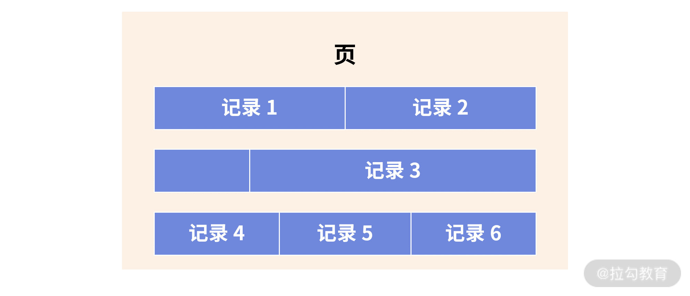
若发生更新，记录 1 原先的空间无法容纳更新后记录 1 的存储空间，因此，这时数据库会将记录 1 标记为删除，寻找新的空间给记录1使用，如：
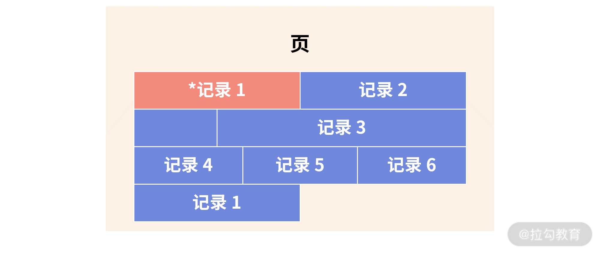
上图中*记录 1 表示的就是原先记录 1 占用的空间，而这个空间后续将变成碎片空间，无法继续使用，除非人为地进行表空间的碎片整理。
那么，当使用 BIG INT 存储金额字段的时候，如何表示小数点中的数据呢？其实，这部分完全可以交由前端进行处理并展示。作为数据库本身，只要按分进行存储即可。
总结
今天，我带你深入了解了 MySQL 数字类型在表结构设计中的实战。我总结一下今天的重点：
- 不推荐使用整型类型的属性 Unsigned，若非要使用，参数 sql_mode 务必额外添加上选项 NO_UNSIGNED_SUBTRACTION；
- 自增整型类型做主键，务必使用类型 BIGINT，而非 INT，后期表结构调整代价巨大；
- MySQL 8.0 版本前，自增整型会有回溯问题，做业务开发的你一定要了解这个问题；
- 当达到自增整型类型的上限值时，再次自增插入，MySQL 数据库会报重复错误；
- 不要再使用浮点类型 Float、Double，MySQL 后续版本将不再支持上述两种类型；
- 账户余额字段，设计是用整型类型，而不是 DECIMAL 类型，这样性能更好，存储更紧凑。
02 字符串类型：不能忽略的 COLLATION
今天我想和你聊一聊字符串类型的排序规则。
上一讲我们了解了怎么在表结构设计中正确使用数字类型，除了数字类型，字符串类型在表结构设计时也比较常见，它通常用于描述具体的信息。
MySQL 数据库的字符串类型有 CHAR、VARCHAR、BINARY、BLOB、TEXT、ENUM、SET。不同的类型在业务设计、数据库性能方面的表现完全不同，其中最常使用的是 CHAR、VARCHAR。今天我就带你深入了解字符串类型 CHAR、VARCHAR 的应用，希望学完这一讲，你能真正用好 MySQL 的字符串类型，从而设计出一个更为优美的业务表结构。
CHAR 和 VARCHAR 的定义
CHAR(N) 用来保存固定长度的字符，N 的范围是 0 ~ 255，请牢记，N 表示的是字符，而不是字节。VARCHAR(N) 用来保存变长字符，N 的范围为 0 ~ 65536， N 表示字符。
在超出 65536 个字符的情况下，可以考虑使用更大的字符类型 TEXT 或 BLOB，两者最大存储长度为 4G，其区别是 BLOB 没有字符集属性，纯属二进制存储。
和 Oracle、Microsoft SQL Server 等传统关系型数据库不同的是，MySQL 数据库的 VARCHAR 字符类型，最大能够存储 65536 个字符，所以在 MySQL 数据库下，绝大部分场景使用类型 VARCHAR 就足够了。
字符集
在表结构设计中，除了将列定义为 CHAR 和 VARCHAR 用以存储字符以外，还需要额外定义字符对应的字符集，因为每种字符在不同字符集编码下，对应着不同的二进制值。常见的字符集有 GBK、UTF8，通常推荐把默认字符集设置为 UTF8。
而且随着移动互联网的飞速发展，推荐把 MySQL 的默认字符集设置为 UTF8MB4，否则，某些 emoji 表情字符无法在 UTF8 字符集下存储，比如 emoji 笑脸表情，对应的字符编码为 0xF09F988E：
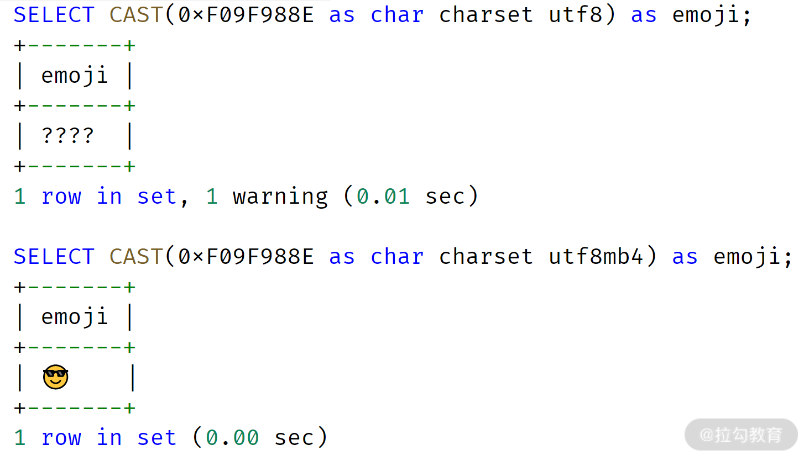
若强行在字符集为 UTF8 的列上插入 emoji 表情字符， MySQL 会抛出如下错误信息：
mysql> SHOW CREATE TABLE emoji_test\G
*************************** 1. row ***************************
Table: emoji_test
Create Table: CREATE TABLE `emoji_test` (
`a` varchar(100) CHARACTER SET utf8,
PRIMARY KEY (`a`)
) ENGINE=InnoDB DEFAULT CHARSET=utf8
1 row in set (0.01 sec)
mysql> INSERT INTO emoji_test VALUES (0xF09F988E);
ERROR 1366 (HY000): Incorrect string value: '\xF0\x9F\x98\x8E' for column 'a' at row 1
包括 MySQL 8.0 版本在内，字符集默认设置成 UTF8MB4，8.0 版本之前默认的字符集为 Latin1。因为不同版本默认字符集的不同，你要显式地在配置文件中进行相关参数的配置：
[mysqld]
character-set-server = utf8mb4
...
另外，不同的字符集，CHAR(N)、VARCHAR(N) 对应最长的字节也不相同。比如 GBK 字符集，1 个字符最大存储 2 个字节，UTF8MB4 字符集 1 个字符最大存储 4 个字节。所以从底层存储内核看，在多字节字符集下，CHAR 和 VARCHAR 底层的实现完全相同，都是变长存储！
从上面的例子可以看到，CHAR(1) 既可以存储 1 个 'a' 字节，也可以存储 4 个字节的 emoji 笑脸表情，因此 CHAR 本质也是变长的。
鉴于目前默认字符集推荐设置为 UTF8MB4，所以在表结构设计时，可以把 CHAR 全部用 VARCHAR 替换，底层存储的本质实现一模一样。
排序规则
排序规则（Collation）是比较和排序字符串的一种规则，每个字符集都会有默认的排序规则，你可以用命令 SHOW CHARSET 来查看：
mysql> SHOW CHARSET LIKE 'utf8%';
+---------+---------------+--------------------+--------+
| Charset | Description | Default collation | Maxlen |
+---------+---------------+--------------------+--------+
| utf8 | UTF-8 Unicode | utf8_general_ci | 3 |
| utf8mb4 | UTF-8 Unicode | utf8mb4_0900_ai_ci | 4 |
+---------+---------------+--------------------+--------+
2 rows in set (0.01 sec)
mysql> SHOW COLLATION LIKE 'utf8mb4%';
+----------------------------+---------+-----+---------+----------+---------+---------------+
| Collation | Charset | Id | Default | Compiled | Sortlen | Pad_attribute |
+----------------------------+---------+-----+---------+----------+---------+---------------+
| utf8mb4_0900_ai_ci | utf8mb4 | 255 | Yes | Yes | 0 | NO PAD |
| utf8mb4_0900_as_ci | utf8mb4 | 305 | | Yes | 0 | NO PAD |
| utf8mb4_0900_as_cs | utf8mb4 | 278 | | Yes | 0 | NO PAD |
| utf8mb4_0900_bin | utf8mb4 | 309 | | Yes | 1 | NO PAD |
| utf8mb4_bin | utf8mb4 | 46 | | Yes | 1 | PAD SPACE |
......
排序规则以 _ci 结尾，表示不区分大小写（Case Insentive），_cs 表示大小写敏感，_bin 表示通过存储字符的二进制进行比较。需要注意的是，比较 MySQL 字符串，默认采用不区分大小的排序规则：
mysql> SELECT 'a' = 'A';
+-----------+
| 'a' = 'A' |
+-----------+
| 1 |
+-----------+
1 row in set (0.00 sec)
mysql> SELECT CAST('a' as char) COLLATE utf8mb4_0900_as_cs = CAST('A' as CHAR) COLLATE utf8mb4_0900_as_cs as result;
+--------+
| result |
+--------+
| 0 |
+--------+
1 row in set (0.00 sec)
牢记，绝大部分业务的表结构设计无须设置排序规则为大小写敏感！除非你能明白你的业务真正需要。
正确修改字符集
当然，相信不少业务在设计时没有考虑到字符集对于业务数据存储的影响，所以后期需要进行字符集转换，但很多同学会发现执行如下操作后，依然无法插入 emoji 这类 UTF8MB4 字符：
ALTER TABLE emoji_test CHARSET utf8mb4;
其实，上述修改只是将表的字符集修改为 UTF8MB4，下次新增列时，若不显式地指定字符集，新列的字符集会变更为 UTF8MB4，但对于已经存在的列，其默认字符集并不做修改，你可以通过命令 SHOW CREATE TABLE 确认：
mysql> SHOW CREATE TABLE emoji_test\G
*************************** 1. row ***************************
Table: emoji_test
Create Table: CREATE TABLE `emoji_test` (
`a` varchar(100) CHARACTER SET utf8 COLLATE utf8_general_ci NOT NULL,
PRIMARY KEY (`a`)
) ENGINE=InnoDB DEFAULT CHARSET=utf8mb4 COLLATE=utf8mb4_0900_ai_ci
1 row in set (0.00 sec)
可以看到，列 a 的字符集依然是 UTF8，而不是 UTF8MB4。因此，正确修改列字符集的命令应该使用 ALTER TABLE ... CONVERT TO...这样才能将之前的列 a 字符集从 UTF8 修改为 UTF8MB4：
mysql> ALTER TABLE emoji_test CONVERT TO CHARSET utf8mb4;
Query OK, 0 rows affected (0.94 sec)
Records: 0 Duplicates: 0 Warnings: 0
mysql> SHOW CREATE TABLE emoji_test\G
*************************** 1. row ***************************
Table: emoji_test
Create Table: CREATE TABLE `emoji_test` (
`a` varchar(100) CHARACTER SET utf8mb4 COLLATE utf8mb4_0900_ai_ci NOT NULL,
PRIMARY KEY (`a`)
) ENGINE=InnoDB DEFAULT CHARSET=utf8mb4 COLLATE=utf8mb4_0900_ai_ci
1 row in set (0.00 sec)
讲到这儿，我们已经学完了字符串相关的基础知识，接下来就一起进行 MySQL 字符串表结构的设计实战，希望你能在设计中真正用好字符串类型。
业务表结构设计实战
用户性别设计
设计表结构时，你会遇到一些固定选项值的字段。例如，性别字段（Sex），只有男或女；又或者状态字段（State），有效的值为运行、停止、重启等有限状态。
我观察后发现，大多数开发人员喜欢用 INT 的数字类型去存储性别字段，比如：
CREATE TABLE `User` (
`id` bigint NOT NULL AUTO_INCREMENT,
`sex` tinyint DEFAULT NULL,
......
PRIMARY KEY (`id`)
) ENGINE=InnoDB；
其中，tinyint 列 sex 表示用户性别，但这样设计问题比较明显。
- 表达不清：在具体存储时，0 表示女，还是 1 表示女呢？每个业务可能有不同的潜规则；
- 脏数据：因为是 tinyint，因此除了 0 和 1，用户完全可以插入 2、3、4 这样的数值，最终表中存在无效数据的可能，后期再进行清理，代价就非常大了。
在 MySQL 8.0 版本之前，可以使用 ENUM 字符串枚举类型，只允许有限的定义值插入。如果将参数 SQL_MODE 设置为严格模式，插入非定义数据就会报错：
mysql> SHOW CREATE TABLE User\G
*************************** 1. row ***************************
Table: User
Create Table: CREATE TABLE `User` (
`id` bigint NOT NULL AUTO_INCREMENT,
`sex` enum('M','F') COLLATE utf8mb4_general_ci DEFAULT NULL,
PRIMARY KEY (`id`)
) ENGINE=InnoDB
1 row in set (0.00 sec)
mysql> SET sql_mode = 'STRICT_TRANS_TABLES';
Query OK, 0 rows affected, 1 warning (0.00 sec)
mysql> INSERT INTO User VALUES (NULL,'F');
Query OK, 1 row affected (0.08 sec)
mysql> INSERT INTO User VALUES (NULL,'A');
ERROR 1265 (01000): Data truncated for column 'sex' at row 1
由于类型 ENUM 并非 SQL 标准的数据类型，而是 MySQL 所独有的一种字符串类型。抛出的错误提示也并不直观，这样的实现总有一些遗憾，主要是因为MySQL 8.0 之前的版本并没有提供约束功能。自 MySQL 8.0.16 版本开始，数据库原生提供 CHECK 约束功能，可以方便地进行有限状态列类型的设计：
mysql> SHOW CREATE TABLE User\G
*************************** 1. row ***************************
Table: User
Create Table: CREATE TABLE `User` (
`id` bigint NOT NULL AUTO_INCREMENT,
`sex` char(1) COLLATE utf8mb4_general_ci DEFAULT NULL,
PRIMARY KEY (`id`),
CONSTRAINT `user_chk_1` CHECK (((`sex` = _utf8mb4'M') or (`sex` = _utf8mb4'F')))
) ENGINE=InnoDB
1 row in set (0.00 sec)
mysql> INSERT INTO User VALUES (NULL,'M');
Query OK, 1 row affected (0.07 sec)
mysql> INSERT INTO User VALUES (NULL,'Z');
ERROR 3819 (HY000): Check constraint 'user_chk_1' is violated.
从这段代码中看到，第 8 行的约束定义 user_chk_1 表示列 sex 的取值范围，只能是 M 或者 F。同时，当 15 行插入非法数据 Z 时，你可以看到 MySQL 显式地抛出了违法约束的提示。
账户密码存储设计
切记，在数据库表结构设计时，千万不要直接在数据库表中直接存储密码，一旦有恶意用户进入到系统，则面临用户数据泄露的极大风险。比如金融行业，从合规性角度看，所有用户隐私字段都需要加密，甚至业务自己都无法知道用户存储的信息（隐私数据如登录密码、手机、信用卡信息等）。
相信不少开发开发同学会通过函数 MD5 加密存储隐私数据，这没有错，因为 MD5 算法并不可逆。然而，MD5 加密后的值是固定的，如密码 12345678，它对应的 MD5 固定值即为 25d55ad283aa400af464c76d713c07ad。
因此，可以对 MD5 进行暴力破解，计算出所有可能的字符串对应的 MD5 值。若无法枚举所有的字符串组合，那可以计算一些常见的密码，如111111、12345678 等。我放在文稿中的这个网站，可用于在线解密 MD5 加密后的字符串。
所以，在设计密码存储使用，还需要加盐（salt），每个公司的盐值都是不同的，因此计算出的值也是不同的。若盐值为 psalt，则密码 12345678 在数据库中的值为：
password = MD5（‘psalt12345678’）
这样的密码存储设计是一种固定盐值的加密算法，其中存在三个主要问题：
- 若 salt 值被（离职）员工泄漏，则外部黑客依然存在暴利破解的可能性；
- 对于相同密码，其密码存储值相同，一旦一个用户密码泄漏，其他相同密码的用户的密码也将被泄漏；
- 固定使用 MD5 加密算法，一旦 MD5 算法被破解，则影响很大。
所以一个真正好的密码存储设计，应该是：动态盐 + 非固定加密算法。
我比较推荐这么设计密码，列 password 存储的格式如下：
$salt$cryption_algorithm$value
其中：
- $salt：表示动态盐，每次用户注册时业务产生不同的盐值，并存储在数据库中。若做得再精细一点，可以动态盐值 + 用户注册日期合并为一个更为动态的盐值。
- $cryption_algorithm：表示加密的算法，如 v1 表示 MD5 加密算法，v2 表示 AES256 加密算法，v3 表示 AES512 加密算法等。
- $value：表示加密后的字符串。
这时表 User 的结构设计如下所示：
CREATE TABLE User (
id BIGINT NOT NULL AUTO_INCREMENT,
name VARCHAR(255) NOT NULL,
sex CHAR(1) NOT NULL,
password VARCHAR(1024) NOT NULL,
regDate DATETIME NOT NULL,
CHECK (sex = 'M' OR sex = 'F'),
PRIMARY KEY(id)
);
SELECT * FROM User\G
*************************** 1. row ***************************
id: 1
name: David
sex: M
password: $fgfaef$v1$2198687f6db06c9d1b31a030ba1ef074
regDate: 2020-09-07 15:30:00
*************************** 2. row ***************************
id: 2
name: Amy
sex: F
password: $zpelf$v2$0x860E4E3B2AA4005D8EE9B7653409C4B133AF77AEF53B815D31426EC6EF78D882
regDate: 2020-09-07 17:28:00
在上面的例子中，用户 David 和 Amy 密码都是 12345678，然而由于使用了动态盐和动态加密算法，两者存储的内容完全不同。
即便别有用心的用户拿到当前密码加密算法，则通过加密算法 $cryption_algorithm 版本，可以对用户存储的密码进行升级，进一步做好对于恶意数据攻击的防范。
总结
字符串是使用最为广泛的数据类型之一，但也是设计最初容易犯错的部分，后期业务跑起来再进行修改，代价将会非常巨大。希望你能反复细读本讲的内容，从而在表结构设计伊始，业务就做好最为充分的准备。我总结下本节的重点内容：
- CHAR 和 VARCHAR 虽然分别用于存储定长和变长字符，但对于变长字符集（如 GBK、UTF8MB4），其本质是一样的，都是变长，设计时完全可以用 VARCHAR 替代 CHAR；
- 推荐 MySQL 字符集默认设置为 UTF8MB4，可以用于存储 emoji 等扩展字符；
- 排序规则很重要，用于字符的比较和排序，但大部分场景不需要用区分大小写的排序规则；
- 修改表中已有列的字符集，使用命令 ALTER TABLE ... CONVERT TO ....；
- 用户性别，运行状态等有限值的列，MySQL 8.0.16 版本直接使用 CHECK 约束机制，之前的版本可使用 ENUM 枚举字符串类型，外加 SQL_MODE 的严格模式；
- 业务隐私信息，如密码、手机、信用卡等信息，需要加密。切记简单的MD5算法是可以进行暴力破解，并不安全，推荐使用动态盐+动态加密算法进行隐私数据的存储。
03 日期类型：TIMESTAMP 可能是巨坑
前两讲我带你了解了 MySQL 数据库中常见的数字类型和字符串类型，除了这两种类型外，日期类型也较为常见。
几乎每张业务表都带有一个日期列，用于记录每条记录产生和变更的时间。比如用户表会有一个日期列记录用户注册的时间、用户最后登录的时间。又比如，电商行业中的订单表（核心业务表）会有一个订单产生的时间列，当支付时间超过订单产生的时间，这个订单可能会被系统自动取消。
日期类型虽然常见，但在表结构设计中也容易犯错，比如很多开发同学都倾向使用整型存储日期类型，同时也会忽略不同日期类型对于性能可能存在的潜在影响。所以你有必要认真学习这一讲，举一反三，在自己的业务中做好日期类型的设计。
日期类型
MySQL 数据库中常见的日期类型有 YEAR、DATE、TIME、DATETIME、TIMESTAMEP。因为业务绝大部分场景都需要将日期精确到秒，所以在表结构设计中，常见使用的日期类型为DATETIME 和 TIMESTAMP。接下来，我就带你深入了解这两种类型，以及它们在设计中的应用实战。
DATETIME
类型 DATETIME 最终展现的形式为：YYYY-MM-DD HH：MM：SS，固定占用 8 个字节。
从 MySQL 5.6 版本开始，DATETIME 类型支持毫秒，DATETIME(N) 中的 N 表示毫秒的精度。例如，DATETIME(6) 表示可以存储 6 位的毫秒值。同时，一些日期函数也支持精确到毫秒，例如常见的函数 NOW、SYSDATE：
mysql> SELECT NOW(6);
+----------------------------+
| NOW(6) |
+----------------------------+
| 2020-09-14 17:50:28.707971 |
+----------------------------+
1 row in set (0.00 sec)
用户可以将 DATETIME 初始化值设置为当前时间，并设置自动更新当前时间的属性。例如之前已设计的用户表 User，我在其基础上，修改了register_date、last_modify_date的定义：
CREATE TABLE User (
id BIGINT NOT NULL AUTO_INCREMENT,
name VARCHAR(255) NOT NULL,
sex CHAR(1) NOT NULL,
password VARCHAR(1024) NOT NULL,
money INT NOT NULL DEFAULT 0,
register_date DATETIME(6) NOT NULL DEFAULT CURRENT_TIMESTAMP(6),
last_modify_date DATETIME(6) NOT NULL DEFAULT CURRENT_TIMESTAMP(6) ON UPDATE CURRENT_TIMESTAMP(6),
CHECK (sex = 'M' OR sex = 'F'),
PRIMARY KEY(id)
);
在上面的表 User 中，列 register_date 表示注册时间，DEFAULT CURRENT_TIMESTAMP 表示记录插入时，若没有指定时间，默认就是当前时间。
列 last_modify_date 表示当前记录最后的修改时间，DEFAULT CURRENT_TIMESTAMP(6) ON UPDATE CURRENT_TIMESTAMP(6) 表示每次修改都会修改为当前时间。
这样的设计保证当用户的金钱（money 字段）发生了变更，则 last_modify_date 能记录最后一次用户金钱发生变更时的时间。来看下面的例子：
mysql> SELECT name,money,last_modify_date FROM User WHERE name = 'David';
+-------+-------+----------------------------+
| name | money | last_modify_date |
+-------+-------+----------------------------+
| David | 100 | 2020-09-13 08:08:33.898593 |
+-------+-------+----------------------------+
1 row in set (0.00 sec)
mysql> UPDATE User SET money = money - 1 WHERE name = 'David';
Query OK, 1 row affected (0.06 sec)
Rows matched: 1 Changed: 1 Warnings: 0
mysql> SELECT name,money,last_modify_date FROM User WHERE name = 'David';
+-------+-------+----------------------------+
| name | money | last_modify_date |
+-------+-------+----------------------------+
| David | 99 | 2020-09-14 18:29:17.056327 |
+-------+-------+----------------------------+
1 row in set (0.00 sec)
可以看到，当用户金额发生修改时，所对应的字段 last_modify_date 也修改成发生变更的时间。
TIMESTAMP
除了 DATETIME，日期类型中还有一种 TIMESTAMP 的时间戳类型，其实际存储的内容为‘1970-01-01 00:00:00’到现在的毫秒数。在 MySQL 中，由于类型 TIMESTAMP 占用 4 个字节，因此其存储的时间上限只能到‘2038-01-19 03:14:07’。
同类型 DATETIME 一样，从 MySQL 5.6 版本开始，类型 TIMESTAMP 也能支持毫秒。与 DATETIME 不同的是，若带有毫秒时，类型 TIMESTAMP 占用 7 个字节，而 DATETIME 无论是否存储毫秒信息，都占用 8 个字节。
类型 TIMESTAMP 最大的优点是可以带有时区属性，因为它本质上是从毫秒转化而来。如果你的业务需要对应不同的国家时区，那么类型 TIMESTAMP 是一种不错的选择。比如新闻类的业务，通常用户想知道这篇新闻发布时对应的自己国家时间，那么 TIMESTAMP 是一种选择。
另外，有些国家会执行夏令时。根据不同的季节，人为地调快或调慢 1 个小时，带有时区属性的 TIMESTAMP 类型本身就能解决这个问题。
参数 time_zone 指定了当前使用的时区，默认为 SYSTEM 使用操作系统时区，用户可以通过该参数指定所需要的时区。
如果想使用 TIMESTAMP 的时区功能，你可以通过下面的语句将之前的用户表 User 的注册时间字段类型从 DATETIME(6) 修改为 TIMESTAMP(6)：
ALTER TABLE User
CHANGE register_date
register_date TIMESTAMP(6) NOT NULL DEFAULT CURRENT_TIMESTAMP
(6);
这时通过设定不同的 time_zone，可以观察到不同时区下的注册时间：
mysql> SELECT name,regist er_date FROM User WHERE name = 'David';
+-------+----------------------------+
| name | register_date |
+-------+----------------------------+
| David | 2018-09-14 18:28:33.898593 |
+-------+----------------------------+
1 row in set (0.00 sec)
mysql> SET time_zone = '-08:00';
Query OK, 0 rows affected (0.00 sec)
mysql> SELECT name,register_date FROM User WHERE name = 'David';
+-------+----------------------------+
| name | register_date |
+-------+----------------------------+
| David | 2018-09-14 02:28:33.898593 |
+-------+----------------------------+
1 row in set (0.00 sec)
从上述例子中，你可以看到，中国的时区是 +08:00，美国的时区是 -08:00，因此改为美国时区后，可以看到用户注册时间比之前延迟了 16 个小时。当然了，直接加减时区并不直观，需要非常熟悉各国的时区表。在 MySQL 中可以直接设置时区的名字，如：
mysql> SET time_zone = 'America/Los_Angeles';
Query OK, 0 rows affected (0.00 sec)
mysql> SELECT NOW();
+---------------------+
| NOW() |
+---------------------+
| 2020-09-14 20:12:49 |
+---------------------+
1 row in set (0.00 sec)
mysql> SET time_zone = 'Asia/Shanghai';
Query OK, 0 rows affected (0.00 sec)
mysql> SELECT NOW();
+---------------------+
| NOW() |
+---------------------+
| 2020-09-15 11:12:55 |
+---------------------+
1 row in set (0.00 sec)
讲到这儿，想必你已经了解了时间字段类型，接下来我将分享在真实业务设计中如何使用好时间类型。
业务表结构设计实战
DATETIME vs TIMESTAMP vs INT，怎么选？
在做表结构设计时，对日期字段的存储，开发人员通常会有 3 种选择：DATETIME、TIMESTAMP、INT。
INT 类型就是直接存储 '1970-01-01 00:00:00' 到现在的毫秒数，本质和 TIMESTAMP 一样，因此用 INT 不如直接使用 TIMESTAMP。
当然，有些同学会认为 INT 比 TIMESTAMP 性能更好。但是，由于当前每个 CPU 每秒可执行上亿次的计算，所以无须为这种转换的性能担心。更重要的是，在后期运维和数据分析时，使用 INT 存储日期，是会让 DBA 和数据分析人员发疯的，INT的可运维性太差。
也有的同学会热衷用类型 TIMESTEMP 存储日期，因为类型 TIMESTAMP 占用 4 个字节，比 DATETIME 小一半的存储空间。
但若要将时间精确到毫秒，TIMESTAMP 要 7 个字节，和 DATETIME 8 字节差不太多。另一方面，现在距离 TIMESTAMP 的最大值‘2038-01-19 03:14:07’已经很近，这是需要开发同学好好思考的问题。
总的来说，我建议你使用类型 DATETIME。 对于时区问题，可以由前端或者服务这里做一次转化，不一定非要在数据库中解决。
不要忽视 TIMESTAMP 的性能问题
前面已经提及，TIMESTAMP 的上限值 2038 年很快就会到来，那时业务又将面临一次类似千年虫的问题。另外，TIMESTAMP 还存在潜在的性能问题。
虽然从毫秒数转换到类型 TIMESTAMP 本身需要的 CPU 指令并不多，这并不会带来直接的性能问题。但是如果使用默认的操作系统时区，则每次通过时区计算时间时，要调用操作系统底层系统函数 __tz_convert()，而这个函数需要额外的加锁操作，以确保这时操作系统时区没有修改。所以，当大规模并发访问时，由于热点资源竞争，会产生两个问题。
- 性能不如 DATETIME： DATETIME 不存在时区转化问题。
- 性能抖动： 海量并发时，存在性能抖动问题。
为了优化 TIMESTAMP 的使用，强烈建议你使用显式的时区，而不是操作系统时区。比如在配置文件中显示地设置时区，而不要使用系统时区：
[mysqld]
time_zone = "+08:00"
最后，通过命令 mysqlslap 来测试 TIMESTAMP、DATETIME 的性能，命令如下：
# 比较time_zone为System和Asia/Shanghai的性能对比
mysqlslap -uroot --number-of-queries=1000000 --concurrency=100 --query='SELECT NOW()'
最后的性能对比如下：
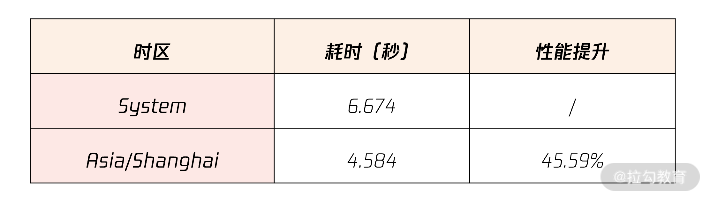
从表中可以发现，显式指定时区的性能要远远好于直接使用操作系统时区。所以，日期字段推荐使用 DATETIME，没有时区转化。即便使用 TIMESTAMP，也需要在数据库中显式地配置时区，而不是用系统时区。
表结构设计规范：每条记录都要有一个时间字段
在做表结构设计规范时，强烈建议你每张业务核心表都增加一个 DATETIME 类型的 last_modify_date 字段，并设置修改自动更新机制， 即便标识每条记录最后修改的时间。
例如，在前面的表 User 中的字段 last_modify_date，就是用于表示最后一次的修改时间：
CREATE TABLE User (
id BIGINT NOT NULL AUTO_INCREMENT,
name VARCHAR(255) NOT NULL,
sex CHAR(1) NOT NULL,
password VARCHAR(1024) NOT NULL,
money INT NOT NULL DEFAULT 0,
register_date DATETIME(6) NOT NULL DEFAULT CURRENT_TIMESTAMP(6),
last_modify_date DATETIME(6) NOT NULL DEFAULT CURRENT_TIMESTAMP(6) ON UPDATE CURRENT_TIMESTAMP(6),
CHECK (sex = 'M' OR sex = 'F'),
PRIMARY KEY(id)
);
通过字段 last_modify_date 定义的 ON UPDATE CURRENT_TIMESTAMP(6)，那么每次这条记录，则都会自动更新 last_modify_date 为当前时间。
这样设计的好处是： 用户可以知道每个用户最近一次记录更新的时间，以便做后续的处理。比如在电商的订单表中，可以方便对支付超时的订单做处理；在金融业务中，可以根据用户资金最后的修改时间做相应的资金核对等。
在后面的内容中，我们也会谈到 MySQL 数据库的主从逻辑数据核对的设计实现，也会利用到last_modify_date 字段。
总结
日期类型通常就是使用 DATETIME 和 TIMESTAMP 两种类型，然而由于类型 TIMESTAMP 存在性能问题，建议你还是尽可能使用类型 DATETIME。我总结一下今天的重点内容：
- MySQL 5.6 版本开始 DATETIME 和 TIMESTAMP 精度支持到毫秒；
- DATETIME 占用 8 个字节，TIMESTAMP 占用 4 个字节，DATETIME(6) 依然占用 8 个字节，TIMESTAMP(6) 占用 7 个字节；
- TIMESTAMP 日期存储的上限为 2038-01-19 03:14:07，业务用 TIMESTAMP 存在风险；
- 使用 TIMESTAMP 必须显式地设置时区，不要使用默认系统时区，否则存在性能问题，推荐在配置文件中设置参数 time_zone = '+08:00'；
- 推荐日期类型使用 DATETIME，而不是 TIMESTAMP 和 INT 类型；
- 表结构设计时，每个核心业务表，推荐设计一个 last_modify_date 的字段，用以记录每条记录的最后修改时间。
04 非结构存储：用好 JSON 这张牌
前面几讲，我已经带你了解了 MySQL 数据库中常见的 3 种类型：数字类型、字符串类型和日期类型。然而，它们都属于传统关系型设计的范畴。
关系型的结构化存储存在一定的弊端，因为它需要预先定义好所有的列以及列对应的类型。但是业务在发展过程中，或许需要扩展单个列的描述功能，这时，如果能用好 JSON 数据类型，那就能打通关系型和非关系型数据的存储之间的界限，为业务提供更好的架构选择。
当然，很多同学在用 JSON 数据类型时会遇到各种各样的问题，其中最容易犯的误区就是将类型 JSON 简单理解成字符串类型。 但当你学完今天的内容之后，会真正认识到 JSON 数据类型的威力，从而在实际工作中更好地存储非结构化的数据。
JSON 数据类型
JSON（JavaScript Object Notation）主要用于互联网应用服务之间的数据交换。MySQL 支持RFC 7159定义的 JSON 规范，主要有JSON 对象和JSON 数组两种类型。下面就是 JSON 对象，主要用来存储图片的相关信息：
{
"Image": {
"Width": 800,
"Height": 600,
"Title": "View from 15th Floor",
"Thumbnail": {
"Url": "http://www.example.com/image/481989943",
"Height": 125,
"Width": 100
},
"IDs": [116, 943, 234, 38793]
}
}
从中你可以看到， JSON 类型可以很好地描述数据的相关内容，比如这张图片的宽度、高度、标题等（这里使用到的类型有整型、字符串类型）。
JSON对象除了支持字符串、整型、日期类型，JSON 内嵌的字段也支持数组类型，如上代码中的 IDs 字段。
另一种 JSON 数据类型是数组类型，如：
[
{
"precision": "zip",
"Latitude": 37.7668,
"Longitude": -122.3959,
"Address": "",
"City": "SAN FRANCISCO",
"State": "CA",
"Zip": "94107",
"Country": "US"
},
{
"precision": "zip",
"Latitude": 37.371991,
"Longitude": -122.026020,
"Address": "",
"City": "SUNNYVALE",
"State": "CA",
"Zip": "94085",
"Country": "US"
}
]
上面的示例演示的是一个 JSON 数组，其中有 2 个 JSON 对象。
到目前为止，可能很多同学会把 JSON 当作一个很大的字段串类型，从表面上来看，没有错。但本质上，JSON 是一种新的类型，有自己的存储格式，还能在每个对应的字段上创建索引，做特定的优化，这是传统字段串无法实现的。JSON 类型的另一个好处是无须预定义字段，字段可以无限扩展。而传统关系型数据库的列都需预先定义，想要扩展需要执行 ALTER TABLE ... ADD COLUMN ... 这样比较重的操作。
需要注意是，JSON 类型是从 MySQL 5.7 版本开始支持的功能，而 8.0 版本解决了更新 JSON 的日志性能瓶颈。如果要在生产环境中使用 JSON 数据类型，强烈推荐使用 MySQL 8.0 版本。
讲到这儿，你已经对 JSON 类型的基本概念有所了解了，接下来，我们进入实战环节：如何在业务中用好JSON类型？
业务表结构设计实战
用户登录设计
在数据库中，JSON 类型比较适合存储一些修改较少、相对静态的数据，比如用户登录信息的存储如下：
DROP TABLE IF EXISTS UserLogin;
CREATE TABLE UserLogin (
userId BIGINT NOT NULL,
loginInfo JSON,
PRIMARY KEY(userId)
);
由于当前业务的登录方式越来越多样化，如同一账户支持手机、微信、QQ 账号登录，所以这里可以用 JSON 类型存储登录的信息。
接着，插入下面的数据：
SET @a = '
{
"cellphone" : "13918888888",
"wxchat" : "破产码农",
"QQ" : "82946772"
}
';
INSERT INTO UserLogin VALUES (1,@a);
SET @b = '
{
"cellphone" : "15026888888"
}
';
INSERT INTO UserLogin VALUES (2,@b);
从上面的例子中可以看到，用户 1 登录有三种方式：手机验证码登录、微信登录、QQ 登录，而用户 2 只有手机验证码登录。
而如果不采用 JSON 数据类型，就要用下面的方式建表：
CREATE TABLE UserLogin (
userId BIGINT NOT NULL,
cellphone VARCHAR(255),
wechat VARCHAR(255)
QQ VARCHAR(255),
PRIMARY KEY(userId)
);
可以看到，虽然用传统关系型的方式也可以完成相关数据的存储，但是存在两个问题。
- 有些列可能是比较稀疏的，一些列可能大部分都是 NULL 值；
- 如果要新增一种登录类型，如微博登录，则需要添加新列，而 JSON 类型无此烦恼。
因为支持了新的JSON类型，MySQL 配套提供了丰富的 JSON 字段处理函数，用于方便地操作 JSON 数据，具体可以见 MySQL 官方文档。
其中，最常见的就是函数 JSON_EXTRACT，它用来从 JSON 数据中提取所需要的字段内容，如下面的这条 SQL 语句就查询用户的手机和微信信息。
SELECT
userId,
JSON_UNQUOTE(JSON_EXTRACT(loginInfo,"$.cellphone")) cellphone,
JSON_UNQUOTE(JSON_EXTRACT(loginInfo,"$.wxchat")) wxchat
FROM UserLogin;
+--------+-------------+--------------+
| userId | cellphone | wxchat |
+--------+-------------+--------------+
| 1 | 13918888888 | 破产码农 |
| 2 | 15026888888 | NULL |
+--------+-------------+--------------+
2 rows in set (0.01 sec)
当然了，每次写 JSON_EXTRACT、JSON_UNQUOTE 非常麻烦，MySQL 还提供了 ->> 表达式，和上述 SQL 效果完全一样：
SELECT
userId,
loginInfo->>"$.cellphone" cellphone,
loginInfo->>"$.wxchat" wxchat
FROM UserLogin;
当 JSON 数据量非常大，用户希望对 JSON 数据进行有效检索时，可以利用 MySQL 的函数索引功能对 JSON 中的某个字段进行索引。
比如在上面的用户登录示例中，假设用户必须绑定唯一手机号，且希望未来能用手机号码进行用户检索时，可以创建下面的索引：
ALTER TABLE UserLogin ADD COLUMN cellphone VARCHAR(255) AS (loginInfo->>"$.cellphone");
ALTER TABLE UserLogin ADD UNIQUE INDEX idx_cellphone(cellphone);
上述 SQL 首先创建了一个虚拟列 cellphone，这个列是由函数 loginInfo->>"$.cellphone" 计算得到的。然后在这个虚拟列上创建一个唯一索引 idx_cellphone。这时再通过虚拟列 cellphone 进行查询，就可以看到优化器会使用到新创建的 idx_cellphone 索引：
EXPLAIN SELECT * FROM UserLogin
WHERE cellphone = '13918888888'\G
*************************** 1. row ***************************
id: 1
select_type: SIMPLE
table: UserLogin
partitions: NULL
type: const
possible_keys: idx_cellphone
key: idx_cellphone
key_len: 1023
ref: const
rows: 1
filtered: 100.00
Extra: NULL
1 row in set, 1 warning (0.00 sec)
当然，我们可以在一开始创建表的时候，就完成虚拟列及函数索引的创建。如下表创建的列 cellphone 对应的就是 JSON 中的内容，是个虚拟列；uk_idx_cellphone 就是在虚拟列 cellphone 上所创建的索引。
CREATE TABLE UserLogin (
userId BIGINT,
loginInfo JSON,
cellphone VARCHAR(255) AS (loginInfo->>"$.cellphone"),
PRIMARY KEY(userId),
UNIQUE KEY uk_idx_cellphone(cellphone)
);
用户画像设计
某些业务需要做用户画像（也就是对用户打标签），然后根据用户的标签，通过数据挖掘技术，进行相应的产品推荐。比如：
- 在电商行业中，根据用户的穿搭喜好，推荐相应的商品；
- 在音乐行业中，根据用户喜欢的音乐风格和常听的歌手，推荐相应的歌曲；
- 在金融行业，根据用户的风险喜好和投资经验，推荐相应的理财产品。
在这，我强烈推荐你用 JSON 类型在数据库中存储用户画像信息，并结合 JSON 数组类型和多值索引的特点进行高效查询。假设有张画像定义表：
CREATE TABLE Tags (
tagId bigint auto_increment,
tagName varchar(255) NOT NULL,
primary key(tagId)
);
SELECT * FROM Tags;
+-------+--------------+
| tagId | tagName |
+-------+--------------+
| 1 | 70后 |
| 2 | 80后 |
| 3 | 90后 |
| 4 | 00后 |
| 5 | 爱运动 |
| 6 | 高学历 |
| 7 | 小资 |
| 8 | 有房 |
| 9 | 有车 |
| 10 | 常看电影 |
| 11 | 爱网购 |
| 12 | 爱外卖 |
+-------+--------------+
可以看到，表 Tags 是一张画像定义表，用于描述当前定义有多少个标签，接着给每个用户打标签，比如用户 David，他的标签是 80 后、高学历、小资、有房、常看电影；用户 Tom，90 后、常看电影、爱外卖。
若不用 JSON 数据类型进行标签存储，通常会将用户标签通过字符串，加上分割符的方式，在一个字段中存取用户所有的标签：
+-------+---------------------------------------+
|用户 |标签 |
+-------+---------------------------------------+
|David |80后 ； 高学历 ； 小资 ； 有房 ；常看电影 |
|Tom |90后 ；常看电影 ； 爱外卖 |
+-------+---------------------------------------+
这样做的缺点是： 不好搜索特定画像的用户，另外分隔符也是一种自我约定，在数据库中其实可以任意存储其他数据，最终产生脏数据。
用 JSON 数据类型就能很好解决这个问题：
DROP TABLE IF EXISTS UserTag;
CREATE TABLE UserTag (
userId bigint NOT NULL,
userTags JSON,
PRIMARY KEY (userId)
);
INSERT INTO UserTag VALUES (1,'[2,6,8,10]');
INSERT INTO UserTag VALUES (2,'[3,10,12]');
其中，userTags 存储的标签就是表 Tags 已定义的那些标签值，只是使用 JSON 数组类型进行存储。
MySQL 8.0.17 版本开始支持 Multi-Valued Indexes，用于在 JSON 数组上创建索引，并通过函数 member of、json_contains、json_overlaps 来快速检索索引数据。所以你可以在表 UserTag 上创建 Multi-Valued Indexes：
ALTER TABLE UserTag
ADD INDEX idx_user_tags ((cast((userTags->"$") as unsigned array)));
如果想要查询用户画像为常看电影的用户，可以使用函数 MEMBER OF：
EXPLAIN SELECT * FROM UserTag
WHERE 10 MEMBER OF(userTags->"$")\G
*************************** 1. row ***************************
id: 1
select_type: SIMPLE
table: UserTag
partitions: NULL
type: ref
possible_keys: idx_user_tags
key: idx_user_tags
key_len: 9
ref: const
rows: 1
filtered: 100.00
Extra: Using where
1 row in set, 1 warning (0.00 sec)
SELECT * FROM UserTag
WHERE 10 MEMBER OF(userTags->"$");
+--------+---------------+
| userId | userTags |
+--------+---------------+
| 1 | [2, 6, 8, 10] |
| 2 | [3, 10, 12] |
+--------+---------------+
2 rows in set (0.00 sec)
如果想要查询画像为 80 后，且常看电影的用户，可以使用函数 JSON_CONTAINS：
EXPLAIN SELECT * FROM UserTag
WHERE JSON_CONTAINS(userTags->"$", '[2,10]')\G
*************************** 1. row ***************************
id: 1
select_type: SIMPLE
table: UserTag
partitions: NULL
type: range
possible_keys: idx_user_tags
key: idx_user_tags
key_len: 9
ref: NULL
rows: 3
filtered: 100.00
Extra: Using where
1 row in set, 1 warning (0.00 sec)
SELECT * FROM UserTag
WHERE JSON_CONTAINS(userTags->"$", '[2,10]');
+--------+---------------+
| userId | userTags |
+--------+---------------+
| 1 | [2, 6, 8, 10] |
+--------+---------------+
1 row in set (0.00 sec)
如果想要查询画像为 80 后、90 后，且常看电影的用户，则可以使用函数 JSON_OVERLAP：
EXPLAIN SELECT * FROM UserTag
WHERE JSON_OVERLAPS(userTags->"$", '[2,3,10]')\G
*************************** 1. row ***************************
id: 1
select_type: SIMPLE
table: UserTag
partitions: NULL
type: range
possible_keys: idx_user_tags
key: idx_user_tags
key_len: 9
ref: NULL
rows: 4
filtered: 100.00
Extra: Using where
1 row in set, 1 warning (0.00 sec)
SELECT * FROM UserTag
WHERE JSON_OVERLAPS(userTags->"$", '[2,3,10]');
+--------+---------------+
| userId | userTags |
+--------+---------------+
| 1 | [2, 6, 8, 10] |
| 2 | [3, 10, 12] |
+--------+---------------+
2 rows in set (0.01 sec)
总结
JSON 类型是 MySQL 5.7 版本新增的数据类型，用好 JSON 数据类型可以有效解决很多业务中实际问题。最后，我总结下今天的重点内容：
- 使用 JSON 数据类型，推荐用 MySQL 8.0.17 以上的版本，性能更好，同时也支持 Multi-Valued Indexes；
- JSON 数据类型的好处是无须预先定义列，数据本身就具有很好的描述性；
- 不要将有明显关系型的数据用 JSON 存储，如用户余额、用户姓名、用户身份证等，这些都是每个用户必须包含的数据；
- JSON 数据类型推荐使用在不经常更新的静态数据存储。
05 表结构设计：忘记范式准则
前面几讲我虽然带你了解了数字类型、字符串、日期类型，以及非结构化的 JSON 类型，但也只是每条记录每个字段的选择。
而我们在对一张表进行设计时，还要遵守一些基本的原则，比如你经常听见的“范式准则”。但范式准则过于理论，在真实业务中，你不必严格遵守三范式的要求。而且有时为了性能考虑，你还可以进行反范式的设计，比如在数据仓库领域。这一讲我就会带你了解这些内容，希望你学完这一讲之后，能从更高一层的维度来看待 MySQL 数据库的表结构设计。
忘记范式准则
相信你在大学学习《数据库系统概论》时，肯定学习过关系数据库的设计规范，比如第一范式、第二范式、第三范式，BC 范式等，它们是《数据库系统概论》考试中重要的考点。
范式设计是非常重要的理论，是通过数学集合概念来推导范式的过程，在理论上，要求表结构设计必须至少满足三范式的要求。
由于完全是数据推导过程，范式理论非常枯燥，但你只要记住几个要点就能抓住其中的精髓：
- 一范式要求所有属性都是不可分的基本数据项；
- 二范式解决部分依赖；
- 三范式解决传递依赖。
虽然我已经提炼了范式设计的精髓，但要想真正理解范式设计，就要抛弃纯理论的范式设计准则，从业务角度出发，设计出符合范式准则要求的表结构。
工程上的表结构设计实战
真实的业务场景是工程实现，表结构设计做好以下几点就已经足够：
- 每张表一定要有一个主键（方法有自增主键设计、UUID 主键设计、业务自定义生成主键）；
- 消除冗余数据存在的可能。
我想再次强调一下，你不用过于追求所谓的数据库范式准则，甚至有些时候，我们还会进行反范式的设计。
自增主键设计
主键用于唯一标识一行数据，所以一张表有主键，就已经直接满足一范式的要求了。在 01 讲的整型类型中，我提及可以使用 BIGINT 的自增类型作为主键，同时由于整型的自增性，数据库插入也是顺序的，性能较好。
但你要注意，使用 BIGINT 的自增类型作为主键的设计仅仅适合非核心业务表，比如告警表、日志表等。真正的核心业务表，一定不要用自增键做主键，主要有 6 个原因：
- 自增存在回溯问题；
- 自增值在服务器端产生，存在并发性能问题；
- 自增值做主键，只能在当前实例中保证唯一，不能保证全局唯一；
- 公开数据值，容易引发安全问题，例如知道地址http://www.example.com/User/10/，很容猜出 User 有 11、12 依次类推的值，容易引发数据泄露；
- MGR（MySQL Group Replication） 可能引起的性能问题；
- 分布式架构设计问题。
自增存在回溯问题，我在 01 讲中已经讲到，如果你想让核心业务表用自增作为主键，MySQL 数据库版本应该尽可能升级到 8.0 版本。
又因为自增值是在 MySQL 服务端产生的值，需要有一把自增的 AI 锁保护，若这时有大量的插入请求，就可能存在自增引起的性能瓶颈。比如在 MySQL 数据库中，参数 innodb_autoinc_lock_mode 用于控制自增锁持有的时间。假设有一 SQL 语句，同时插入 3 条带有自增值的记录：
INSERT INTO ... VALUES (NULL,...),(NULL,...),(NULL,...);
则参数 innodb_autoinc_lock_mode 的影响如下所示：
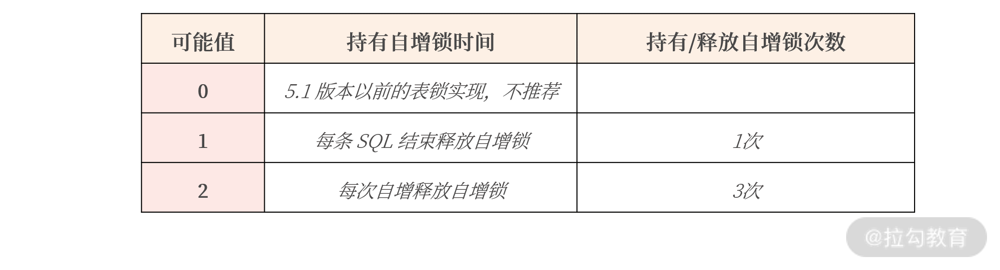
从表格中你可以看到，一条 SQL 语句插入 3 条记录，参数 innodb_autoinc_lock_mode 设置为 1，自增锁在这一条 SQL 执行完成后才释放。
如果参数 innodb_autoinc_lock_mode 设置为2，自增锁需要持有 3 次，每插入一条记录获取一次自增锁。
- 这样设计好处是： 当前插入不影响其他自增主键的插入，可以获得最大的自增并发插入性能。
- 缺点是： 一条 SQL 插入的多条记录并不是连续的，如结果可能是 1、3、5 这样单调递增但非连续的情况。
所以，如果你想获得自增值的最大并发性能，把参数 innodb_autoinc_lock_mode 设置为2。
虽然，我们可以调整参数 innodb_autoinc_lock_mode获得自增的最大性能，但是由于其还存在上述 5 个问题。因此，在互联网海量并发架构实战中，我更推荐 UUID 做主键或业务自定义生成主键。
UUID主键设计
UUID（Universally Unique Identifier）代表全局唯一标识 ID。显然，由于全局唯一性，你可以把它用来作为数据库的主键。
MySQL 数据库遵循 DRFC 4122 命名空间版本定义的 Version 1规范，可以通过函数 UUID自动生成36字节字符。如：
mysql> SELECT UUID();
+--------------------------------------+
| UUID() |
+--------------------------------------+
| e0ea12d4-6473-11eb-943c-00155dbaa39d |
+--------------------------------------+
根据 Version 1的规范，MySQL中的 UUID 由以下几个部分组成：
UUID = 时间低（4字节）- 时间中高+版本（4字节）- 时钟序列 - MAC地址
前 8 个字节中，60 位用于存储时间，4 位用于 UUID 的版本号，其中时间是从 1582-10-15 00：00：00.00 到现在的100ns 的计数。
60 位的时间存储中，其存储分为：
- 时间低位（time-low），占用 12 位；
- 时间中位（time-mid），占用 2 字节，16 位；
- 时间高位（time-high），占用 4 字节，32 位；
需要特别注意的是，在存储时间时，UUID 是根据时间位逆序存储， 也就是低时间低位存放在最前面，高时间位在最后，即 UUID 的前 4 个字节会随着时间的变化而不断“随机”变化，并非单调递增。而非随机值在插入时会产生离散 IO，从而产生性能瓶颈。这也是 UUID 对比自增值最大的弊端。
为了解决这个问题，MySQL 8.0 推出了函数 UUID_TO_BIN，它可以把 UUID 字符串：
- 通过参数将时间高位放在最前，解决了 UUID 插入时乱序问题；
- 去掉了无用的字符串"-"，精简存储空间；
- 将字符串其转换为二进制值存储，空间最终从之前的 36 个字节缩短为了 16 字节。
下面我们将之前的 UUID 字符串 e0ea12d4-6473-11eb-943c-00155dbaa39d 通过函数 UUID_TO_BIN 进行转换，得到二进制值如下所示：
SELECT UUID_TO_BIN('e0ea12d4-6473-11eb-943c-00155dbaa39d',TRUE) as UUID_BIN;
+------------------------------------+
| UUID_BIN |
+------------------------------------+
| 0x11EB6473E0EA12D4943C00155DBAA39D |
+------------------------------------+
1 row in set (0.00 sec)
除此之外，MySQL 8.0 也提供了函数 BIN_TO_UUID，支持将二进制值反转为 UUID 字符串。
当然了，MySQL 8.0版本之前没有函数 UUID_TO_BIN/BIN_TO_UUID，但是你还是可以通过用户义函数（UDF）的方式解决，如创建下面的函数：
CREATE FUNCTION MY_UUID_TO_BIN(_uuid BINARY(36))
RETURNS BINARY(16)
LANGUAGE SQL DETERMINISTIC CONTAINS SQL SQL SECURITY INVOKER
RETURN
UNHEX(CONCAT(
SUBSTR(_uuid, 15, 4),
SUBSTR(_uuid, 10, 4),
SUBSTR(_uuid, 1, 8),
SUBSTR(_uuid, 20, 4),
SUBSTR(_uuid, 25) ));
CREATE FUNCTION MY_BIN_TO_UUID(_bin BINARY(16))
RETURNS CHAR(36)
LANGUAGE SQL DETERMINISTIC CONTAINS SQL SQL SECURITY INVOKER
RETURN
LCASE(CONCAT_WS('-',
HEX(SUBSTR(_bin, 5, 4)),
HEX(SUBSTR(_bin, 3, 2)),
HEX(SUBSTR(_bin, 1, 2)),
HEX(SUBSTR(_bin, 9, 2)),
HEX(SUBSTR(_bin, 11)) ));
因此，对于 04 讲创建的表 User，可以将其主键修改为 BINARY(16)，用于存储排序后的 16 字节的 UUID 值。其表结构修如下：
CREATE TABLE User (
id BINARY(16) NOT NULL,
name VARCHAR(255) NOT NULL,
sex CHAR(1) NOT NULL,
password VARCHAR(1024) NOT NULL,
money INT NOT NULL DEFAULT 0,
register_date DATETIME(6) NOT NULL DEFAULT CURRENT_TIMESTAMP(6),
last_modify_date DATETIME(6) NOT NULL DEFAULT CURRENT_TIMESTAMP(6) ON UPDATE CURRENT_TIMESTAMP(6),
uuid CHAR(36) AS (BIN_TO_UUID(id)),
CONSTRAINT chk_sex CHECK (sex = 'M' OR sex = 'F'),
PRIMARY KEY(id)
);
现在，你可以在客户端通过以下 SQL 命令插入数据，如：
INSERT INTO User VALUES (UUID_TO_BIN(UUID(),TRUE),......);
当然，很多同学也担心 UUID 的性能和存储占用的空间问题，这里我也做了相关的插入性能测试，结果如下表所示：
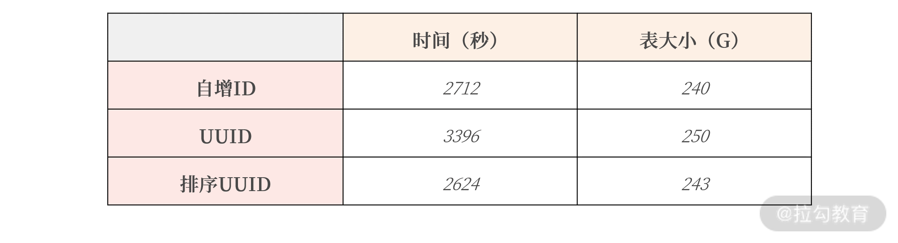
可以看到，MySQL 8.0 提供的排序 UUID 性能最好，甚至比自增ID还要好。此外，由于UUID_TO_BIN转换为的结果是16 字节，仅比自增 ID 增加 8 个字节，最后存储占用的空间也仅比自增大了 3G。
而且由于 UUID 能保证全局唯一，因此使用 UUID 的收益远远大于自增ID。可能你已经习惯了用自增做主键，但在海量并发的互联网业务场景下，更推荐 UUID 这样的全局唯一值做主键。
比如，我特别推荐游戏行业的用户表结构设计，使用 UUID 作为主键，而不是用自增 ID。因为当发生合服操作时，由于 UUID 全局唯一，用户相关数据可直接进行数据的合并，而自增 ID 却需要额外程序整合两个服务器 ID 相同的数据，这个工作是相当巨大且容易出错的。
业务自定义生成主键
当然了，UUID 虽好，但是在分布式数据库场景下，主键还需要加入一些额外的信息，这样才能保证后续二级索引的查询效率（具体这部分内容将在后面的分布式章节中进行介绍）。现在你只需要牢记：分布式数据库架构，仅用 UUID 做主键依然是不够的。 所以，对于分布式架构的核心业务表，我推荐类似如下的设计，比如：
PK = 时间字段 + 随机码（可选） + 业务信息1 + 业务信息2 ......
电商业务中，订单表是其最为核心的表之一，你可以先打开淘宝 App，查询下自己的订单号，可以查到类似如下的订单信息：
上图是我自己的淘宝订单信息（第一个订单的订单号为1550672064762308113）。
订单号显然是订单表的主键，但如果你以为订单号是自增整型，那就大错特错了。因为如果你仔细观察的话，可以发现图中所有订单号的后 6 位都是相同的，都为308113：
1550672064762308113
1481195847180308113
1431156171142308113
1431146631521308113
所以，我认为淘宝订单号的最后 6 位是用户 ID 相关信息，前 14 位是时间相关字段，这样能保证插入的自增性，又能同时保留业务的相关信息作为后期的分布式查询。
消除冗余
消除冗余也是范式的要求，解决部分依赖和传递依赖，本质就是尽可能减少冗余数据。
所以，在进行表结构设计时，数据只需存放在一个地方，其他表要使用，通过主键关联存储即可。比如订单表中需要存放订单对应的用户信息，则保存用户 ID 即可：
CREATE TABLE Orders (
order_id VARCHRA(20),
user_id BINARY(16),
order_date datetime,
last_modify_date datetime
...
PRIMARY KEY(order_id),
KEY(user_id,order_date)
KEY(order_date),
KEY(last_modify_date)
)
当然了，无论是自增主键设计、UUID主键设计、业务自定义生成主键、还是消除冗余，本质上都是遵循了范式准则。但是在一些其他业务场景下，也存在反范式设计的情况。
反范式设计
通常我们会在 OLAP 数据分析场景中使用反范式设计，但随着 JSON 数据类型的普及，MySQL 在线业务也可以进行反范式的设计。
在 04 讲中我讲了表 UserTag，就是通过 JSON 数据类型进行了反范式的设计，如果通过范式设计，则表 UserTag 应该设计为：
CREATE TABLE UserTag (
userId BIGINT NOT NULL,
userTag INT NOT NULL,
PRIMARY KEY(userId,userTag)
);
SELECT * FROM UserTag;
+--------+---------+
| userId | userTag |
+--------+---------+
| 1 | 2 |
| 1 | 6 |
| 1 | 8 |
| 1 | 10 |
| 2 | 3 |
| 2 | 10 |
| 2 | 12 |
+--------+---------+
你对比后可以发现，范式设计并没有使用 JSON 数据类型来得更为有效，使用 JSON 数据类型，userID 只需保存一次，从一定程度上减少了数据的冗余：
+--------+---------------+
| userId | userTags |
+--------+---------------+
| 1 | [2, 6, 8, 10] |
| 2 | [3, 10, 12] |
+--------+---------------
总结
总的来说，范式是偏数据库理论范畴的表结构设计准则，在实际的工程实践上没有必要严格遵循三范式要求，在 MySQL 海量并发的工程实践上，表结构设计应遵循这样几个规范：
- 每张表一定要有一个主键；
- 自增主键只推荐用在非核心业务表，甚至应避免使用；
- 核心业务表推荐使用 UUID 或业务自定义主键；
- 一份数据应尽可能保留一份，通过主键关联进行查询，避免冗余数据；
- 在一些场景下，可以通过 JSON 数据类型进行反范式设计，提升存储效率；
06 表压缩：不仅仅是空间压缩
前面几讲，我们从最早的各种列类型的选择，过渡到表结构的设计，相信学完前面几讲，你已经能够较好地设计出各种业务表，比如用户表、订单表。既然我们已经掌握了表的逻辑设计，那这一讲就继续学习不同业务表的物理存储设计。
据我观察，很多同学不会在表结构设计之初就考虑存储的设计，只有当业务发展到一定规模才会意识到问题的严重性。而物理存储主要是考虑是否要启用表的压缩功能，默认情况下，所有表都是非压缩的。
但一些同学一听到压缩，总会下意识地认为压缩会导致 MySQL 数据库的性能下降。这个观点说对也不对，需要根据不同场景进行区分。 这一讲，我们就来看一看表的物理存储设计：不同场景下，表压缩功能的使用。
表压缩
数据库中的表是由一行行记录（rows）所组成，每行记录被存储在一个页中，在 MySQL 中，一个页的大小默认为 16K，一个个页又组成了每张表的表空间。
通常我们认为，如果一个页中存放的记录数越多，数据库的性能越高。这是因为数据库表空间中的页是存放在磁盘上，MySQL 数据库先要将磁盘中的页读取到内存缓冲池，然后以页为单位来读取和管理记录。
一个页中存放的记录越多，内存中能存放的记录数也就越多，那么存取效率也就越高。若想将一个页中存放的记录数变多，可以启用压缩功能。此外，启用压缩后，存储空间占用也变小了，同样单位的存储能存放的数据也变多了。
若要启用压缩技术，数据库可以根据记录、页、表空间进行压缩，不过在实际工程中，我们普遍使用页压缩技术，这是为什么呢？
- 压缩每条记录： 因为每次读写都要压缩和解压，过于依赖 CPU 的计算能力，性能会明显下降；另外，因为单条记录大小不会特别大，一般小于 1K，压缩效率也并不会特别好。
- 压缩表空间： 压缩效率非常不错，但要求表空间文件静态不增长，这对基于磁盘的关系型数据库来说，很难实现。
而基于页的压缩，既能提升压缩效率，又能在性能之间取得一种平衡。
可能很多同学认为，启用表的页压缩功能后，性能有明显损失，因为压缩需要有额外的开销。的确，压缩需要消耗额外的 CPU 指令，但是压缩并不意味着性能下降，或许能额外提升性能，因为大部分的数据库业务系统，CPU 的处理能力是剩余的，而 I/O 负载才是数据库主要瓶颈。
借助页压缩技术，MySQL 可以把一个 16K 的页压缩为 8K，甚至 4K，这样在从磁盘写入或读取时，就能将 I/O 请求大小减半，甚至更小，从而提升数据库的整体性能。
当然，压缩是一种平衡，并非一定能提升数据库的性能。这种性能“平衡”取决于解压缩开销带来的收益和解压缩带来的开销之间的一种权衡。但无论如何，压缩都可以有效整理数据原本的容量，对存储空间来说，压缩的收益是巨大的。
MySQL 压缩表设计
COMPRESS 页压缩
COMPRESS 页压缩是 MySQL 5.7 版本之前提供的页压缩功能。只要在创建表时指定ROW_FORMAT=COMPRESS，并设置通过选项 KEY_BLOCK_SIZE 设置压缩的比例。
需要牢记的是， 虽然是通过选项 ROW_FORMAT 启用压缩功能，但这并不是记录级压缩，依然是根据页的维度进行压缩。
下面这是一张日志表，ROW_FROMAT 设置为 COMPRESS，表示启用 COMPRESS 页压缩功能，KEY_BLOCK_SIZE 设置为 8，表示将一个 16K 的页压缩为 8K。
CREATE TABLE Log (
logId BINARY(16) PRIMARY KEY,
......
)
ROW_FORMAT=COMPRESSED
KEY_BLOCK_SIZE=8
COMPRESS 页压缩就是将一个页压缩到指定大小。如 16K 的页压缩到 8K，若一个 16K 的页无法压缩到 8K，则会产生 2 个压缩后的 8K 页，具体如下图所示：
COMPRESS 页压缩
总的来说，COMPRESS 页压缩，适合用于一些对性能不敏感的业务表，例如日志表、监控表、告警表等，压缩比例通常能达到 50% 左右。
虽然 COMPRESS 压缩可以有效减小存储空间，但 COMPRESS 页压缩的实现对性能的开销是巨大的，性能会有明显退化。主要原因是一个压缩页在内存缓冲池中，存在压缩和解压两个页。

1 个 COMPRESS 压缩页在内存中存在 2 个页版本
如图所示，Page1 和 Page2 都是压缩页 8K，但是在内存中还有其解压后的 16K 页。这样设计的原因是 8K 的页用于后续页的更新，16K 的页用于读取，这样读取就不用每次做解压操作了。
很明显，这样的实现会增加对内存的开销，会导致缓存池能存放的有效数据变少，MySQL 数据库的性能自然出现明显退化。
为了 解决压缩性能下降的问题，从MySQL 5.7 版本开始推出了 TPC 压缩功能。
TPC 压缩
TPC（Transparent Page Compression）是 5.7 版本推出的一种新的页压缩功能，其利用文件系统的空洞（Punch Hole）特性进行压缩。可以使用下面的命令创建 TPC 压缩表：
CREATE TABLE Transaction （
transactionId BINARY(16) PRIMARY KEY,
.....
)
COMPRESSION=ZLIB | LZ4 | NONE;
要使用 TPC 压缩，首先要确认当前的操作系统是否支持空洞特性。通常来说，当前常见的 Linux 操作系统都已支持空洞特性。
由于空洞是文件系统的一个特性，利用空洞压缩只能压缩到文件系统的最小单位 4K，且其页压缩是 4K 对齐的。比如一个 16K 的页，压缩后为 7K，则实际占用空间 8K；压缩后为 3K，则实际占用空间是 4K；若压缩后是 13K，则占用空间依然为 16K。
TPC 压缩的具体实现如下所示：

TPC 页压缩
上图可以看到，一个 16K 的页压缩后是 8K，接着数据库会对这 16K 的页剩余的 8K 填充0x00，这样当这个 16K 的页写入到磁盘时，利用文件系统空洞特性，则实际将仅占用 8K 的物理存储空间。
空洞压缩的另一个好处是，它对数据库性能的侵入几乎是无影响的（小于 20%），甚至可能还能有性能的提升。
这是因为不同于 COMPRESS 页压缩，TPC 压缩在内存中只有一个 16K 的解压缩后的页，对于缓冲池没有额外的存储开销。
另一方面，所有页的读写操作都和非压缩页一样，没有开销，只有当这个页需要刷新到磁盘时，才会触发页压缩功能一次。但由于一个 16K 的页被压缩为了 8K 或 4K，其实写入性能会得到一定的提升。
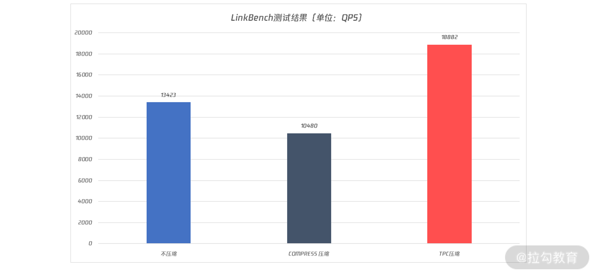
官方 TPC 测试对比
上图是 MySQL 官方的 LinkBench 测试结果，可以看到，无压缩的测试结果为 13,432 QPS，传统的 COMPRESS 页压缩性能下降为 10,480 QPS，差不多30%的性能下降。基于TPC压缩的测试结果为 18,882，在未压缩的基础上还能有额外 40% 的性能提升。
表压缩在业务上的使用
总的来说，对一些对性能不敏感的业务表，例如日志表、监控表、告警表等，它们只对存储空间有要求，因此可以使用 COMPRESS 页压缩功能。
在一些较为核心的流水业务表上，我更推荐使用 TPC压缩。因为流水信息是一种非常核心的数据存储业务，通常伴随核心业务。如一笔电商交易，用户扣钱、下单、记流水，这就是一个核心业务的微模型。
所以，用户对流水表有性能需求。此外，流水又非常大，启用压缩功能可更为有效地存储数据。
若对压缩产生的性能抖动有所担心，我的建议：由于流水表通常是按月或天进行存储，对当前正在使用的流水表不要启用 TPC 功能，对已经成为历史的流水表启用 TPC 压缩功能，如下所示：

流水表的设计
需要特别注意的是： 通过命令 ALTER TABLE xxx COMPRESSION = ZLIB 可以启用 TPC 页压缩功能，但是这只对后续新增的数据会进行压缩，对于原有的数据则不进行压缩。所以上述ALTER TABLE 操作只是修改元数据，瞬间就能完成。
若想要对整个表进行压缩，需要执行 OPTIMIZE TABLE 命令：
ALTER TABLE Transaction202102 COMPRESSION=ZLIB；
OPTIMIZE TABLE Transaction202102;
总结
在进行表结构设计时，除了进行列的选择外，还需要考虑存储的设计，特别是对于表的压缩功能的设计，总结来说：
- MySQL 中的压缩都是基于页的压缩；
- COMPRESS 页压缩适合用于性能要求不高的业务表，如日志、监控、告警表等；
- COMPRESS 页压缩内存缓冲池存在压缩和解压的两个页，会严重影响性能；
- 对存储有压缩需求，又希望性能不要有明显退化，推荐使用 TPC 压缩；
- 通过 ALTER TABLE 启用 TPC 压缩后，还需要执行命令 OPTIMIZE TABLE 才能立即完成空间的压缩。
07 表的访问设计：你该选择 SQL 还是 NoSQL？
到目前为止，我已经带你学习了表结构的字段类型选择和表的物理存储设计，这一讲我们将继续学习表的访问选型。这样一来，字段类型选择 + 物理存储设计 + 表的访问设计，就完成了表结构设计的所有内容。
前面 6 讲，我演示的都是通过 SQL 的方式对表进行访问，但从 MySQL 5.6 版本开始，就支持除 SQL 外的其他访问方式，比如 NoSQL，甚至可以把 MySQL 打造成一个百万级并发访问的 KV 数据库或文档数据库。
今天这一讲，我就带你从全局角度看 MySQL 数据库中表的访问方式，以及它们各自的使用场景，希望你能有所收获。
MySQL 中表的访问方式
SQL 是访问数据库的一个通用接口，虽然数据库有很多种，但数据库中的 SQL 却是类似的，因为 SQL 有标准存在，如 SQL92、SQL2003 等。
虽然有些数据库会扩展支持 SQL 标准外的语法，但 90% 的语法是兼容的，所以，不同数据库在 SQL 层面的学习成本是比较低的。也因为上述原因，从一种关系型数据库迁移到另一种关系型数据库，开发的迁移成本并不高。比如去 IOE，将 Oracle 数据库迁移到 MySQL 数据库，通常 SQL 语法并不是难题。
MySQL 8.0 版本前，有不少同学会吐槽 MySQL 对于 SQL 标准的支持的程度。但是在当前 8.0 版本下，MySQL 对于 SQL 语法的支持度已经越来越好，甚至在某些方面超过了商业数据库 Oracle。
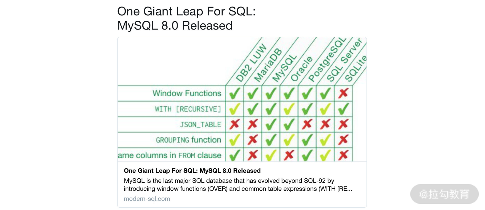
上图是专家评估的不同数据库对 SQL 的支持程度，可以看到，MySQL 8.0 在这一块非常完善，特别是对 JSON_TABLE 的支持功能。
通常来说，MySQL 数据库用于 OLTP 的在线系统中，不用特别复杂的 SQL 语法支持。但 MySQL 8.0 完备的 SQL 支持意味着 MySQL 未来将逐渐补齐在 OLAP 业务方面的短板，让我们一起拭目以待。
当然，通过 SQL 访问表，你肯定并不陌生，这也不是本讲的重点。接下来我重点带你了解 MySQL 怎么通过 NoSQL 的方式访问表中的数据。
我们先来看看当前 MySQL 版本中支持的不同表的访问方式：

MySQL 三种表的访问方式
可以看到，除了标准的 SQL 访问，MySQL 5.6 版本开始还支持通过 Memcached 通信协议访问表中的数据，这时 MySQL 可以作为一个 KV 数据库使用。此外，MySQL 5.7 版本开始还支持通过新的 MySQL X 通信协议访问表中的数据，这时 MySQL 可以作为一个文档数据库使用。
但无论哪种 NoSQL 的访问方式，其访问的数据都是以表的方式进行存储。SQL 和 NoSQL 之间通过某种映射关系进行绑定。
对比传统的 NoSQL 数据库（比如 Memcached、MongoDB），MySQL 这样的访问更具有灵活性，在通过简单的 NoSQL 接口保障性能的前提下，又可以通过 SQL 的方式丰富对于数据的查询。另外，MySQL 提供的成熟事务特性、高可用解决方案，又能弥补 NoSQL 数据库在这方面的不足。
那接下来，我们先来看一看基于 Memcache 协议的 NoSQL 访问方式。
通过 Memcached 协议访问表
MySQL 5.6 版本开始支持通过插件 Memcached Plugin，以 KV 方式访问表，这时可以将 MySQL视作一个 Memcached KV 数据库。
对于数据的访问不再是通过 SQL 接口，而是通过 KV 数据库中常见的 get、set、incr 等请求。
但为什么要通过 KV 的方式访问数据呢？因为有些业务对于数据库的访问本质上都是一个 KV 操作。比如用户登录系统，大多是用于信息确认，这时其 SQL 大多都是通过主键或唯一索引进行数据的查询，如：
SELECT * FROM User WHERE PK = ?
若在海量并发访问的系统中，通过 SQL 访问这些表，由于通过主键索引进行访问，速度很快。但 SQL 解析（哪怕是软解析）却要耗费不少时间，这时单数据库实例性能会受到一定的限制。
基于 Memcached 的 KV 访问，可以绕过 SQL 解析，通过映射关系，直接访问存储在 InnoDB 引擎中的数据，这样数据库的整体性能会在不花费额外成本的前提下得到极大的提升。
那么要启用 Memcached 协议访问 MySQL 需要做两件事情：
- 开启 Memcached 插件；
- 配置表与 KV 的映射关系。
具体操作如下所示：
-- 安装映射表
mysql> source MYSQL_HOME/share/innodb_memcached_config.sql
-- 安装插件，默认会启动11211端口
mysql> INSTALL PLUGIN daemon_memcached soname "libmemcached.so";
执行完上述操作后，会新增一个库 innodb_memcache，里面的表 containers 就是需要配置的KV映射表。如果业务常见的主键查询 SQL 如下，其中列 user_id 是主键：
SELECT user_id,cellphone,last_login
FROM test.User
WHERE user_id = ？
那么我们可以在表 Containers 中插入一条记录：
INSERT INTO containers
VALUES ('User','test','user_id','user_id|cellphone|last_login','0','0','0','PRIAMRY')
上面的映射关系表示通过 Memcached 的 KV 方式访问，其本质是通过 PRIAMRY 索引访问 key 值，key 就是 user_id，value 值返回的是由列 user_id、cellphone、last_login 组合而成，分隔符为"|"的字符串。
最后，通过 SQL 和 KV 的对比性能测试，可以发现通过 KV 的方式访问，性能要好非常多，在我的测试服务器上结果如下所示：

从测试结果可以看到，基于 Memcached 的 KV 访问方式比传统的 SQL 方式要快54.33%，而且CPU 的开销反而还要低20%。
当然了，上述操作只是将表 User 作为 KV 访问，如果想将其他表通过 KV 的方式访问，可以继续在表 Containers 中进行配置。但是在使用时，务必先通过 GET 命令指定要访问的表：
# Python伪代码
mc = Client('127.0.0.1:11211')
mc.get('@@User') # 读取映射表User
mc.get('key1')
mc.get('@@sbtest1') # 读取映射表sbtest1
mc.set('sb1_key1','aa|bbb|ccc')
......
另一种使用 Memcached Plugin 的场景是原先使用原生 Memcached KV 数据库的用户。这些用户可以考虑将 Memcached 数据库迁移到 MySQL 。这样的好处是：
- 通过 MySQL 进行访问的性能比原生 Memcached 好，数据库并发优化做得更好；
- 存储可以持久化，支持事务，数据一致性和安全性更好；
- 利用 MySQL 复制技术，可以弥补原生 Memcached 不支持数据复制的短板；
通过 X Protocol 访问表
MySQL 5.7 版本开始原生支持 JSON 二进制数据类型，同时也提供将表格映射为一个 JSON 文档。同时，MySQL 也提供了 X Protocol 这样的 NoSQL 访问方式，所以，现在我们 MySQL 打造成一个SQL & NoSQL的文档数据库。
对比 MongoDB 文档数据库，将 MySQL 打造为文档数据库与 MongoDB 的对比在于：
可以看到，除了 MySQL 目前还无法支持数据分片功能外，其他方面 MySQL 的优势会更大一些，特别是 MySQL 是通过二维表格存储 JSON 数据，从而实现文档数据库功能。这样可以通过 SQL 进行很多复杂维度的查询，特别是结合 MySQL 8.0 的 CTE（Common Table Expression）、窗口函数（Window Function）等功能，而这在 MongoDB 中是无法原生实现的。
另外，和 Memcached Plugin 不同的是，MySQL 默认会自动启用 X Plugin 插件，接着就可以通过新的 X Protocol 协议访问 MySQL 中的数据，默认端口 33060，你可以通过下面命令查看有关 X Plugin 的配置：
mysql> SHOW VARIABLES LIEK '%mysqlx%';
+-----------------------------------+--------------------+
| Variable_name | Value |
+-----------------------------------+--------------------+
| mysqlx_bind_address | * |
| mysqlx_compression_algorithms |
DEFLATE_STREAM,LZ4_MESSAGE,ZSTD_STREAM |
| mysqlx_connect_timeout | 30 |
| mysqlx_document_id_unique_prefix | 0 |
| mysqlx_enable_hello_notice | ON |
| mysqlx_idle_worker_thread_timeout | 60 |
| mysqlx_interactive_timeout | 28800 |
| mysqlx_max_allowed_packet | 67108864 |
| mysqlx_max_connections | 100 |
| mysqlx_min_worker_threads | 2 |
| mysqlx_port | 33060 |
| mysqlx_port_open_timeout | 0 |
| mysqlx_read_timeout | 30 |
| mysqlx_socket | /tmp/mysqlx.sock |
......
要通过 X Protocol 管理 MySQL 需要通过新的 MySQL Shell 命令，默认并不安装，需要单独安装。下载地址：https://dev.mysql.com/downloads/shell/。安装后就可以通过命令 mysqlsh 通过新的 X Protocol 访问 MySQL 数据库：
root@MBP-Windows:# mysqlsh root@localhost/test
X Protocol 协议支持通过 JS、Python、SQL 的方式管理和访问 MySQL，具体操作你可以参见官方文档。

开发同学若要通过 X Protocol 协议管理文档数据，也需要下载新的 MySQL Connector，并引入新的 X 驱动库，如 Python 驱动：
import mysqlx
# Connect to server on localhost
session = mysqlx.get_session({
'host': 'localhost',
'port': 33060
})
schema = session.get_schema('test')
# Use the collection 'my_collection'
collection = schema.get_collection('my_collection')
# Specify which document to find with Collection.find()
result = collection.find('name like :param').bind('param', 'S%').limit(1).execute()
# Print document
docs = result.fetch_all()
print('Name: {0}'.format(docs[0]['name']))
session.close()
总结
这一讲我带你了解了通过 SQL、Memcache 协议、X Protocol 访问 MySQL 中的表，即我们可以将 MySQL 打造成一个关系型数据库、KV 数据库、文档数据库，但底层都是通过表格的方式进行数据的存储，并且数据都存储在 InnoDB 引擎中。
还在使用 Memcached、MongoDB 数据库的同学可以考虑将数据迁移到 MySQL，这样能在兼容原有业务的前提下，使用到 InnoDB 存储引擎的高并发、事务安全、数据复制等高级功能。
或许有同学会问为什么 KV 数据库、文档数据库不单独使用额外的数据库呢？这是因为在企业的数据中心部门，会要求尽可能的收敛技术栈。这样对后续技术架构的稳定性，人员培养，长远来看，会有更大的收益。
08 索引：排序的艺术
在模块一中，我们学习了怎么根据合适的类型正确地创建一张表，但创建的表不能立刻用在真正的业务系统上。因为表结构设计只是设计数据库最初的环节之一，我们还缺少数据库设计中最为重要的一个环节——索引设计，只有正确设计索引，业务才能达到上线的初步标准。
所以模块二我会讲索引的设计、业务应用与调优等案例。今天我们先来学习关系型数据库最核心的概念——索引，对索引做一个初步的概述，让你对数据库中的索引有一个体系的认知，并用好 B+ 树索引。
索引是什么？
相信你在面试时，通常会被问到“什么是索引？”而你一定要能脱口而出：索引是提升查询速度的一种数据结构。
索引之所以能提升查询速度，在于它在插入时对数据进行了排序（显而易见，它的缺点是影响插入或者更新的性能）。
所以，索引是一门排序的艺术，有效地设计并创建索引，会提升数据库系统的整体性能。在目前的 MySQL 8.0 版本中，InnoDB 存储引擎支持的索引有 B+ 树索引、全文索引、R 树索引。这一讲我们就先关注使用最为广泛的 B+ 树索引。
B+树索引结构
B+ 树索引是数据库系统中最为常见的一种索引数据结构，几乎所有的关系型数据库都支持它。
那为什么关系型数据库都热衷支持 B+树索引呢？因为它是目前为止排序最有效率的数据结构。像二叉树，哈希索引、红黑树、SkipList，在海量数据基于磁盘存储效率方面远不如 B+ 树索引高效。
所以，上述的数据结构一般仅用于内存对象，基于磁盘的数据排序与存储，最有效的依然是 B+ 树索引。
B+树索引的特点是： 基于磁盘的平衡树，但树非常矮，通常为 3~4 层，能存放千万到上亿的排序数据。树矮意味着访问效率高，从千万或上亿数据里查询一条数据，只用 3、4 次 I/O。
又因为现在的固态硬盘每秒能执行至少 10000 次 I/O ，所以查询一条数据，哪怕全部在磁盘上，也只需要 0.003 ~ 0.004 秒。另外，因为 B+ 树矮，在做排序时，也只需要比较 3~4 次就能定位数据需要插入的位置，排序效率非常不错。
B+ 树索引由根节点（root node）、中间节点（non leaf node）、叶子节点（leaf node）组成，其中叶子节点存放所有排序后的数据。当然也存在一种比较特殊的情况，比如高度为 1 的B+ 树索引：
上图中，第一个列就是 B+ 树索引排序的列，你可以理解它是表 User 中的列 id，类型为 8 字节的 BIGINT，所以列 userId 就是索引键（key），类似下表：
CREATE TABLE User (
id BIGINT AUTO_INCREMENT PRIMARY KEY,
name VARCHAR(128) NOT NULL,
sex CHAR(6) NOT NULL,
registerDate DATETIME NOT NULL,
...
)
所有 B+ 树都是从高度为 1 的树开始，然后根据数据的插入，慢慢增加树的高度。你要牢记：索引是对记录进行排序， 高度为 1 的 B+ 树索引中，存放的记录都已经排序好了，若要在一个叶子节点内再进行查询，只进行二叉查找，就能快速定位数据。
可随着插入 B+ 树索引的记录变多，1个页（16K）无法存放这么多数据，所以会发生 B+ 树的分裂，B+ 树的高度变为 2，当 B+ 树的高度大于等于 2 时，根节点和中间节点存放的是索引键对，由（索引键、指针）组成。
索引键就是排序的列，而指针是指向下一层的地址，在 MySQL 的 InnoDB 存储引擎中占用 6 个字节。下图显示了 B+ 树高度为 2 时，B+ 树索引的样子：

可以看到，在上面的B+树索引中，若要查询索引键值为 5 的记录，则首先查找根节点，查到键值对（20，地址），这表示小于 20 的记录在地址指向的下一层叶子节点中。接着根据下一层地址就可以找到最左边的叶子节点，在叶子节点中根据二叉查找就能找到索引键值为 5 的记录。
那一个高度为 2 的 B+ 树索引，理论上最多能存放多少行记录呢?
在 MySQL InnoDB 存储引擎中，一个页的大小为 16K，在上面的表 User 中，键值 userId 是BIGINT 类型，则：
根节点能最多存放以下多个键值对 = 16K / 键值对大小(8+6) ≈ 1100
再假设表 User 中，每条记录的大小为 500 字节，则：
叶子节点能存放的最多记录为 = 16K / 每条记录大小 ≈ 32
综上所述，树高度为 2 的 B+ 树索引，最多能存放的记录数为：
总记录数 = 1100 * 32 = 35,200
也就是说，35200 条记录排序后，生成的 B+ 树索引高度为 2。在 35200 条记录中根据索引键查询一条记录只需要查询 2 个页，一个根叶，一个叶子节点，就能定位到记录所在的页。
高度为 3 的 B+ 树索引本质上与高度 2 的索引一致，如下图所示，不再赘述：
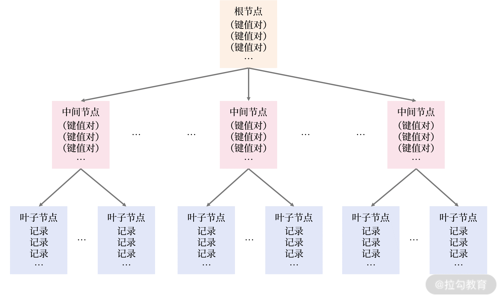
同理，树高度为 3 的 B+ 树索引，最多能存放的记录数为：
总记录数 = 1100（根节点） * 1100（中间节点） * 32 = 38,720,000
讲到这儿，你会发现，高度为 3 的 B+ 树索引竟然能存放 3800W 条记录。在 3800W 条记录中定位一条记录，只需要查询 3 个页。那么 B+ 树索引的优势是否逐步体现出来了呢？
不过，在真实环境中，每个页其实利用率并没有这么高，还会存在一些碎片的情况，我们假设每个页的使用率为60%，则：

表格显示了 B+ 树的威力，即在 50 多亿的数据中，根据索引键值查询记录，只需要 4 次 I/O，大概仅需 0.004 秒。如果这些查询的页已经被缓存在内存缓冲池中，查询性能会更快。
在数据库中，上述的索引查询请求对应的 SQL 语句为：
SELECT * FROM User WHERE id = ?
用户可以通过命令 EXPLAIN 查看是否使用索引：
mysql> EXPLAIN SELECT * FROM User WHERE id = 1\G
********************** 1. row **********************
id: 1
select_type: SIMPLE
table: User
partitions: NULL
type: const
possible_keys: PRIMARY
key: PRIMARY
key_len: 8
ref: const
rows: 1
filtered: 100.00
Extra: NULL
在输出的 EXPLIAN 结果中，可以看到列 key 显示 PRIMARY，这表示根据主键索引进行查询。若没有根据索引进行查询，如根据性别进行查询，则会显示类似如下内容：
mysql> EXPLAIN SELECT * FROM User WHERE sex = 'male'\G
********************** 1. row **********************
id: 1
select_type: SIMPLE
table: User
partitions: NULL
type: ALL
possible_keys: NULL
key: NULL
key_len: NULL
ref: NULL
rows: 986400
filtered: 50.00
Extra: Using where
讲到这儿，你应该了解了 B+ 树索引的组织形式，以及为什么在上亿的数据中可以通过B+树索引快速定位查询的记录。但 B+ 树的查询高效是要付出代价的，就是我们前面说的插入性能问题，接下去咱们就来讨论一下。
优化 B+ 树索引的插入性能
B+ 树在插入时就对要对数据进行排序，但排序的开销其实并没有你想象得那么大，因为排序是 CPU 操作（当前一个时钟周期 CPU 能处理上亿指令）。
真正的开销在于 B+ 树索引的维护，保证数据排序，这里存在两种不同数据类型的插入情况。
- 数据顺序（或逆序）插入： B+ 树索引的维护代价非常小，叶子节点都是从左往右进行插入，比较典型的是自增 ID 的插入、时间的插入（若在自增 ID 上创建索引，时间列上创建索引，则 B+ 树插入通常是比较快的）。
- 数据无序插入： B+ 树为了维护排序，需要对页进行分裂、旋转等开销较大的操作，另外，即便对于固态硬盘，随机写的性能也不如顺序写，所以磁盘性能也会收到较大影响。比较典型的是用户昵称，每个用户注册时，昵称是随意取的，若在昵称上创建索引，插入是无序的，索引维护需要的开销会比较大。
你不可能要求所有插入的数据都是有序的，因为索引的本身就是用于数据的排序，插入数据都已经是排序的，那么你就不需要 B+ 树索引进行数据查询了。
所以对于 B+ 树索引，在 MySQL 数据库设计中，仅要求主键的索引设计为顺序，比如使用自增，或使用函数 UUID_TO_BIN 排序的 UUID，而不用无序值做主键。
我们再回顾 05 讲的自增、UUID、UUID 排序的插入性能对比：

可以看到，UUID 由于是无序值，所以在插入时性能比起顺序值自增 ID 和排序 UUID，性能上差距比较明显。
所以，我再次强调： 在表结构设计时，主键的设计一定要尽可能地使用顺序值，这样才能保证在海量并发业务场景下的性能。
以上就是索引查询和插入的知识，接下来我们就分析怎么在 MySQL 数据库中查看 B+ 树索引。
MySQL 中 B+ 树索引的设计与管理
在 MySQL 数据库中，可以通过查询表 mysql.innodb_index_stats 查看每个索引的大致情况：
SELECT
table_name,index_name,stat_name,
stat_value,stat_description
FROM innodb_index_stats
WHERE table_name = 'orders' and index_name = 'PRIMARY';
+----------+------------+-----------+------------+------------------+
|table_name| index_name | stat_name | stat_value |stat_description |
+----------+-------------------+------------+------------+----------+
| orders | PRIMARY|n_diff_pfx01|5778522 | O_ORDERKEY |
| orders | PRIMARY|n_leaf_pages|48867 | Number of leaf pages |
| orders | PRIMARY|size |49024 | Number of pages in the index|
+--------+--------+------------+------+-----------------------------+
3 rows in set (0.00 sec)
从上面的结果中可以看到，表 orders 中的主键索引，大约有 5778522 条记录，其中叶子节点一共有 48867 个页，索引所有页的数量为 49024。根据上面的介绍，你可以推理出非叶节点的数量为 49024 ~ 48867，等于 157 个页。
另外，我看见网上一些所谓的 MySQL“军规”中写道“一张表的索引不能超过 5 个”。根本没有这样的说法，完全是无稽之谈。
在我看来，如果业务的确需要很多不同维度进行查询，那么就该创建对应多索引，这是没有任何值得商讨的地方。
真正在业务上遇到的问题是： 由于业务开发同学对数据库不熟悉，创建 N 多索引，但实际这些索引从创建之初到现在根本就没有使用过！因为优化器并不会选择这些低效的索引，这些无效索引占用了空间，又影响了插入的性能。
那你怎么知道哪些 B+树索引未被使用过呢？在 MySQL 数据库中，可以通过查询表sys.schema_unused_indexes，查看有哪些索引一直未被使用过，可以被废弃：
SELECT * FROM schema_unused_indexes
WHERE object_schema != 'performance_schema';
+---------------+-------------+--------------+
| object_schema | object_name | index_name |
+---------------+-------------+--------------+
| sbtest | sbtest1 | k_1 |
| sbtest | sbtest2 | k_2 |
| sbtest | sbtest3 | k_3 |
| sbtest | sbtest4 | k_4 |
| tpch | customer | CUSTOMER_FK1 |
| tpch | lineitem | LINEITEM_FK2 |
| tpch | nation | NATION_FK1 |
| tpch | orders | ORDERS_FK1 |
| tpch | partsupp | PARTSUPP_FK1 |
| tpch | supplier | SUPPLIER_FK1 |
+---------------+-------------+--------------+
如果数据库运行时间比较长，而且索引的创建时间也比较久，索引还出现在上述结果中，DBA 就可以考虑删除这些没有用的索引。
而 MySQL 8.0 版本推出了索引不可见（Invisible）功能。在删除废弃索引前，用户可以将索引设置为对优化器不可见，然后观察业务是否有影响。若无，DBA 可以更安心地删除这些索引：
ALTER TABLE t1
ALTER INDEX idx_name INVISIBLE/VISIBLE;
总结
这一讲我对索引做了一个较为初步地概述，学完这一讲，我相信你能非常清晰地知道：
- 索引是加快查询的一种数据结构，其原理是插入时对数据排序，缺点是会影响插入的性能；
- MySQL 当前支持 B+树索引、全文索引、R 树索引；
- B+ 树索引的高度通常为 3~4 层，高度为 4 的 B+ 树能存放 50 亿左右的数据；
- 由于 B+ 树的高度不高，查询效率极高，50 亿的数据也只需要插叙 4 次 I/O；
- MySQL 单表的索引没有个数限制，业务查询有具体需要，创建即可，不要迷信个数限制；
- 可以通过表 sys.schema_unused_indexes 和索引不可见特性，删除无用的索引。
总的来讲，关于索引虽然老生常谈，但是它是所有关系型数据库的核心，我希望你反复阅读本文，真正理解 B+ 树索引的实现。
09 索引组织表：万物皆索引
上一讲，我已经带你了解了 B+ 树索引的基本概念，以及 MySQL 中怎么对 B+ 树索引进行基本的管理。为了让你进一步深入了解 MySQL 的 B+ 树索引的具体使用，这一讲我想和你聊一聊 MySQL InnoDB 存储引擎的索引结构。
InnoDB 存储引擎是 MySQL 数据库中使用最为广泛的引擎，在海量大并发的 OLTP 业务中，InnoDB 必选。它在数据存储方面有一个非常大的特点：索引组织表（Index Organized Table）。
接下来我就带你了解最为核心的概念：索引组织表。希望你学完今天的内容之后能理解 MySQL 是怎么存储数据和索引对象的。
索引组织表
数据存储有堆表和索引组织表两种方式。
堆表中的数据无序存放， 数据的排序完全依赖于索引（Oracle、Microsoft SQL Server、PostgreSQL 早期默认支持的数据存储都是堆表结构）。
从图中你能看到，堆表的组织结构中，数据和索引分开存储。索引是排序后的数据，而堆表中的数据是无序的，索引的叶子节点存放了数据在堆表中的地址，当堆表的数据发生改变，且位置发生了变更，所有索引中的地址都要更新，这非常影响性能，特别是对于 OLTP 业务。
而索引组织表，数据根据主键排序存放在索引中，主键索引也叫聚集索引（Clustered Index）。在索引组织表中，数据即索引，索引即数据。
MySQL InnoDB 存储引擎就是这样的数据组织方式；Oracle、Microsoft SQL Server 后期也推出了支持索引组织表的存储方式。
但是，PostgreSQL 数据库因为只支持堆表存储，不适合 OLTP 的访问特性，虽然它后期对堆表有一定的优化，但本质是通过空间换时间，对海量并发的 OLTP 业务支持依然存在局限性。
回看 08 讲中的 User 表，其就是索引组织表的方式：
表 User 的主键是 id，所以表中的数据根据 id 排序存储，叶子节点存放了表中完整的记录，可以看到表中的数据存放在索引中，即表就是索引，索引就是表。
在了解完 MySQL InnoDB 的主键索引存储方式之后，接下来我们继续了解二级索引。
二级索引
InnoDB 存储引擎的数据是根据主键索引排序存储的，除了主键索引外，其他的索引都称之为二级索引（Secondeary Index）， 或非聚集索引（None Clustered Index）。
二级索引也是一颗 B+ 树索引，但它和主键索引不同的是叶子节点存放的是索引键值、主键值。对于 08 讲创建的表 User，假设在列 name 上还创建了索引 idx_name，该索引就是二级索引：
CREATE TABLE User (
id BIGINT AUTO_INCREMENT,
name VARCHAR(128) NOT NULL,
sex CHAR(6) NOT NULL,
registerDate DATETIME NOT NULL,
...
PRIMARY KEY(id), -- 主键索引
KEY idx_name(name) -- 二级索引
)
如果用户通过列 name 进行查询，比如下面的 SQL：
SELECT * FROM User WHERE name = 'David'，
通过二级索引 idx_name 只能定位主键值，需要额外再通过主键索引进行查询，才能得到最终的结果。这种“二级索引通过主键索引进行再一次查询”的操作叫作“回表”，你可以通过下图理解二级索引的查询：
索引组织表这样的二级索引设计有一个非常大的好处：若记录发生了修改，则其他索引无须进行维护，除非记录的主键发生了修改。
与堆表的索引实现对比着看，你会发现索引组织表在存在大量变更的场景下，性能优势会非常明显，因为大部分情况下都不需要维护其他二级索引。
前面我强调“索引组织表，数据即索引，索引即数据”。那么为了便于理解二级索引，你可以将二级索引按照一张表来进行理解，比如索引 idx_name 可以理解成一张表，如下所示：
CREATE TABLE idx_name (
name VARCHAR(128) NOT NULL,
id BIGINT NOT NULL,
PRIAMRY KEY(name,id)
)
根据 name 进行查询的 SQL 可以理解为拆分成了两个步骤：
SELECT id FROM idx_name WHERE name = ?
SELECT * FROM User WHERE id = _id; -- 回表
当插入数据时，你可以理解为对主键索引表、二级索引表进行了一个事务操作，要么都成功，要么都不成功：
START TRANSATION;
INSERT INTO User VALUES (...) -- 主键索引
INSERT INTO idx_name VALUES (...) -- 二级索引
COMMIT;
当然，对于索引，还可以加入唯一的约束，具有唯一约束的索引称之为唯一索引，也是二级索引。
对于表 User，列 name 应该具有唯一约束，因为通常用户注册通常要求昵称唯一，所以表User 定义更新为：
CREATE TABLE User (
id BIGINT AUTO_INCREMENT,
name VARCHAR(128) NOT NULL,
sex CHAR(6) NOT NULL,
registerDate DATETIME NOT NULL,
...
PRIMARY KEY(id), -- 主键索引
UNIQUE KEY idx_name(name) -- 二级索引
)
那么对于唯一索引又该如何理解为表呢？ 其实我们可以将约束理解成一张表或一个索引，故唯一索引 idx_name 应该理解为：
CREATE TABLE idx_name (
name VARCHAR(128) NOT NULL,
id BIGINT NOT NULL,
PRIAMRY KEY(name,id)
) -- 二级索引
CREATE TABLE check_idx_name (
name VARCHAR(128),
PRIMARY KEY(name)，
) -- 唯一约束
讲到这儿，你应该理解了吧？在索引组织表中，万物皆索引，索引就是数据，数据就是索引。
最后，为了加深你对于索引组织表的理解，我们再来回顾一下堆表的实现。
堆表中的索引都是二级索引，哪怕是主键索引也是二级索引，也就是说它没有聚集索引，每次索引查询都要回表。同时，堆表中的记录全部存放在数据文件中，并且无序存放，这对互联网海量并发的 OLTP 业务来说，堆表的实现的确“过时”了。
以上就是二级索引的内容。
有的同学会提问：感觉二级索引与主键索引并没有太大的差别，所以为了进一步理解二级索引的开销，接下来我们一起学习二级索引的性能评估。
希望学完这部分内容之后，你能明白，为什么通常二级索引会比主键索引慢一些。
二级索引的性能评估
主键在设计时可以选择比较顺序的方式，比如自增整型，自增的 UUID 等，所以主键索引的排序效率和插入性能相对较高。二级索引就不一样了，它可能是比较顺序插入，也可能是完全随机的插入，具体如何呢？来看一下比较接近业务的表 User：
CREATE TABLE User (
id BINARY(16) NOT NULL,
name VARCHAR(255) NOT NULL,
sex CHAR(1) NOT NULL,
password VARCHAR(1024) NOT NULL,
money BIG INT NOT NULL DEFAULT 0,
register_date DATETIME(6) NOT NULL DEFAULT CURRENT_TIMESTAMP(6),
last_modify_date DATETIME(6) NOT NULL DEFAULT CURRENT_TIMESTAMP(6) ON UPDATE CURRENT_TIMESTAMP(6),
uuid CHAR(36) AS (BIN_TO_UUID(id)),
CHECK (sex = 'M' OR sex = 'F'),
CHECK (IS_UUID(UUID)),
PRIMARY KEY(id),
UNIQUE KEY idx_name(name),
KEY idx_register_date(register_date),
KEY idx_last_modify_date(last_modify_date)
);
可以看到，表 User 有三个二级索引 idx_name、idx_register_date、idx_last_modify_date。
通常业务是无法要求用户注册的昵称是顺序的，所以索引 idx_name 的插入是随机的， 性能开销相对较大；另外用户昵称通常可更新，但业务为了性能考虑，可以限制单个用户每天、甚至是每年昵称更新的次数，比如每天更新一次，每年更新三次。
而用户注册时间是比较顺序的，所以索引 idx_register_date 的性能开销相对较小， 另外用户注册时间一旦插入后也不会更新，只是用于标识一个注册时间。
而关于 idx_last_modify_date ， 我在 03 讲就强调过，在真实业务的表结构设计中，你必须对每个核心业务表创建一个列 last_modify_date，标识每条记录的修改时间。
这时索引 idx_last_modify_date 的插入和 idx_register_date 类似，是比较顺序的，但不同的是，索引 idx_last_modify_date 会存在比较频繁的更新操作，比如用户消费导致余额修改、money 字段更新，这会导致二级索引的更新。
由于每个二级索引都包含了主键值，查询通过主键值进行回表，所以在设计表结构时让主键值尽可能的紧凑，为的就是能提升二级索引的性能，我在 05 讲推荐过 16 字节顺序 UUID 的列设计，这是性能和存储的最佳实践。
除此之外，在实际核心业务中，开发同学还有很大可能会设计带有业务属性的主键，但请牢记以下两点设计原则：
- 要比较顺序，对聚集索引性能友好；
- 尽可能紧凑，对二级索引的性能和存储友好；
函数索引
到目前为止，我们的索引都是创建在列上，从 MySQL 5.7 版本开始，MySQL 就开始支持创建函数索引 （即索引键是一个函数表达式）。 函数索引有两大用处：
- 优化业务 SQL 性能；
- 配合虚拟列（Generated Column）。
先来看第一个好处，优化业务 SQL 性能。
我们知道，不是每个开发人员都能比较深入地了解索引的原理，有时他们的表结构设计和编写 SQL 语句会存在“错误”，比如对于上面的表 User，要查询 2021 年1 月注册的用户，有些开发同学会错误地写成如下所示的 SQL：
SELECT * FROM User
WHERE DATE_FORMAT(register_date,'%Y-%m') = '2021-01'
或许开发同学认为在 register_date 创建了索引，所以所有的 SQL 都可以使用该索引。但索引的本质是排序， 索引 idx_register_date 只对 register_date 的数据排序，又没有对DATE_FORMAT(register_date) 排序，因此上述 SQL 无法使用二级索引idx_register_date。
数据库规范要求查询条件中函数写在等式右边，而不能写在左边，就是这个原因。
我们通过命令 EXPLAIN 查看上述 SQL 的执行计划，会更为直观地发现索引 idx_register_date没有被使用到：
EXPLAIN SELECT * FROM User
WHERE DATE_FORMAT(register_date,'%Y-%m') = '2021-01'
*************************** 1. row ***************************
id: 1
select_type: SIMPLE
table: User
partitions: NULL
type: ALL
possible_keys: NULL
key: NULL
key_len: NULL
ref: NULL
rows: 1
filtered: 100.00
Extra: Using where
上述需求正确的 SQL 写法应该是，其中变化在第 2 行，主要将函数 DATE_FORMAT 插接为了一个范围查询：
EXPLAIN SELECT * FROM User
WHERE register_date > '2021-01-01'
AND register_date < '2021-02-01'
*************************** 1. row ***************************
id: 1
select_type: SIMPLE
table: User
partitions: NULL
type: range
possible_keys: idx_register_date
key: idx_register_date
key_len: 8
ref: NULL
rows: 1
filtered: 100.00
Extra: Using index condition
如果线上业务真的没有按正确的 SQL 编写，那么可能造成数据库存在很多慢查询 SQL，导致业务缓慢甚至发生雪崩的场景。要尽快解决这个问题，可以使用函数索引， 创建一个DATE_FORMAT(register_date) 的索引，这样就能利用排序数据快速定位了：
ALTER TABLE User
ADD INDEX
idx_func_register_date((DATE_FORMAT(register_date,'%Y-%m')));
接着用命令 EXPLAIN 查看执行计划，就会发现 SQL 可以使用到新建的索引idx_func_register_date：
EXPLAIN SELECT * FROM User
WHERE DATE_FORMAT(register_date,'%Y-%m') = '2021-01'
*************************** 1. row ***************************
id: 1
select_type: SIMPLE
table: User
partitions: NULL
type: ref
possible_keys: idx_func_register_date
key: idx_func_register_date
key_len: 31
ref: const
rows: 1
filtered: 100.00
Extra: NULL
上述创建的函数索引可以解决业务线上的燃眉之急，但强烈建议业务开发同学在下一个版本中优化 SQL，否则这会导致对同一份数据做了两份索引，索引需要排序，排序多了就会影响性能。
函数索引第二大用处是结合虚拟列使用。
在前面的 JSON 小节中，我们已经创建了表 UserLogin：
CREATE TABLE UserLogin (
userId BIGINT,
loginInfo JSON,
cellphone VARCHAR(255) AS (loginInfo->>"$.cellphone"),
PRIMARY KEY(userId),
UNIQUE KEY idx_cellphone(cellphone)
);
其中的列 cellphone 就是一个虚拟列，它是由后面的函数表达式计算而成，本身这个列不占用任何的存储空间，而索引 idx_cellphone 实质是一个函数索引。这样做得好处是在写 SQL 时可以直接使用这个虚拟列，而不用写冗长的函数：
-- 不用虚拟列
SELECT * FROM UserLogin
WHERE loginInfo->>"$.cellphone" = '13918888888'
-- 使用虚拟列
SELECT * FROM UserLogin
WHERE cellphone = '13918888888'
对于爬虫类的业务，我们会从网上先爬取很多数据，其中有些是我们关心的数据，有些是不关心的数据。通过虚拟列技术，可以展示我们想要的那部分数据，再通过虚拟列上创建索引，就是对爬取的数据进行快速的访问和搜索。
总结
这一讲，我们对上一节索引的部分做了更为深入的介绍，你应该了解到MySQL InnoDB 存储引擎是索引组织表，以及索引组织表和堆表之间的区别。 总结来看：
- 索引组织表主键是聚集索引，索引的叶子节点存放表中一整行完整记录；
- 除主键索引外的索引都是二级索引，索引的叶子节点存放的是（索引键值，主键值）；
- 由于二级索引不存放完整记录，因此需要通过主键值再进行一次回表才能定位到完整数据；
- 索引组织表对比堆表，在海量并发的OLTP业务中能有更好的性能表现；
- 每种不同数据，对二级索引的性能开销影响是不一样的；
- 有时通过函数索引可以快速解决线上SQL的性能问题；
- 虚拟列不占用实际存储空间，在虚拟列上创建索引本质就是函数索引。
10 组合索引：用好，性能提升 10 倍！
在前两讲中，我带你学习了索引的数据结构和索引组织表，相信你应该掌握了怎么在 MySQL 数据库中创建索引以及一些基本的使用技巧。
当然，前两讲我举的例子都是基于一个列进行索引排序和使用，比较简单。在实际业务中，我们会遇到很多复杂的场景，比如对多个列进行查询。这时，可能会要求用户创建多个列组成的索引，如列 a 和 b 创建的组合索引，但究竟是创建（a，b）的索引，还是（b，a）的索引，结果却是完全不同的。
这一讲，我们就来学习更贴近业务实战的组合索引的创建与使用。希望学完这一讲之后，你能在自己的业务中用好组合索引，进一步提升系统的性能。
组合索引
组合索引（Compound Index）是指由多个列所组合而成的 B+树索引，这和我们之前介绍的B+ 树索引的原理完全一样，只是之前是对一个列排序，现在是对多个列排序。
组合索引既可以是主键索引，也可以是二级索引，下图显示的是一个二级组合索引：

组合索引的 B+ 树结构
从上图可以看到，组合索引只是排序的键值从 1 个变成了多个，本质还是一颗 B+ 树索引。但是你一定要意识到（a，b）和（b，a）这样的组合索引，其排序结果是完全不一样的。而索引的字段变多了，设计上更容易出问题，如：

对组合索引（a，b）来说，因为其对列 a、b 做了排序，所以它可以对下面两个查询进行优化：
SELECT * FROM table WHERE a = ?
SELECT * FROM table WHERE a = ？ AND b = ？
上述 SQL 查询中，WHERE 后查询列 a 和 b 的顺序无关，即使先写 b = ? AND a = ？依然可以使用组合索引（a，b）。
但是下面的 SQL 无法使用组合索引（a，b），因为（a，b）排序并不能推出（b，a）排序：
SELECT * FROM table WHERE b = ?
此外，同样由于索引（a，b）已排序，因此下面这条 SQL 依然可以使用组合索引（a，b），以此提升查询的效率：
SELECT * FROM table WHERE a = ？ ORDER BY b DESC
同样的原因，索引（a，b）排序不能得出（b，a）排序，因此下面的 SQL 无法使用组合索引（a，b）：
SELECT * FROM table WHERE b = ？ ORDER BY a DESC
讲到这儿，我已经带你学习了组合索引的基本内容，接下来我们就看一看怎么在业务实战中正确地设计组合索引？
业务索引设计实战
避免额外排序
在真实的业务场景中，你会遇到根据某个列进行查询，然后按照时间排序的方式逆序展示。
比如在微博业务中，用户的微博展示的就是根据用户 ID 查询出用户订阅的微博，然后根据时间逆序展示；又比如在电商业务中，用户订单详情页就是根据用户 ID 查询出用户的订单数据，然后根据购买时间进行逆序展示。

上图是 05 节中的淘宝订单详情，根据时间进行了逆序展示。
接着我们用 TPC-H 定义的一组测试表，来展示索引相关示例的展示（TPC-H 定义的库请关注公众号 InsideMySQL，并回复 tpch，获得库表的下载链接）。
TPC-H 是美国交易处理效能委员会( TPC：Transaction Processing Performance Council ) 组织制定的，用来模拟决策支持类应用的一个测试集的规范定义，其模拟的就是一个类似电商业务，看一下其对核心业务表 rders 的设计：
CREATE TABLE `orders` (
`O_ORDERKEY` int NOT NULL,
`O_CUSTKEY` int NOT NULL,
`O_ORDERSTATUS` char(1) NOT NULL,
`O_TOTALPRICE` decimal(15,2) NOT NULL,
`O_ORDERDATE` date NOT NULL,
`O_ORDERPRIORITY` char(15) NOT NULL,
`O_CLERK` char(15) NOT NULL,
`O_SHIPPRIORITY` int NOT NULL,
`O_COMMENT` varchar(79) NOT NULL,
PRIMARY KEY (`O_ORDERKEY`),
KEY `ORDERS_FK1` (`O_CUSTKEY`),
CONSTRAINT `orders_ibfk_1` FOREIGN KEY (`O_CUSTKEY`) REFERENCES `customer` (`C_CUSTKEY`)
) ENGINE=InnoDB DEFAULT
其中：
- 字段 o_orderkey 是 INT 类型的主键；
- 字段 o_custkey 是一个关联字段，关联表 customer；
- 字段 o_orderdate、o_orderstatus、o_totalprice、o_orderpriority 用于描述订单的基本详情，分别表示下单的时间、当前订单的状态、订单的总价、订单的优先级。
在有了上述订单表后，当用户查看自己的订单信息，并且需要根据订单时间排序查询时，可通过下面的 SQL：
SELECT * FROM orders
WHERE o_custkey = 147601 ORDER BY o_orderdate DESC
但由于上述表结构的索引设计时，索引 ORDERS_FK1 仅对列 O_CUSTKEY 排序，因此在取出用户 147601 的数据后，还需要一次额外的排序才能得到结果，可通过命令EXPLAIN验证：
EXPLAIN SELECT * FROM orders
WHERE o_custkey = 147601 ORDER BY o_orderdate DESC
*************************** 1. row ***************************
id: 1
select_type: SIMPLE
table: orders
partitions: NULL
type: ref
possible_keys: ORDERS_FK1
key: ORDERS_FK1
key_len: 4
ref: const
rows: 19
filtered: 100.00
Extra: Using filesort
1 row in set, 1 warning (0.00 sec)
在上面的命令 EXPLAIN 输出结果中可以看到，SQL 语句的确可以使用索引 ORDERS_FK1，但在 Extra 列中显示的 Using filesort，表示还需要一次额外的排序才能得到最终的结果。
在 MySQL 8.0 版本中，通过命令 EXPLAIN 的额外选项，FORMAT=tree，观察得更为明确：
EXPLAIN FORMAT=tree
SELECT * FROM orders
WHERE o_custkey = 147601 ORDER BY o_orderdate DESC
*************************** 1. row ***************************
EXPLAIN: -> Sort: orders.O_ORDERDATE DESC (cost=18.98 rows=19)
-> Index lookup on orders using ORDERS_FK1 (O_CUSTKEY=147601)
可以看到，上述 SQL 的执行计划显示进行 Index lookup 索引查询，然后进行 Sort 排序，最终得到结果。
由于已对列 o_custky 创建索引，因此上述 SQL 语句并不会执行得特别慢，但是在海量的并发业务访问下，每次 SQL 执行都需要排序就会对业务的性能产生非常明显的影响，比如 CPU 负载变高，QPS 降低。
要解决这个问题，最好的方法是：在取出结果时已经根据字段 o_orderdate 排序，这样就不用额外的排序了。
为此，我们在表 orders 上创建新的组合索引 idx_custkey_orderdate，对字段（o_custkey，o_orderdate）进行索引：
ALTER TABLE orders ADD INDEX
idx_custkey_orderdate(o_custkey,o_orderdate);
这时再进行之前的 SQL，根据时间展示用户的订单信息，其执行计划为：
EXPLAIN FORMAT=tree
SELECT * FROM orders
WHERE o_custkey = 147601 ORDER BY o_orderdate
*************************** 1. row ***************************
EXPLAIN: -> Index lookup on orders using idx_custkey_orderdate (O_CUSTKEY=147601) (cost=6.65 rows=19)
可以看到，这时优化器使用了我们新建的索引 idx_custkey_orderdate，而且没有了 Sort 排序第二个过程。
避免回表，性能提升10倍
在 09 讲中，我已经讲了回表的概念：即 SQL 需要通过二级索引查询得到主键值，然后再根据主键值搜索主键索引，最后定位到完整的数据。
但是由于二级组合索引的叶子节点，包含索引键值和主键值，若查询的字段在二级索引的叶子节点中，则可直接返回结果，无需回表。这种通过组合索引避免回表的优化技术也称为索引覆盖（Covering Index）。
如下面的SQL语句：
EXPLAIN
SELECT o_custkey,o_orderdate,o_totalprice
FROM orders WHERE o_custkey = 147601\G
*************************** 1. row ***************************
id: 1
select_type: SIMPLE
table: orders
partitions: NULL
type: ref
possible_keys:
idx_custkey_orderdate,ORDERS_FK1
key: idx_custkey_orderdate
key_len: 4
ref: const
rows: 19
filtered: 100.00
Extra: NULL
执行计划显示上述SQL会使用到之前新创建的组合索引 idx_custkey_orderdate，但是，由于组合索引的叶子节点只包含（o_custkey，o_orderdate，_orderid），没有字段 o_totalprice 的值，所以需要通过 o_orderkey 回表找到对应的 o_totalprice。
再通过 EXPLAIN 的额外选项 FORMAT=tree，查看上述 SQL 的执行成本：
EXPLAIN FORMAT=tree
SELECT o_custkey,o_orderdate,o_totalprice
FROM orders WHERE o_custkey = 147601\G
*************************** 1. row ***************************
EXPLAIN: -> Index lookup on orders using idx_custkey_orderdate (O_CUSTKEY=147601) (cost=6.65 rows=19)
cost=6.65 表示的就是这条 SQL 当前的执行成本。不用关心 cost 的具体单位，你只需明白cost 越小，开销越小，执行速度越快。
如果想要避免回表，可以通过索引覆盖技术，创建(o_custkey，o_orderdate，o_totalprice）的组合索引，如：
ALTER TABLE `orders` ADD INDEX
idx_custkey_orderdate_totalprice(o_custkey,o_orderdate,o_totalprice);
然后再次通过命令 EXPLAIN 观察执行计划：
EXPLAIN
SELECT o_custkey,o_orderdate,o_totalprice
FROM orders WHERE o_custkey = 147601\G
*************************** 1. row ***************************
id: 1
select_type: SIMPLE
table: orders
partitions: NULL
type: ref
possible_keys:
idx_custkey_orderdate,ORDERS_FK1,idx_custkey_orderdate_totalprice
key: idx_custkey_orderdate_totalprice
key_len: 4
ref: const
rows: 19
filtered: 100.00
Extra: Using index
可以看到，这时优化器选择了新创建的组合索引 idx_custkey_orderdate_totalprice，同时这时Extra 列不为 NULL，而是显示 Using index，这就表示优化器使用了索引覆盖技术。
再次观察 SQL 的执行成本，可以看到 cost 有明显的下降，从 6.65 下降为了 2.94：
EXPLAIN FORMAT=tree
SELECT o_custkey,o_orderdate,o_totalprice
FROM orders WHERE o_custkey = 147601\G
*************************** 1. row ***************************
EXPLAIN: -> Index lookup on orders using idx_custkey_orderdate_totalprice (O_CUSTKEY=147601) (cost=2.94 rows=19)
我们来看下这条 SQL 输出的结果：
SELECT o_custkey,o_orderdate,o_totalprice
FROM orders
WHERE o_custkey = 147601;
+-----------+-------------+--------------+
| o_custkey | o_orderdate | o_totalprice |
+-----------+-------------+--------------+
| 147601 | 1992-05-11 | 109262.70 |
| 147601 | 1992-05-20 | 4419.68 |
| 147601 | 1993-01-14 | 208550.55 |
| 147601 | 1993-07-12 | 309815.22 |
| 147601 | 1993-10-15 | 60391.27 |
| 147601 | 1994-04-25 | 145497.64 |
| 147601 | 1994-08-11 | 130362.83 |
| 147601 | 1994-11-11 | 85054.05 |
| 147601 | 1994-12-05 | 223393.31 |
| 147601 | 1995-03-28 | 220137.39 |
| 147601 | 1995-10-05 | 126002.46 |
| 147601 | 1996-01-02 | 191792.06 |
| 147601 | 1996-02-02 | 180388.11 |
| 147601 | 1996-04-13 | 18960.24 |
| 147601 | 1996-10-09 | 294150.71 |
| 147601 | 1997-01-22 | 19440.08 |
| 147601 | 1997-02-18 | 75159.87 |
| 147601 | 1997-10-01 | 214565.88 |
| 147601 | 1998-02-16 | 131378.46 |
+-----------+-------------+--------------+
19 rows in set (0.00 sec)
可以看到，执行一共返回 19 条记录。这意味着在未使用索引覆盖技术前，这条 SQL 需要总共回表 19 次， 每次从二级索引读取到数据，就需要通过主键去获取字段 o_totalprice。
在使用索引覆盖技术后，无需回表，减少了 19 次的回表开销，
如果你想看索引覆盖技术的巨大威力，可以执行下面这条 SQL：
SELECT o_custkey,SUM(o_totalprice)
FROM orders GROUP BY o_custkey;
这条 SQL 表示返回每个用户购买订单的总额，业务侧可以根据这个结果对用户进行打标，删选出大客户，VIP 客户等。
我们先将创建的组合索引 idx_custkey_orderdate_totalprice 设置为不可见，然后查看原先的执行计划：
ALTER TABLE orders
ALTER INDEX idx_custkey_orderdate_totalprice INVISIBLE;
EXPLAIN SELECT o_custkey,SUM(o_totalprice)
FROM orders GROUP BY o_custkey
*************************** 1. row ***************************
id: 1
select_type: SIMPLE
table: orders
partitions: NULL
type: index
possible_keys:
idx_custkey_orderdate,ORDERS_FK1
key: ORDERS_FK1
key_len: 4
ref: NULL
rows: 5778755
filtered: 100.00
Extra: NULL
EXPLAIN FORMAT=tree
SELECT o_custkey,SUM(o_totalprice)
FROM orders GROUP BY o_custkey\G
*************************** 1. row ***************************
EXPLAIN: -> Group aggregate: sum(orders.O_TOTALPRICE)
-> Index scan on orders using ORDERS_FK1 (cost=590131.50 rows=5778755)
可以看到，这条 SQL 优化选择了索引 ORDERS_FK1，但由于该索引没有包含字段o_totalprice，因此需要回表，根据 rows 预估出大约要回表 5778755 次。
同时，根据 FORMAT=tree 可以看到这条 SQL 语句的执行成本在 590131.5，对比前面单条数据的回表查询，显然成本高了很多。
所以，执行这条 GROUP BY的SQL，总共需要花费 12.35 秒的时间。
SELECT o_custkey,SUM(o_totalprice)
FROM orders GROUP BY o_custkey;
...
399987 rows in set (12.35 sec)
再来对比启用索引覆盖技术后的 SQL 执行计划情况：
ALTER TABLE orders
ALTER INDEX idx_custkey_orderdate_totalprice VISIBLE;
EXPLAIN SELECT o_custkey,SUM(o_totalprice)
FROM orders GROUP BY o_custkey\G
*************************** 1. row ***************************
id: 1
select_type: SIMPLE
table: orders
partitions: NULL
type: index
possible_keys:
idx_custkey_orderdate,ORDERS_FK1,idx_custkey_orderdate_totalprice
key: idx_custkey_orderdate_totalprice
key_len: 14
ref: NULL
rows: 5778755
filtered: 100.00
Extra: Using index
1 row in set, 1 warning (0.00 sec)
可以看到，这次的执行计划提升使用了组合索引 idx_custkey_orderdate_totalprice，并且通过Using index 的提示，表示使用了索引覆盖技术。
SELECT o_custkey,SUM(o_totalprice)
FROM orders GROUP BY o_custkey;
...
399987 rows in set (1.04 sec)
再次执行上述 SQL 语句，可以看到执行时间从之前的 12.35 秒缩短为了 1.04 秒，SQL 性能提升了 10 倍多。
这就是索引覆盖技术的威力，而且这还只是基于 orders 表总共 600 万条记录。若表 orders 的记录数越多，需要回表的次数也就越多，通过索引覆盖技术性能的提升也就越明显。
总结
这一讲，我在前几讲索引基础上，带你了解了组合索引。
组合索引也是一颗 B+ 树，只是索引的列由多个组成，组合索引既可以是主键索引，也可以是二级索引。通过今天的学习，我们可以归纳组合索引的三大优势：
- 覆盖多个查询条件，如（a，b）索引可以覆盖查询 a = ? 或者 a = ? and b = ?；
- 避免 SQL 的额外排序，提升 SQL 性能，如 WHERE a = ? ORDER BY b 这样的查询条件；
- 利用组合索引包含多个列的特性，可以实现索引覆盖技术，提升 SQL 的查询性能，用好索引覆盖技术，性能提升 10 倍不是难事。
11 索引出错：请理解 CBO 的工作原理
在前三讲中，我们学习了 B+ 树索引的原理、索引组织表的实现，组合索引的使用方法，相信你对 B+ 树索引的使用已经有了一定的了解。
而在实际工作中，我也经常会遇到一些同学提出这样的问题：MySQL 并没有按照自己的预想来选择索引，比如创建了索引但是选择了全表扫描，这肯定是 MySQL 数据库的 Bug，或者是索引出错了。
当然不是！ 这主要因为索引中的数据犯了错。
为什么这么说呢？要理解该问题，要理解 MySQL 数据库中的优化器是怎么执行的，然后才能明白为什么最终优化器没有选择你预想的索引。
接下来，我们就来理解 MySQL 数据库是怎么选择索引的。
MySQL是如何选择索引的？
在前面的表 orders 中，对于字段 o_custkey 已经创建了相关的 3 个索引，所以现在表 orders 的情况如下所示：
CREATE TABLE `orders` (
`O_ORDERKEY` int NOT NULL,
`O_CUSTKEY` int NOT NULL,
`O_ORDERSTATUS` char(1) NOT NULL,
`O_TOTALPRICE` decimal(15,2) NOT NULL,
`O_ORDERDATE` date NOT NULL,
`O_ORDERPRIORITY` char(15) NOT NULL,
`O_CLERK` char(15) NOT NULL,
`O_SHIPPRIORITY` int NOT NULL,
`O_COMMENT` varchar(79) NOT NULL,
PRIMARY KEY (`O_ORDERKEY`),
KEY `idx_custkey_orderdate` (`O_CUSTKEY`,`O_ORDERDATE`),
KEY `ORDERS_FK1` (`O_CUSTKEY`),
KEY `idx_custkey_orderdate_totalprice` (`O_CUSTKEY`,`O_ORDERDATE`,`O_TOTALPRICE`),
CONSTRAINT `orders_ibfk_1` FOREIGN KEY (`O_CUSTKEY`) REFERENCES `customer` (`C_CUSTKEY`)
) ENGINE=InnoDB
在查询字段 o_custkey 时，理论上可以使用三个相关的索引：ORDERS_FK1、idx_custkey_orderdate、idx_custkey_orderdate_totalprice。那 MySQL 优化器是怎么从这三个索引中进行选择的呢？
在关系型数据库中，B+ 树索引只是存储的一种数据结构，具体怎么使用，还要依赖数据库的优化器，优化器决定了具体某一索引的选择，也就是常说的执行计划。
而优化器的选择是基于成本（cost），哪个索引的成本越低，优先使用哪个索引。

MySQL 执行过程
如上图所示，MySQL 数据库由 Server 层和 Engine 层组成：
- Server 层有 SQL 分析器、SQL优化器、SQL 执行器，用于负责 SQL 语句的具体执行过程；
- Engine 层负责存储具体的数据，如最常使用的 InnoDB 存储引擎，还有用于在内存中存储临时结果集的 TempTable 引擎。
SQL 优化器会分析所有可能的执行计划，选择成本最低的执行，这种优化器称之为：CBO（Cost-based Optimizer，基于成本的优化器）。
而在 MySQL中，一条 SQL 的计算成本计算如下所示：
Cost = Server Cost + Engine Cost
= CPU Cost + IO Cost
其中，CPU Cost 表示计算的开销，比如索引键值的比较、记录值的比较、结果集的排序……这些操作都在 Server 层完成；
IO Cost 表示引擎层 IO 的开销，MySQL 8.0 可以通过区分一张表的数据是否在内存中，分别计算读取内存 IO 开销以及读取磁盘 IO 的开销。
数据库 mysql 下的表 server_cost、engine_cost 则记录了对于各种成本的计算，如：

表 server_cost 记录了 Server 层优化器各种操作的成本，这里面包括了所有 CPU Cost，其具体含义如下。
- disk_temptable_create_cost：创建磁盘临时表的成本，默认为20。
- disk_temptable_row_cost：磁盘临时表中每条记录的成本，默认为0.5。
- key_compare_cost：索引键值比较的成本，默认为0.05，成本最小。
- memory_temptable_create_cost：创建内存临时表的成本：默认为1。
- memory_temptable_row_cost：内存临时表中每条记录的成本，默认为0.1。
- row_evaluate_cost：记录间的比较成本，默认为0.1。
可以看到， MySQL 优化器认为如果一条 SQL 需要创建基于磁盘的临时表，则这时的成本是最大的，其成本是基于内存临时表的 20 倍。而索引键值的比较、记录之间的比较，其实开销是非常低的，但如果要比较的记录数非常多，则成本会变得非常大。
而表 engine_cost 记录了存储引擎层各种操作的成本，这里包含了所有的 IO Cost，具体含义如下。
- io_block_read_cost：从磁盘读取一个页的成本，默认值为1。
- memory_block_read_cost：从内存读取一个页的成本，默认值为0.25。
也就是说， MySQL 优化器认为从磁盘读取的开销是内存开销的 4 倍。
不过，上述所有的成本都是可以修改的，比如如果数据库使用是传统的 HDD 盘，性能较差，其随机读取性能要比内存读取慢 50 倍，那你可以通过下面的 SQL 修改成本：
INSERT INTO
engine_cost(engine_name,device_type,cost_name,cost_value,last_update,comment)
VALUES ('InnoDB',0,'io_block_read_cost',12.5,CURRENT_TIMESTAMP,'Using HDD for InnoDB');
FLUSH OPTIMIZER_COSTS;
我们再来看一下 10 讲的 GROUP BY SQL 语句，这时我们通过命令 EXPLAIN的FORMAT=json 来查看各成本的值，为的是让你进一步了解优化的工作原理。
EXPLAIN FORMAT=json
SELECT o_custkey,SUM(o_totalprice)
FROM orders GROUP BY o_custkey
*************************** 1. row ***************************
EXPLAIN: {
"query_block": {
"select_id": 1,
"cost_info": {
"query_cost": "626899.50" # 总成本
},
"grouping_operation": {
"using_filesort": false,
"table": {
"table_name": "orders",
"access_type": "index",
"possible_keys": [
"idx_custkey_orderdate",
"ORDERS_FK1",
"idx_custkey_orderdate_totalprice"
],
"key": "idx_custkey_orderdate_totalprice",
"used_key_parts": [
"O_CUSTKEY",
"O_ORDERDATE",
"O_TOTALPRICE"
],
"key_length": "14",
"rows_examined_per_scan": 5778755,
"rows_produced_per_join": 5778755,
"filtered": "100.00",
"using_index": true,
"cost_info": {
"read_cost": "49024.00", # IO Cost(Engine Cost)
"eval_cost": "577875.50", # CPU Cost(Server Cost)
"prefix_cost": "626899.50", # 总成本
"data_read_per_join": "2G" # 总的读取记录字节数
},
"used_columns": [
"O_ORDERKEY",
"O_CUSTKEY",
"O_TOTALPRICE"
]
}
}
}
从第 33 行开始，其中：
- read_cost 表示就是从 InnoDB 存储引擎读取的开销；
- eval_cost 表示 Server 层的 CPU 成本；
- prefix_cost 表示这条 SQL 的总成本；
- data_read_per_join 表示总的读取记录的字节数。
在知道 MySQL 索引选择是基于 SQL 执行成本之后，接下来，我们就能分析一些索引出错问题到底是怎么回事了。
MySQL索引出错案例分析
案例1：未能使用创建的索引
经常听到有同学反馈 MySQL 优化器不准，不稳定，一直在变。
但是，我想告诉你的是，MySQL 优化器永远是根据成本，选择出最优的执行计划。哪怕是同一条 SQL 语句，只要范围不同，优化器的选择也可能不同。
如下面这两条 SQL：
SELECT * FROM orders
WHERE o_orderdate > '1994-01-01' and o_orderdate < '1994-12-31';
SELECT * FROM orders
WHERE o_orderdate > '1994-02-01' and o_orderdate < '1994-12-31';
上面这两条 SQL 都是通过索引字段 o_orderdate 进行查询，然而第一条 SQL 语句的执行计划并未使用索引 idx_orderdate，而是使用了如下的执行计划：
EXPLAIN SELECT * FROM orders
WHERE o_orderdate > '1994-01-01'
AND o_orderdate < '1994-12-31'\G
*************************** 1. row ***************************
id: 1
select_type: SIMPLE
table: orders
partitions: NULL
type: ALL
possible_keys: idx_orderdate
key: NULL
key_len: NULL
ref: NULL
rows: 5799601
filtered: 32.35
Extra: Using where
从上述执行计划中可以发现，优化器已经通过 possible_keys 识别出可以使用索引 idx_orderdate，但最终却使用全表扫描的方式取出结果。 最为根本的原因在于：优化器认为使用通过主键进行全表扫描的成本比通过二级索引 idx_orderdate 的成本要低，可以通过 FORMAT=tree 观察得到：
EXPLAIN FORMAT=tree
SELECT * FROM orders
WHERE o_orderdate > '1994-01-01'
AND o_orderdate < '1994-12-31'\G
*************************** 1. row ***************************
EXPLAIN: -> Filter: ((orders.O_ORDERDATE > DATE'1994-01-01') and (orders.O_ORDERDATE < DATE'1994-12-31')) (cost=592267.11 rows=1876082)
-> Table scan on orders (cost=592267.11 rows=5799601)
EXPLAIN FORMAT=tree
SELECT * FROM orders FORCE INDEX(idx_orderdate)
WHERE o_orderdate > '1994-01-01'
AND o_orderdate < '1994-12-31'\G
*************************** 1. row ***************************
EXPLAIN: -> Index range scan on orders using idx_orderdate, with index condition: ((orders.O_ORDERDATE > DATE'1994-01-01') and (orders.O_ORDERDATE < DATE'1994-12-31')) (cost=844351.87 rows=1876082)
可以看到，MySQL 认为全表扫描，然后再通过 WHERE 条件过滤的成本为 592267.11，对比强制使用二级索引 idx_orderdate 的成本为 844351.87。
成本上看，全表扫描低于使用二级索引。故，MySQL 优化器没有使用二级索引 idx_orderdate。
为什么全表扫描比二级索引查询快呢？ 因为二级索引需要回表，当回表的记录数非常大时，成本就会比直接扫描要慢，因此这取决于回表的记录数。
所以，第二条 SQL 语句，只是时间范围发生了变化，但是 MySQL 优化器就会自动使用二级索引 idx_orderdate了，这时我们再观察执行计划：
EXPLAIN SELECT * FROM orders
WHERE o_orderdate > '1994-02-01'
AND o_orderdate < '1994-12-31'\G
*************************** 1. row ***************************
id: 1
select_type: SIMPLE
table: orders
partitions: NULL
type: range
possible_keys: idx_orderdate
key: idx_orderdate
key_len: 3
ref: NULL
rows: 1633884
filtered: 100.00
Extra: Using index condition
再次强调，并不是 MySQL 选择索引出错，而是 MySQL 会根据成本计算得到最优的执行计划， 根据不同条件选择最优执行计划，而不是同一类型一成不变的执行过程，这才是优秀的优化器该有的样子。
案例2：索引创建在有限状态上
B+ 树索引通常要建立在高选择性的字段或字段组合上，如性别、订单 ID、日期等，因为这样每个字段值大多并不相同。
但是对于性别这样的字段，其值只有男和女两种，哪怕记录数再多，也只有两种值，这是低选择性的字段，因此无须在性别字段上创建索引。
但在有些低选择性的列上，是有必要创建索引的。比如电商的核心业务表 orders，其有字段 o_orderstatus，表示当前的状态。
在电商业务中会有一个这样的逻辑：即会定期扫描字段 o_orderstatus 为支付中的订单，然后强制让其关闭，从而释放库存，给其他有需求的买家进行购买。
但字段 o_orderstatus 的状态是有限的，一般仅为已完成、支付中、超时已关闭这几种。
通常订单状态绝大部分都是已完成，只有绝少部分因为系统故障原因，会在 15 分钟后还没有完成订单，因此订单状态是存在数据倾斜的。
这时，虽然订单状态是低选择性的，但是由于其有数据倾斜，且我们只是从索引查询少量数据，因此可以对订单状态创建索引：
ALTER TABLE orders
ADD INDEX idx_orderstatus(o_orderstatus)
但这时根据下面的这条 SQL，优化器的选择可能如下：
EXPLAIN SELECT * FROM orders
WHERE o_orderstatus = 'P'\G
*************************** 1. row ***************************
id: 1
select_type: SIMPLE
table: orders
partitions: NULL
type: ALL
possible_keys: NULL
key: NULL
key_len: NULL
ref: NULL
rows: 5799601
filtered: 50.00
Extra: Using where
由于字段 o_orderstatus 仅有三个值，分别为 'O'、'P'、'F'。但 MySQL 并不知道这三个列的分布情况，认为这三个值是平均分布的，但其实是这三个值存在严重倾斜：
SELECT o_orderstatus,count(1)
FROM orders GROUP BY o_orderstatus;
+---------------+----------+
| o_orderstatus | count(1) |
+---------------+----------+
| F | 2923619 |
| O | 2923597 |
| P | 152784 |
+---------------+----------+
因此，优化器会认为订单状态为 P 的订单占用 1/3 的数据，使用全表扫描，避免二级索引回表的效率会更高。
然而，由于数据倾斜，订单状态为 P 的数据非常少，根据索引 idx_orderstatus 查询的效率会更高。这种情况下，我们可以利用 MySQL 8.0 的直方图功能，创建一个直方图，让优化器知道数据的分布，从而更好地选择执行计划。直方图的创建命令如下所示：
ANALYZE TABLE orders
UPDATE HISTOGRAM ON o_orderstatus;
在创建完直方图后，MySQL会收集到字段 o_orderstatus 的数值分布，可以通过下面的命令查询得到：
SELECT
v value,
CONCAT(round((c - LAG(c, 1, 0) over()) * 100,1), '%') ratio
FROM information_schema.column_statistics,
JSON_TABLE(histogram->'$.buckets','$[*]' COLUMNS(v VARCHAR(60) PATH '$[0]', c double PATH '$[1]')) hist
WHERE column_name = 'o_orderstatus';
+-------+-------+
| value | ratio |
+-------+-------+
| F | 49% |
| O | 48.5% |
| P | 2.5% |
+-------+-------+
可以看到，现在 MySQL 知道状态为 P 的订单只占 2.5%，因此再去查询状态为 P 的订单时，就会使用到索引 idx_orderstatus了，如：
EXPLAIN SELECT * FROM orders
WHERE o_orderstatus = 'P'\G
*************************** 1. row ***************************
id: 1
select_type: SIMPLE
table: orders
partitions: NULL
type: ref
possible_keys: idx_orderstatus
key: idx_orderstatus
key_len: 4
ref: const
rows: 306212
filtered: 100.00
Extra: Using index condition
总结
这一讲，我们知道了 MySQL 优化器是 CBO，即一种基于成本的优化器。其会判单每个索引的执行成本，从中选择出最优的执行计划。总结来说：
- MySQL 优化器是 CBO 的；
- MySQL 会选择成本最低的执行计划，你可以通过 EXPLAIN 命令查看每个 SQL 的成本；
- 一般只对高选择度的字段和字段组合创建索引，低选择度的字段如性别，不创建索引；
- 低选择性，但是数据存在倾斜，通过索引找出少部分数据，可以考虑创建索引；
- 若数据存在倾斜，可以创建直方图，让优化器知道索引中数据的分布，进一步校准执行计划。
12 JOIN 连接：到底能不能写 JOIN？
前面几讲，我带你学习了索引和优化器的工作原理，相信你已经可以对单表的 SQL 语句进行索引的设计和调优工作。但除了单表的 SQL 语句，还有两大类相对复杂的 SQL，多表 JOIN 和子查询语句，这就要在多张表上创建索引，难度相对提升不少。
而很多开发人员下意识地认为 JOIN 会降低 SQL 的性能效率，所以就将一条多表 SQL 拆成单表的一条条查询，但这样反而会影响 SQL 执行的效率。究其原因，在于开发人员不了解 JOIN 的实现过程。
那接下来，我们就来关注 JOIN 的工作原理，再在此基础上了解 JOIN 实现的算法和应用场景，从而让你放心大胆地使用 JOIN。
JOIN连接算法
MySQL 8.0 版本支持两种 JOIN 算法用于表之间的关联：
- Nested Loop Join；
- Hash Join。
通常认为，在 OLTP 业务中，因为查询数据量较小、语句相对简单，大多使用索引连接表之间的数据。这种情况下，优化器大多会用 Nested Loop Join 算法；而 OLAP 业务中的查询数据量较大，关联表的数量非常多，所以用 Hash Join 算法，直接扫描全表效率会更高。
注意，这里仅讨论最新的 MySQL 8.0 版本中 JOIN 连接的算法，同时也推荐你在生产环境时优先用 MySQL 8.0。
接下来，我们来分析一下这两个算法 Nested Loop Join 和 Hash Join。
Nested Loop Join
Nested Loop Join 之间的表关联是使用索引进行匹配的，假设表 R 和 S 进行连接，其算法伪代码大致如下：
for each row r in R with matching condition:
lookup index idx_s on S where index_key = r
if (found)
send to client
在上述算法中，表 R 被称为驱动表，表 R 中通过 WHERE 条件过滤出的数据会在表 S 对应的索引上进行一一查询。如果驱动表 R 的数据量不大，上述算法非常高效。
接着，我们看一下，以下三种 JOIN 类型，驱动表各是哪张表：
SELECT ... FROM R LEFT JOIN S ON R.x = S.x WEHRE ...
SELECT ... FROM R RIGHT JOIN S ON R.x = S.x WEHRE ...
SELECT ... FROM R INNER JOIN S ON R.x = S.x WEHRE ...
对于上述 Left Join 来说，驱动表就是左表 R；Right Join中，驱动表就是右表 S。这是 JOIN 类型决定左表或右表的数据一定要进行查询。但对于 INNER JOIN，驱动表可能是表 R，也可能是表 S。
在这种场景下，谁需要查询的数据量越少，谁就是驱动表。 我们来看下面的例子：
SELECT ... FROM R INNER JOIN S
ON R.x = S.x
WHERE R.y = ? AND S.z = ?
上面这条 SQL 语句是对表 R 和表 S 进行 INNER JOIN，其中关联的列是 x，WHERE 过滤条件分别过滤表 R 中的列 y 和表 S 中的列 z。那么这种情况下可以有以下两种选择：
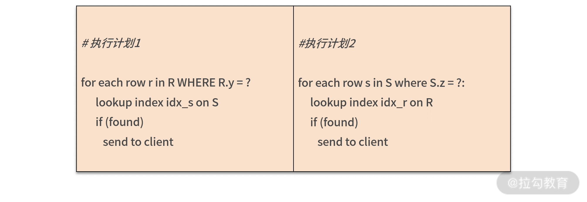
优化器一般认为，通过索引进行查询的效率都一样，所以 Nested Loop Join 算法主要要求驱动表的数量要尽可能少。
所以，如果 WHERE R.y = ?过滤出的数据少，那么这条 SQL 语句会先使用表 R 上列 y 上的索引，筛选出数据，然后再使用表 S 上列 x 的索引进行关联，最后再通过 WHERE S.z = ?过滤出最后数据。
为了深入理解优化器驱动表的选择，咱们先来看下面这条 SQL：
SELECT COUNT(1)
FROM orders
INNER JOIN lineitem
ON orders.o_orderkey = lineitem.l_orderkey
WHERE orders.o_orderdate >= '1994-02-01'
AND orders.o_orderdate < '1994-03-01'
上面的表 orders 你比较熟悉，类似于电商中的订单表，在我们的示例数据库中记录总量有 600万条记录。
表 lineitem 是订单明细表，比如一个订单可以包含三件商品，这三件商品的具体价格、数量、商品供应商等详细信息，记录数约 2400 万。
上述 SQL 语句表示查询日期为 1994 年 2 月购买的商品数量总和，你通过命令 EXPLAIN 查看得到执行计划如下所示：
EXPLAIN: -> Aggregate: count(1)
-> Nested loop inner join (cost=115366.81 rows=549152)
-> Filter: ((orders.O_ORDERDATE >= DATE'1994-02-01') and (orders.O_ORDERDATE < DATE'1994-03-01')) (cost=26837.49 rows=133612)
-> Index range scan on orders using idx_orderdate (cost=26837.49 rows=133612)
-> Index lookup on lineitem using PRIMARY (l_orderkey=orders.o_orderkey) (cost=0.25 rows=4)
上面的执行计划步骤如下，表 orders 是驱动表，它的选择过程如下所示：
- Index range scan on orders using idx_orderdate：使用索引 idx_orderdata 过滤出1994 年 2 月的订单数据，预估记录数超过 13 万。
- Index lookup on lineitem using PRIMARY：将第一步扫描的结果作为驱动表，然后将驱动表中的每行数据的 o_orderkey 值，在 lineitem 的主键索引中进行查找。
- Nested loop inner join：进行 JOIN 连接，匹配得到的输出结果。
- Aggregate: count(1)：统计得到最终的商品数量。
但若执行的是下面这条 SQL，则执行计划就有了改变：
EXPLAIN FORMAT=tree
SELECT COUNT(1)
FROM orders
INNER JOIN lineitem
ON orders.o_orderkey = lineitem.l_orderkey
WHERE orders.o_orderdate >= '1994-02-01'
AND orders.o_orderdate < '1994-03-01'
AND lineitem.l_partkey = 620758
EXPLAIN: -> Aggregate: count(1)
-> Nested loop inner join (cost=17.37 rows=2)
-> Index lookup on lineitem using lineitem_fk2 (L_PARTKEY=620758) (cost=4.07 rows=38)
-> Filter: ((orders.O_ORDERDATE >= DATE'1994-02-01') and (orders.O_ORDERDATE < DATE'1994-03-01')) (cost=0.25 rows=0)
-> Single-row index lookup on orders using PRIMARY (o_orderkey=lineitem.l_orderkey) (cost=0.25 rows=1)
上述 SQL 只是新增了一个条件 lineitem.l_partkey =620758，即查询 1994 年 2 月，商品编号为 620758 的商品购买量。
这时若仔细查看执行计划，会发现通过过滤条件 l_partkey = 620758 找到的记录大约只有 38 条，因此这时优化器选择表 lineitem 为驱动表。
Hash Join
MySQL 中的第二种 JOIN 算法是 Hash Join，用于两张表之间连接条件没有索引的情况。
有同学会提问，没有连接，那创建索引不就可以了吗？或许可以，但：
- 如果有些列是低选择度的索引，那么创建索引在导入数据时要对数据排序，影响导入性能；
- 二级索引会有回表问题，若筛选的数据量比较大，则直接全表扫描会更快。
对于 OLAP 业务查询来说，Hash Join 是必不可少的功能，MySQL 8.0 版本开始支持 Hash Join 算法，加强了对于 OLAP 业务的支持。
所以，如果你的查询数据量不是特别大，对于查询的响应时间要求为分钟级别，完全可以使用单个实例 MySQL 8.0 来完成大数据的查询工作。
Hash Join算法的伪代码如下：
foreach row r in R with matching condition:
create hash table ht on r
foreach row s in S with matching condition:
search s in hash table ht:
if (found)
send to client
Hash Join会扫描关联的两张表：
- 首先会在扫描驱动表的过程中创建一张哈希表；
- 接着扫描第二张表时，会在哈希表中搜索每条关联的记录，如果找到就返回记录。
Hash Join 选择驱动表和 Nested Loop Join 算法大致一样，都是较小的表作为驱动表。如果驱动表比较大，创建的哈希表超过了内存的大小，MySQL 会自动把结果转储到磁盘。
为了演示 Hash Join，接下来，我们再来看一个 SQL：
SELECT
s_acctbal,
s_name,
n_name,
p_partkey,
p_mfgr,
s_address,
s_phone,
s_comment
FROM
part,
supplier,
partsupp,
nation,
region
WHERE
p_partkey = ps_partkey
AND s_suppkey = ps_suppkey
AND p_size = 15
AND p_type LIKE '%BRASS'
AND s_nationkey = n_nationkey
AND n_regionkey = r_regionkey
AND r_name = 'EUROPE';
上面这条 SQL 语句是要找出商品类型为 %BRASS，尺寸为 15 的欧洲供应商信息。
因为商品表part 不包含地区信息，所以要从关联表 partsupp 中得到商品供应商信息，然后再从供应商元数据表中得到供应商所在地区信息，最后在外表 region 连接，才能得到最终的结果。
最后的执行计划如下图所示：

从上图可以发现，其实最早进行连接的是表 supplier 和 nation，接着再和表 partsupp 连接，然后和 part 表连接，再和表 part 连接。上述左右连接算法都是 Nested Loop Join。这时的结果集记录大概有 79,330 条记录
最后和表 region 进行关联，表 region 过滤得到结果5条，这时可以有 2 种选择：
- 在 73390 条记录上创建基于 region 的索引，然后在内表中通过索引进行查询；
- 对表 region 创建哈希表，73390 条记录在哈希表中进行探测；
选择 1 就是 MySQL 8.0 不支持 Hash Join 时优化器的处理方式，缺点是：如关联的数据量非常大，创建索引需要时间；其次可能需要回表，优化器大概率会选择直接扫描内表。
选择 2 只对大约 5 条记录的表 region 创建哈希索引，时间几乎可以忽略不计，其次直接选择对内表扫描，没有回表的问题。很明显，MySQL 8.0 会选择Hash Join。
了解完优化器的选择后，最后看一下命令 EXPLAIN FORMAT=tree 执行计划的最终结果：
-> Nested loop inner join (cost=101423.45 rows=79)
-> Nested loop inner join (cost=92510.52 rows=394)
-> Nested loop inner join (cost=83597.60 rows=394)
-> Inner hash join (no condition) (cost=81341.56 rows=98)
-> Filter: ((part.P_SIZE = 15) and (part.P_TYPE like '%BRASS')) (cost=81340.81 rows=8814)
-> Table scan on part (cost=81340.81 rows=793305)
-> Hash
-> Filter: (region.R_NAME = 'EUROPE') (cost=0.75 rows=1)
-> Table scan on region (cost=0.75 rows=5)
-> Index lookup on partsupp using PRIMARY (ps_partkey=part.p_partkey) (cost=0.25 rows=4)
-> Single-row index lookup on supplier using PRIMARY (s_suppkey=partsupp.PS_SUPPKEY) (cost=0.25 rows=1)
-> Filter: (nation.N_REGIONKEY = region.r_regionkey) (cost=0.25 rows=0)
-> Single-row index lookup on nation using PRIMARY (n_nationkey=supplier.S_NATIONKEY) (cost=0.25 rows=1)
以上就是 MySQL 数据库中 JOIN 的实现原理和应用了。
因为很多开发同学在编写 JOIN 时存在困惑，所以接下来我就带你深入 OLTP 业务中的JOIN问题。
OLTP 业务能不能写 JOIN？
OLTP 业务是海量并发，要求响应非常及时，在毫秒级别返回结果，如淘宝的电商业务、支付宝的支付业务、美团的外卖业务等。
如果 OLTP 业务的 JOIN 带有 WHERE 过滤条件，并且是根据主键、索引进行过滤，那么驱动表只有一条或少量记录，这时进行 JOIN 的开销是非常小的。
比如在淘宝的电商业务中，用户要查看自己的订单情况，其本质是在数据库中执行类似如下的 SQL 语句：
SELECT o_custkey, o_orderdate, o_totalprice, p_name FROM orders,lineitem, part
WHERE o_orderkey = l_orderkey
AND l_partkey = p_partkey
AND o_custkey = ?
ORDER BY o_orderdate DESC
LIMIT 30;
我发现很多开发同学会以为上述 SQL 语句的 JOIN 开销非常大，因此认为拆成 3 条简单 SQL 会好一些，比如：
SELECT * FROM orders
WHERE o_custkey = ?
ORDER BY o_orderdate DESC;
SELECT * FROM lineitem
WHERE l_orderkey = ?;
SELECT * FROM part
WHERE p_part = ?
其实你完全不用人工拆分语句，因为你拆分的过程就是优化器的执行结果，而且优化器更可靠，速度更快，而拆成三条 SQL 的方式，本身网络交互的时间开销就大了 3 倍。
所以，放心写 JOIN，你要相信数据库的优化器比你要聪明，它更为专业。上述 SQL 的执行计划如下：
EXPLAIN: -> Limit: 30 row(s) (cost=27.76 rows=30)
-> Nested loop inner join (cost=27.76 rows=44)
-> Nested loop inner join (cost=12.45 rows=44)
-> Index lookup on orders using idx_custkey_orderdate (O_CUSTKEY=1; iterate backwards) (cost=3.85 rows=11)
-> Index lookup on lineitem using PRIMARY (l_orderkey=orders.o_orderkey) (cost=0.42 rows=4)
-> Single-row index lookup on part using PRIMARY (p_partkey=lineitem.L_PARTKEY) (cost=0.25 rows=1)
由于驱动表的数据是固定 30 条，因此不论表 orders、lineitem、part 的数据量有多大，哪怕是百亿条记录，由于都是通过主键进行关联，上述 SQL 的执行速度几乎不变。
所以，OLTP 业务完全可以大胆放心地写 JOIN，但是要确保 JOIN 的索引都已添加， DBA 们在业务上线之前一定要做 SQL Review，确保预期内的索引都已创建。
总结
MySQL 数据库中支持 JOIN 连接的算法有 Nested Loop Join 和 Hash Join 两种，前者通常用于 OLTP 业务，后者用于 OLAP 业务。在 OLTP 可以写 JOIN，优化器会自动选择最优的执行计划。但若使用 JOIN，要确保 SQL 的执行计划使用了正确的索引以及索引覆盖，因此索引设计显得尤为重要，这也是DBA在架构设计方面的重要工作之一。
13 子查询：放心地使用子查询功能吧！
今天我想和你聊一聊“子查询”。
上一讲，我提到了一种复杂的 SQL 情况，多表间的连接，以及怎么设计索引来提升 JOIN 的性能。
除了多表连接之外，开发同学还会大量用子查询语句（subquery）。但是因为之前版本的MySQL 数据库对子查询优化有限，所以很多 OLTP 业务场合下，我们都要求在线业务尽可能不用子查询。
然而，MySQL 8.0 版本中，子查询的优化得到大幅提升。所以从现在开始，放心大胆地在MySQL 中使用子查询吧！
为什么开发同学这么喜欢写子查询？
我工作这么多年，发现相当多的开发同学喜欢写子查询，而不是传统的 JOIN 语句。举一个简单的例子，如果让开发同学“找出1993年，没有下过订单的客户数量”，大部分同学会用子查询来写这个需求，比如：
SELECT
COUNT(c_custkey) cnt
FROM
customer
WHERE
c_custkey NOT IN (
SELECT
o_custkey
FROM
orders
WHERE
o_orderdate >= '1993-01-01'
AND o_orderdate < '1994-01-01'
);
从中可以看到，子查询的逻辑非常清晰：通过 NOT IN 查询不在订单表的用户有哪些。
不过上述查询是一个典型的 LEFT JOIN 问题（即在表 customer 存在，在表 orders 不存在的问题）。所以，这个问题如果用 LEFT JOIN 写，那么 SQL 如下所示：
SELECT
COUNT(c_custkey) cnt
FROM
customer
LEFT JOIN
orders ON
customer.c_custkey = orders.o_custkey
AND o_orderdate >= '1993-01-01'
AND o_orderdate < '1994-01-01'
WHERE
o_custkey IS NULL;
可以发现，虽然 LEFT JOIN 也能完成上述需求，但不容易理解，因为 LEFT JOIN 是一个代数关系，而子查询更偏向于人类的思维角度进行理解。
所以，大部分人都更倾向写子查询，即便是天天与数据库打交道的 DBA 。
不过从优化器的角度看，LEFT JOIN 更易于理解，能进行传统 JOIN 的两表连接，而子查询则要求优化器聪明地将其转换为最优的 JOIN 连接。
我们来看一下，在 MySQL 8.0 版本中，对于上述两条 SQL，最终的执行计划都是：
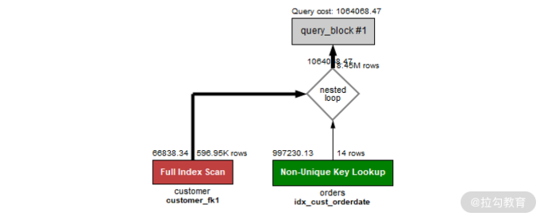
可以看到，不论是子查询还是 LEFT JOIN，最终都被转换成了 Nested Loop Join，所以上述两条 SQL 的执行时间是一样的。
即，在 MySQL 8.0 中，优化器会自动地将 IN 子查询优化，优化为最佳的 JOIN 执行计划，这样一来，会显著的提升性能。
子查询 IN 和 EXISTS，哪个性能更好？
除了“为什么开发同学都喜欢写子查询”，关于子查询，另一个经常被问到的问题是：“ IN 和EXISTS 哪个性能更好？”要回答这个问题，我们看一个例子。
针对开篇的 NOT IN 子查询，你可以改写为 NOT EXISTS 子查询，重写后的 SQL 如下所示：
SELECT
COUNT(c_custkey) cnt
FROM
customer
WHERE
NOT EXISTS (
SELECT
1
FROM
orders
WHERE
o_orderdate >= '1993-01-01'
AND o_orderdate < '1994-01-01'
AND c_custkey = o_custkey
);
你要注意，千万不要盲目地相信网上的一些文章，有的说 IN 的性能更好，有的说 EXISTS 的子查询性能更好。你只关注 SQL 执行计划就可以，如果两者的执行计划一样，性能没有任何差别。
接着说回来，对于上述 NOT EXISTS，它的执行计划如下图所示：

你可以看到，它和 NOT IN 的子查询执行计划一模一样，所以二者的性能也是一样的。讲完子查询的执行计划之后，接下来我们来看一下一种需要对子查询进行优化的 SQL：依赖子查询。
依赖子查询的优化
在 MySQL 8.0 版本之前，MySQL 对于子查询的优化并不充分。所以在子查询的执行计划中会看到 DEPENDENT SUBQUERY 的提示，这表示是一个依赖子查询，子查询需要依赖外部表的关联。
如果你看到这样的提示，就要警惕， 因为 DEPENDENT SUBQUERY 执行速度可能非常慢，大部分时候需要你手动把它转化成两张表之间的连接。
我们以下面这条 SQL 为例：
SELECT
*
FROM
orders
WHERE
(o_clerk , o_orderdate) IN (
SELECT
o_clerk, MAX(o_orderdate)
FROM
orders
GROUP BY o_clerk);
上述 SQL 语句的子查询部分表示“计算出每个员工最后成交的订单时间”，然后最外层的 SQL表示返回订单的相关信息。
这条 SQL 在最新的 MySQL 8.0 中，其执行计划如下所示：
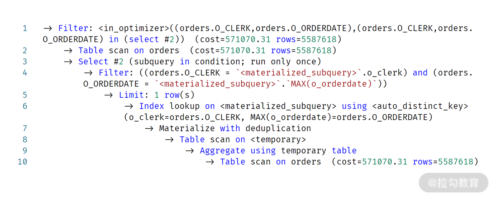
通过命令 EXPLAIN FORMAT=tree 输出执行计划，你可以看到，第 3 行有这样的提示：Select #2 (subquery in condition; run only once)。这表示子查询只执行了一次，然后把最终的结果保存起来了。
执行计划的第 6 行Index lookup on <materialized_subquery>，表示对表 orders 和子查询结果所得到的表进行 JOIN 连接，最后返回结果。
所以，当前这个执行计划是对表 orders 做2次扫描，每次扫描约 5587618 条记录：
- 第 1 次扫描，用于内部的子查询操作，计算出每个员工最后一次成交的时间；
- 第 2 次表 oders 扫描，查询并返回每个员工的订单信息，即返回每个员工最后一笔成交的订单信息。
最后，直接用命令 EXPLAIN 查看执行计划，如下图所示：
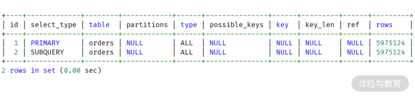
MySQL 8.0 版本执行过程
如果是老版本的 MySQL 数据库，它的执行计划将会是依赖子查询，执行计划如下所示：
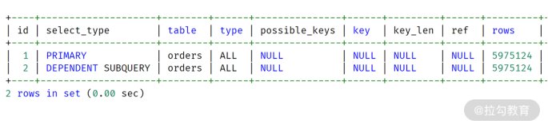
老版本 MySQL 执行过程
对比 MySQL 8.0，只是在第二行的 select_type 这里有所不同，一个是 SUBQUERY，一个是DEPENDENT SUBQUERY。
接着通过命令 EXPLAIN FORMAT=tree 查看更详细的执行计划过程：
可以发现，第 3 行的执行技术输出是：Select #2 (subquery in condition; dependent)，并不像先前的执行计划，提示只执行一次。另外，通过第 1 行也可以发现，这条 SQL 变成了 exists 子查询，每次和子查询进行关联。
所以，上述执行计划其实表示：先查询每个员工的订单信息，接着对每条记录进行内部的子查询进行依赖判断。也就是说，先进行外表扫描，接着做依赖子查询的判断。所以，子查询执行了5587618，而不是1次！！！
所以，两者的执行计划，扫描次数的对比如下所示：
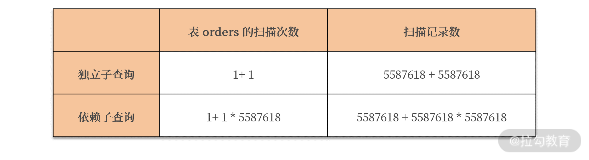
对于依赖子查询的优化，就是要避免子查询由于需要对外部的依赖，而需要对子查询扫描多次的情况。所以可以通过派生表的方式，将外表和子查询的派生表进行连接，从而降低对于子查询表的扫描，从而提升 SQL 查询的性能。
那么对于上面的这条 SQL ，可将其重写为：
SELECT * FROM orders o1,
(
SELECT
o_clerk, MAX(o_orderdate)
FROM
orders
GROUP BY o_clerk
) o2
WHERE
o1.o_clerk = o2.o_clerk
AND o1.o_orderdate = o2.orderdate;
可以看到，我们将子查询改写为了派生表 o2，然后将表 o2 与外部表 orders 进行关联。关联的条件是：o1.o_clerk = o2.o_clerk AND o1.o_orderdate = o2.orderdate。 通过上面的重写后，派生表 o2 对表 orders 进行了1次扫描，返回约 5587618 条记录。派生表o1 对表 orders 扫描 1 次，返回约 1792612 条记录。这与 8.0 的执行计划就非常相似了，其执行计划如下所示：
最后，来看下上述 SQL 的执行时间：
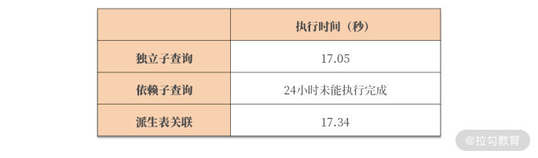
可以看到，经过 SQL 重写后，派生表的执行速度几乎与独立子查询一样。所以，若看到依赖子查询的执行计划，记得先进行 SQL 重写优化哦。
总结
这一讲，我们学习了 MySQL 子查询的优势、新版本 MySQL 8.0 对子查询的优化，以及老版本MySQL 下如何对子查询进行优化。希望你在学完今天的内容之后，可以不再受子查询编写的困惑，而是在各种场景下用好子查询。
总结来看：
- 子查询相比 JOIN 更易于人类理解，所以受众更广，使用更多；
- 当前 MySQL 8.0 版本可以“毫无顾忌”地写子查询，对于子查询的优化已经相当完备；
- 对于老版本的 MySQL，请 Review 所有子查询的SQL执行计划， 对于出现 DEPENDENT SUBQUERY 的提示，请务必即使进行优化，否则对业务将造成重大的性能影响；
- DEPENDENT SUBQUERY 的优化，一般是重写为派生表进行表连接。表连接的优化就是我们12讲所讲述的内容。
14 分区表：哪些场景我不建议用分区表？
前面几讲，我们通过索引的原理，索引覆盖的使用，结合复杂 SQL 的调优，学习了索引设计的各个方面。那么在模块二的最后一讲，我想来谈谈分区表的设计，用来对数据进行物理分区。
分区表即涉及表结构设计，也涉及了索引的设计，以及一个数据库上的哲学问题：是否要使用分区表？
接下来，我们就来学习分区表的相关知识（分区表的使用、注意事项、误区）以及在业务上的设计。
分区表的使用
简单来说，分区表就是把物理表结构相同的几张表，通过一定算法，组成一张逻辑大表。这种算法叫“分区函数”，当前 MySQL 数据库支持的分区函数类型有 RANGE、LIST、HASH、KEY、COLUMNS。
无论选择哪种分区函数，都要指定相关列成为分区算法的输入条件，这些列就叫“分区列”。另外，在 MySQL 分区表中，主键也必须是分区列的一部分，不然创建分区表时会失败，比如：
CREATE TABLE t (
a INT,
b INT,
c DATETIME(6),
d VARCHAR(32),
e INT,
PRIMARY KEY (a,b)
)
partition by range columns(c) (
PARTITION p0000 VALUES LESS THAN ('2019-01-01'),
PARTITION p2019 VALUES LESS THAN ('2020-01-01'),
PARTITION p2020 VALUES LESS THAN ('2021-01-01'),
PARTITION p9999 VALUES LESS THAN (MAXVALUE)
);
ERROR 1503 (HY000): A PRIMARY KEY must include all columns in the table's partitioning function (prefixed columns are not considered).
上面创建了表 t，主键是复合索引，由列 a、b 组成。表 t 创建分区表的意图是根据列 c（时间列）拆分数据，把不同时间数据存放到不同分区中。
而我们可以从错误的提示中看到：分区表的主键一定要包含分区函数的列。所以，要创建基于列c 的数据分片的分区表，主键必须包含列 c，比如下面的建表语句：
CREATE TABLE t (
a INT,
b INT,
c DATETIME,
d VARCHAR(32),
e INT,
PRIMARY KEY (a,b,c),
KEY idx_e (e)
)
partition by range columns(c) (
PARTITION p0000 VALUES LESS THAN ('2019-01-01'),
PARTITION p2019 VALUES LESS THAN ('2020-01-01'),
PARTITION p2020 VALUES LESS THAN ('2021-01-01'),
PARTITION p9999 VALUES LESS THAN (MAXVALUE)
);
创建完表后，在物理存储上会看到四个分区所对应 ibd 文件，也就是把数据根据时间列 c 存储到对应的 4 个文件中：
t#p#p0000.ibd t#p#p2019.ibd t#p#p2020.ibd t#p#p9999.ibd
所以，你要理解的是：MySQL 中的分区表是把一张大表拆成了多张表，每张表有自己的索引，从逻辑上看是一张表，但物理上存储在不同文件中。
另外，对于唯一索引的实现，可能和你原本的理解有些不同，我们接着往下看。
分区表注意事项：唯一索引
在 MySQL 数据库中，分区表的索引都是局部，而非全局。也就是说，索引在每个分区文件中都是独立的，所以分区表上的唯一索引必须包含分区列信息，否则创建会报错，比如：
ALTER TABLE t ADD UNIQUE KEY idx_d(d);
ERROR 1503 (HY000): A UNIQUE INDEX must include all columns in the table's partitioning function (prefixed columns are not considered).
你可以看到错误提示： 唯一索引必须包含分区函数中所有列。而下面的创建才能成功：
ALTER TABLE t ADD UNIQUE KEY idx_d(d,c);
但是，正因为唯一索引包含了分区列，唯一索引也就变成仅在当前分区唯一，而不是全局唯一了。那么对于上面的表 t，插入下面这两条记录都是可以的：
INSERT INTO t VALUES
(1,1,'2021-01-01','aaa',1),
(1,1,'2020-01-01','aaa',1);
SELECT * FROM t;
+---+---+---------------------+------+------+
| a | b | c | d | e |
+---+---+---------------------+------+------+
| 1 | 1 | 2020-01-01 00:00:00 |aaa | 1 |
| 1 | 1 | 2021-01-01 00:00:00 |aaa | 1 |
+---+---+---------------------+------+------+
你可以看到，列 d 都是字符串‘aaa’，但依然可以插入。这样带来的影响是列 d 并不是唯一的，所以你要由当前分区唯一实现全局唯一。
那如何实现全局唯一索引呢？ 和之前表结构设计时一样，唯一索引使用全局唯一的字符串（如类似 UUID 的实现），这样就能避免局部唯一的问题。
分区表的误区：性能提升
很多同学会认为，分区表是把一张大表拆分成了多张小表，所以这样 MySQL 数据库的性能会有大幅提升。这是错误的认识！如果你寄希望于通过分区表提升性能，那么我不建议你使用分区，因为做不到。
分区表技术不是用于提升 MySQL 数据库的性能，而是方便数据的管理。
我们再回顾下 08 讲中提及的“B+树高度与数据存储量之间的关系”：
从表格中可以看到，B+ 树的高度为 4 能存放数十亿的数据，一次查询只需要占用 4 次 I/O，速度非常快。
但是当你使用分区之后，效果就不一样了，比如上面的表 t，我们根据时间拆成每年一张表，这时，虽然 B+ 树的高度从 4 降为了 3，但是这个提升微乎其微。
除此之外，分区表还会引入新的性能问题，比如非分区列的查询。非分区列的查询，即使分区列上已经创建了索引，但因为索引是每个分区文件对应的本地索引，所以要查询每个分区。
接着，我们看一下这条 SQL 以及它的执行计划：
SELECT * FROM t WHERE d = 'aaa'
******** 1. row ********
id: 1
select_type: SIMPLE
table: t
partitions: p0000,p2019,p2020,p9999
type: ALL
possible_keys: NULL
key: NULL
key_len: NULL
ref: NULL
rows: 2
filtered: 50.00
Extra: Using where
通过执行计划我们可以看到：上述 SQL 需要访问 4 个分区，假设每个分区需要 3 次 I/O，则这条 SQL 总共要 12 次 I/O。但是，如果使用普通表，记录数再多，也就 4 次的 I/O 的时间。
所以，分区表设计时，务必明白你的查询条件都带有分区字段，否则会扫描所有分区的数据或索引。所以，分区表设计不解决性能问题，更多的是解决数据迁移和备份的问题。
而为了让你更好理解分区表的使用，我们继续看一个真实业务的分区表设计。
分区表在业务上的设计
以电商中的订单表 Orders 为例，如果在类似淘宝的海量互联网业务中，Orders 表的数据量会非常巨大，假设一天产生 5000 万的订单，那么一年表 Orders 就有近 180 亿的记录。
所以对于订单表，在数据库中通常只保存最近一年甚至更短时间的数据，而历史订单数据会入历史库。除非存在 1 年以上退款的订单，大部分订单一旦完成，这些数据从业务角度就没用了。
那么如果你想方便管理订单表中的数据，可以对表 Orders 按年创建分区表，如：
CREATE TABLE `orders` (
`o_orderkey` int NOT NULL,
`O_CUSTKEY` int NOT NULL,
`O_ORDERSTATUS` char(1) CHARACTER SET utf8mb4 COLLATE utf8mb4_general_ci NOT NULL,
`O_TOTALPRICE` decimal(15,2) NOT NULL,
`O_ORDERDATE` date NOT NULL,
`O_ORDERPRIORITY` char(15) CHARACTER SET utf8mb4 COLLATE utf8mb4_general_ci NOT NULL,
`O_CLERK` char(15) CHARACTER SET utf8mb4 COLLATE utf8mb4_general_ci NOT NULL,
`O_SHIPPRIORITY` int NOT NULL,
`O_COMMENT` varchar(79) CHARACTER SET utf8mb4 COLLATE utf8mb4_general_ci NOT NULL,
PRIMARY KEY (`o_orderkey`,`O_ORDERDATE`),
KEY `orders_fk1` (`O_CUSTKEY`),
KEY `idx_orderdate` (`O_ORDERDATE`)
)
PARTITION BY RANGE COLUMNS(o_orderdate)
(
PARTITION p0000 VALUES LESS THAN ('1992-01-01') ENGINE = InnoDB,
PARTITION p1992 VALUES LESS THAN ('1993-01-01') ENGINE = InnoDB,
PARTITION p1993 VALUES LESS THAN ('1994-01-01') ENGINE = InnoDB,
PARTITION p1994 VALUES LESS THAN ('1995-01-01') ENGINE = InnoDB,
PARTITION p1995 VALUES LESS THAN ('1996-01-01') ENGINE = InnoDB,
PARTITION p1996 VALUES LESS THAN ('1997-01-01') ENGINE = InnoDB,
PARTITION p1997 VALUES LESS THAN ('1998-01-01') ENGINE = InnoDB,
PARTITION p1998 VALUES LESS THAN ('1999-01-01') ENGINE = InnoDB,
PARTITION p9999 VALUES LESS THAN (MAXVALUE)
）
你可以看到，这时 Orders 表的主键修改为了(o_orderkey,O_ORDERDATE)，数据按照年进行分区存储。那么如果要删除 1 年前的数据，比如删除 1998 年的数据，之前需要使用下面的 SQL，比如:
DELETE FROM Orders
WHERE o_orderdate >= '1998-01-01'
AND o_orderdate < '1999-01-01'
可这条 SQL 的执行相当慢，产生大量二进制日志，在生产系统上，也会导致数据库主从延迟的问题。而使用分区表的话，对于数据的管理就容易多了，你直接使用清空分区的命令就行：
ALTER TABLE orders_par
TRUNCATE PARTITION p1998
上述 SQL 执行速度非常快，因为实际执行过程是把分区文件删除和重建。另外产生的日志也只有一条 DDL 日志，也不会导致主从复制延迟问题。
# at 425
#210328 12:10:12 server id 8888 end_log_pos 549 Query thread_id=9 exec_time=0 error_code=0 Xid = 10
SET TIMESTAMP=1619583012/*!*/;
/*!80013 SET @@session.sql_require_primary_key=0*//*!*/;
ALTER TABLE orders TRUNCATE PARTITION p1998
/*!*/;
总结
这一讲我们学习了分区表的原理、使用，最后通过线上电商表 Orders 展示了如何用好分区表。当然真正的电商业务会做分布式架构，从而用到分表技术，这些内容我们在后面会详细讲。
我强调一下今天的重点：
- 当前 MySQL 的分区表支持 RANGE、LIST、HASH、KEY、COLUMNS 的分区算法；
- 分区表的创建需要主键包含分区列；
- 在分区表中唯一索引仅在当前分区文件唯一，而不是全局唯一；
- 分区表唯一索引推荐使用类似 UUID 的全局唯一实现；
- 分区表不解决性能问题，如果使用非分区列查询，性能反而会更差；
- 推荐分区表用于数据管理、速度快、日志小。
我想再次提醒你：分区表并不是用于提升性能的一种手段，它是方便管理数据的一种方式。
15 MySQL 复制：最简单也最容易配置出错
从今天开始，我们正式进入高可用架构的设计环节。
在前两个模块中，我们学习了 MySQL 架构中的表结构设计、索引设计。对业务开发的同学来说，掌握这些内容已经能很好地面向业务逻辑进行编码工作了。
但是业务需要上线，所以除了表和索引的结构设计之外，你还要做好高可用的设计。因为在真实的生产环境下，如果发生物理硬件故障，没有搭建高可用架构，会导致业务完全不可用。
而这在海量并发访问的互联网业务中完全不敢想象。所以除了业务架构，还要做好可用性的架构设计。
这一讲，我们就来学习 MySQL 高可用架构中最基础、最为核心的内容：MySQL 复制（Replication）。
MySQL 复制架构
数据库复制本质上就是数据同步。MySQL 数据库是基于二进制日志（binary log）进行数据增量同步，而二进制日志记录了所有对于 MySQL 数据库的修改操作。
在默认 ROW 格式二进制日志中，一条 SQL 操作影响的记录会被全部记录下来，比如一条 SQL语句更新了三行记录，在二进制日志中会记录被修改的这三条记录的前项（before image）和后项（after image）。
对于 INSERT 或 DELETE 操作，则会记录这条被插入或删除记录所有列的信息，我们来看一个例子：
DELETE FROM orders_test
WHERE o_orderdate = '1997-12-31';
Query OK, 2482 rows affected (0.07 sec)
可以看到，上面这条 SQL 执行的是删除操作，一共删除了有 2482 行记录。可以在 mysql 命令行下使用命令 SHOW BINLOG EVENTS 查看某个二进制日志文件的内容，比如上述删除操作发生在二进制日志文件 binlog.000004 中，你可以看到：
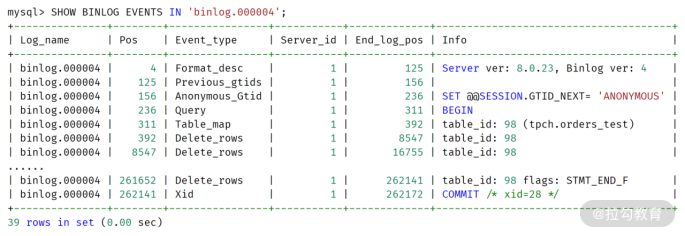
通过 MySQL 数据库自带的命令 mysqlbinlog，可以解析二进制日志，观察到更为详细的每条记录的信息，比如：

从图中，你可以通过二进制日志记录看到被删除记录的完整信息，还有每个列的属性，比如列的类型，是否允许为 NULL 值等。
如果是 UPDATE 操作，二进制日志中还记录了被修改记录完整的前项和后项，比如：

在有二进制日志的基础上，MySQL 数据库就可以通过数据复制技术实现数据同步了。而数据复制的本质就是把一台 MySQL 数据库上的变更同步到另一台 MySQL 数据库上。下面这张图显示了当前 MySQL 数据库的复制架构：
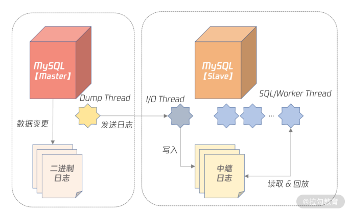
可以看到，在 MySQL 复制中，一台是数据库的角色是 Master（也叫 Primary），剩下的服务器角色是 Slave（也叫 Standby）：
- Master 服务器会把数据变更产生的二进制日志通过 Dump 线程发送给 Slave 服务器；
- Slave 服务器中的 I/O 线程负责接受二进制日志，并保存为中继日志；
- SQL/Worker 线程负责并行执行中继日志，即在 Slave 服务器上回放 Master 产生的日志。
得益于二进制日志，MySQL 的复制相比其他数据库，如 Oracle、PostgreSQL 等，非常灵活，用户可以根据自己的需要构建所需要的复制拓扑结构，比如：

在上图中，Slave1、Slave2、Slave3 都是 Master 的从服务器，而 Slave11 是 Slave1 的从服务器，Slave1 服务器既是 Master 的从机，又是 Slave11 的主机，所以 Slave1 是个级联的从机。同理，Slave3 也是台级联的从机。
在了解完复制的基本概念后，我们继续看如何配置 MySQL 的复制吧。
MySQL 复制配置
搭建 MySQL 复制实现非常简单，基本步骤如下：
- 创建复制所需的账号和权限；
- 从 Master 服务器拷贝一份数据，可以使用逻辑备份工具 mysqldump、mysqlpump，或物理备份工具 Clone Plugin；
- 通过命令 CHANGE MASTER TO 搭建复制关系；
- 通过命令 SHOW SLAVE STATUS 观察复制状态。
虽然 MySQL 复制原理和实施非常简单，但在配置时却容易出错，请你务必在配置文件中设置如下配置：
gtid_mode = on
enforce_gtid_consistency = 1
binlog_gtid_simple_recovery = 1
relay_log_recovery = ON
master_info_repository = TABLE
relay_log_info_repository = TABLE
上述设置都是用于保证 crash safe，即无论 Master 还是 Slave 宕机，当它们恢复后，连上主机后，主从数据依然一致，不会产生任何不一致的问题。
我经常听有同学反馈：MySQL会存在主从数据不一致的情况，请确认上述参数都已配置，否则任何的不一致都不是 MySQL 的问题，而是你使用 MySQL 的错误姿势所致。
了解完复制的配置后，我们接下来看一下 MySQL 支持的复制类型。
MySQL复制类型及应用选项
MySQL 复制可以分为以下几种类型：
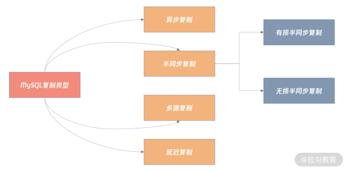
默认的复制是异步复制，而很多新同学因为不了解 MySQL 除了异步复制还有其他复制的类型，所以错误地在业务中使用了异步复制。为了解决这个问题，我们一起详细了解一下每种复制类型，以及它们在业务中的选型，方便你在业务做正确的选型。
异步复制
在异步复制（async replication）中，Master 不用关心 Slave 是否接收到二进制日志，所以 Master 与 Slave 没有任何的依赖关系。你可以认为 Master 和 Slave 是分别独自工作的两台服务器，数据最终会通过二进制日志达到一致。
异步复制的性能最好，因为它对数据库本身几乎没有任何开销，除非主从延迟非常大，Dump Thread 需要读取大量二进制日志文件。
如果业务对于数据一致性要求不高，当发生故障时，能容忍数据的丢失，甚至大量的丢失，推荐用异步复制，这样性能最好（比如像微博这样的业务，虽然它对性能的要求极高，但对于数据丢失，通常可以容忍）。但往往核心业务系统最关心的就是数据安全，比如监控业务、告警系统。
半同步复制
半同步复制要求 Master 事务提交过程中，至少有 N 个 Slave 接收到二进制日志，这样就能保证当 Master 发生宕机，至少有 N 台 Slave 服务器中的数据是完整的。
半同步复制并不是 MySQL 内置的功能，而是要安装半同步插件，并启用半同步复制功能，设置 N 个 Slave 接受二进制日志成功，比如：
plugin-load="rpl_semi_sync_master=semisync_master.so;rpl_semi_sync_slave=semisync_slave.so"
rpl-semi-sync-master-enabled = 1
rpl-semi-sync-slave-enabled = 1
rpl_semi_sync_master_wait_no_slave = 1
上面的配置中：
- 第 1 行要求数据库启动时安装半同步插件；
- 第 2、3 行表示分别启用半同步 Master 和半同步 Slave 插件；
- 第 4 行表示半同步复制过程中，提交的事务必须至少有一个 Slave 接收到二进制日志。
在半同步复制中，有损半同步复制是 MySQL 5.7 版本前的半同步复制机制，这种半同步复制在Master 发生宕机时，Slave 会丢失最后一批提交的数据，若这时 Slave 提升（Failover）为Master，可能会发生已经提交的事情不见了，发生了回滚的情况。
有损半同步复制原理如下图所示：

可以看到，有损半同步是在 Master 事务提交后，即步骤 4 后，等待 Slave 返回 ACK，表示至少有 Slave 接收到了二进制日志，如果这时二进制日志还未发送到 Slave，Master 就发生宕机，则此时 Slave 就会丢失 Master 已经提交的数据。
而 MySQL 5.7 的无损半同步复制解决了这个问题，其原理如下图所示：

从上图可以看到，无损半同步复制 WAIT ACK 发生在事务提交之前，这样即便 Slave 没有收到二进制日志，但是 Master 宕机了，由于最后一个事务还没有提交，所以本身这个数据对外也不可见，不存在丢失的问题。
所以，对于任何有数据一致性要求的业务，如电商的核心订单业务、银行、保险、证券等与资金密切相关的业务，务必使用无损半同步复制。这样数据才是安全的、有保障的、即使发生宕机，从机也有一份完整的数据。
多源复制
无论是异步复制还是半同步复制，都是 1 个 Master 对应 N 个 Slave。其实 MySQL 也支持 N 个 Master 对应 1 个 Slave，这种架构就称之为多源复制。
多源复制允许在不同 MySQL 实例上的数据同步到 1 台 MySQL 实例上，方便在 1 台 Slave 服务器上进行一些统计查询，如常见的 OLAP 业务查询。
多源复制的架构如下所示：

上图显示了订单库、库存库、供应商库，通过多源复制同步到了一台 MySQL 实例上，接着就可以通过 MySQL 8.0 提供的复杂 SQL 能力，对业务进行深度的数据分析和挖掘。
延迟复制
前面介绍的复制架构，Slave 在接收二进制日志后会尽可能快地回放日志，这样是为了避免主从之间出现延迟。而延迟复制却允许Slave 延迟回放接收到的二进制日志，为了避免主服务器上的误操作，马上又同步到了从服务器，导致数据完全丢失。
我们可以通过以下命令设置延迟复制：
CHANGE MASTER TO master_delay = 3600
这样就人为设置了 Slave 落后 Master 服务器1个小时。
延迟复制在数据库的备份架构设计中非常常见，比如可以设置一个延迟一天的延迟备机，这样本质上说，用户可以有 1 份 24 小时前的快照。
那么当线上发生误操作，如 DROP TABLE、DROP DATABASE 这样灾难性的命令时，用户有一个 24 小时前的快照，数据可以快速恢复。
对金融行业来说，延迟复制是你备份设计中，必须考虑的一个架构部分。
总结
相信学完今天的内容，你一定会对 MySQL 复制技术有一个清晰的了解，认识到复制是数据同步的基础，而二进制日志就是复制的基石。我总结一下今天的重点：
- 二进制日志记录了所有对于 MySQL 变更的操作；
- 可以通过命令 SHOW BINLOG EVENTS IN ... FROM ... 查看二进制日志的基本信息；
- 可以通过工具 mysqlbinlog 查看二进制日志的详细内容；
- 复制搭建虽然简单，但别忘记配置 crash safe 相关参数，否则可能导致主从数据不一致；
- 异步复制用于非核心业务场景，不要求数据一致性；
- 无损半同步复制用于核心业务场景，如银行、保险、证券等核心业务，需要严格保障数据一致性；
- 多源复制可将多个 Master 数据汇总到一个数据库示例进行分析；
- 延迟复制主要用于误操作防范，金融行业要特别考虑这样的场景。
16 读写分离设计：复制延迟？其实是你用错了
上一讲我们学习了主从复制的原理，以及 4 种不同复制类型在不同业务中的选型，今天我们来看一下主从复制延迟的问题。
很多同学会发现，自己的主从复制会存在主从数据延迟的问题，甚至会导致读写分离，架构设计在业务层出现较为严重的问题，比如迟迟无法读取到主库已经插入的数据。
但这可能并不是 MySQL 复制的问题，而是你的业务没有根据 MySQL 复制的特点进行设计。
所以这一讲，我们就来学习主从复制延迟的原因，以及如何避免这个令人头疼的问题。
逻辑日志的优缺点
学完 15 讲之后，你应该注意到 MySQL 复制基于的二进制日志是一种逻辑日志，其写入的是每个事务中已变更的每条记录的前项、后项。
有了每条记录的变化内容，用户可以方便地通过分析 MySQL 的二进制日志内容，准时地将 MySQL 中的数据同步到异构的数据平台，如 HBase、ES、Hive 等大数据平台。
我们可以发现，逻辑日志简单易懂，方便数据之间的同步，但它的缺点是：事务不能太大，否则会导致二进制日志非常大，一个大事务的提交会非常慢。
假设有个 DELETE 删除操作，删除当月数据，由于数据量可能有 1 亿条记录，可能会产生 100G 的二进制日志，则这条 SQL 在提交时需要等待 100G 的二进制日志写入磁盘，如果二进制日志磁盘每秒写入速度为 100M/秒，至少要等待 1000 秒才能完成这个事务的提交。
所以在 MySQL 中，你一定要对大事务特别对待， 总结起来就是：
- 设计时，把 DELETE 删除操作转化为 DROP TABLE/PARTITION 操作；
- 业务设计时，把大事务拆成小事务。
对于第一点（把 DELETE 删除操作转化为 DROP TABLE/PARTITION 操作），主要是在设计时把流水或日志类的表按时间分表或者分区，这样在删除时，二进制日志内容就是一条 DROP TABLE/PARITION 的 SQL，写入速度就非常快了。
而第二点（把大事务拆分成小事务）也能控制二进制日志的大小。比如对于前面的 DELETE 操作，如果设计时没有分表或分区，那么你可以进行如下面的小事务拆分：
DELETE FROM ...
WHEREE time between ... and ...
LIMIT 1000;
上面的 SQL 就是把一个大的 DELETE 操作拆分成了每次删除 1000 条记录的小操作。而小事务的另一个优势是：可以进行多线程的并发操作，进一步提升删除效率。
MySQL 数据库中，大事务除了会导致提交速度变慢，还会导致主从复制延迟。
试想一下，一个大事务在主服务器上运行了 30 分钟，那么在从服务器上也需要运行 30 分钟。在从机回放这个大事务的过程中，主从服务器之间的数据就产生了延迟；产生大事务的另一种可能性是主服务上没有创建索引，导致一个简单的操作时间变得非常长。这样在从机回放时，也会需要很长的时间从而导致主从的复制延迟。
除了把大事务拆分成小事务，可以避免主从复制延迟，你还可以设置复制回放相关的配置参数，接下来我们就来分析一下主从复制延迟的优化。
主从复制延迟优化
你要牢记：要彻底避免 MySQL 主从复制延迟，数据库版本至少要升级到 5.7，因为之前的MySQL 版本从机回放二进制都是单线程的（5.6 是基于库级别的单线程）。
从 MySQL 5.7 版本开始，MySQL 支持了从机多线程回放二进制日志的方式，通常把它叫作“并行复制”，官方文档中称为“Multi-Threaded Slave（MTS）”。
MySQL 的从机并行复制有两种模式。
- COMMIT ORDER： 主机怎么并行，从机就怎么并行。
- WRITESET： 基于每个事务，只要事务更新的记录不冲突，就可以并行。
COMMIT ORDER 模式的从机并行复制，从机完全根据主服务的并行度进行回放。理论上来说，主从延迟极小。但如果主服务器上并行度非常小，事务并不小，比如单线程每次插入 1000 条记录，则从机单线程回放，也会存在一些复制延迟的情况。
而 WRITESET 模式是基于每个事务并行，如果事务间更新的记录不冲突，就可以并行。还是以“单线程每次插入 1000 条记录”为例，如果插入的记录没有冲突，比如唯一索引冲突，那么虽然主机是单线程，但从机可以是多线程并行回放！！！
所以在 WRITESET 模式下，主从复制几乎没有延迟。那么要启用 WRITESET 复制模式，你需要做这样的配置：
binlog_transaction_dependency_tracking = WRITESET
transaction_write_set_extraction = XXHASH64
slave-parallel-type = LOGICAL_CLOCK
slave-parallel-workers = 16
因为主从复制延迟会影响到后续高可用的切换，以及读写分离的架构设计，所以在真实的业务中，你要对主从复制延迟进行监控。
主从复制延迟监控
Seconds_Behind_Master
很多同学或许知道通过命令 SHOW SLAVE STATUS，其中的 Seconds_Behind_Master 可以查看复制延迟，如：

但是，Seconds_Behind_Master 不准确！用于严格判断主从延迟的问题并不合适， 有这样三个原因。
- 它计算规则是（当前回放二进制时间 - 二进制日志中的时间），如果 I/O 线程有延迟，那么 Second_Behind_Master 为 0，这时可能已经落后非常多了，例如存在有大事务的情况下；
- 对于级联复制，最下游的从服务器延迟是不准确的，因为它只表示和上一级主服务器之间的延迟；
- 若主从时区不一样，那么 second_behind_master 也不准确；
总的来说，线上业务通过 Seconds_Begind_Master 值观察主从复制延迟并不准确，需要额外引入一张表，才能真正监控主从的复制延迟情况。
心跳表
想要实时准确地监控主从复制延迟，可以在主服务器上引入一张心跳表 heartbeat，用于定期更新时间（比如每 3 秒一次）。于主从复制机制，主机上写入的时间会被复制到从机，这时对于主从复制延迟的判断可以根据如下规则：
主从延迟 = 从机当前时间 - 表 heartbeat 中的时间
这可以很好解决上述 Seconds_Behind_Master 值存在的问题。表 heartbeat 和定期更新时间可以根据类似的设计：
USE DBA;
CREATE TABLE heartbeat (
server-uuid VARCHAR(36) PRIMARY KEY,
ts TIMESTAMP(6) NOT NULL
);
REPLACE INTO heartbeat(@@server_uuid, NOW())
上面的设计中，我们创建了DBA库，以及库下的一张表 heartbeat，用于记录当前时间。
REPLACE 语句用于定期更新当前时间，并存入到表 heartbeat，表 heartbeat 在正常运行情况下只有一条记录。定期执行 REPLACE 语句可以使用定期的脚本调度程序，也可以使用 MySQL自带的事件调度器（event scheduler），如：
CREATE EVENT e_heartbeat
ON SCHEDULE
EVERY 3 SECOND
DO
BEGIN
REPLACE INTO DBA.heartbeat VALUES (@@server_uuid,NOW())
END
根据上述 2 个小节所讲述的内容，你已经能正确配置并行复制，并对复制延迟进行监控，这时就可以设计一种称为读写分离的业务架构了。
读写分离设计
读写分离设计是指：把对数据库的读写请求分布到不同的数据库服务器上。对于写入操作只能请求主服务器，而对读取操作则可以将读取请求分布到不同的从服务器上。
这样能有效降低主服务器的负载，提升从服务器资源利用率，从而进一步提升整体业务的性能。下面这张图显示了一种常见的业务读写分离的架构设计：

上图引入了 Load Balance 负载均衡的组件，这样 Server 对于数据库的请求不用关心后面有多少个从机，对于业务来说也就是透明的，只需访问 Load Balance 服务器的 IP 或域名就可以。
通过配置 Load Balance 服务，还能将读取请求平均或按照权重平均分布到不同的从服务器。这可以根据架构的需要做灵活的设计。
请记住：读写分离设计的前提是从机不能落后主机很多，最好是能准实时数据同步，务必一定要开始并行复制，并确保线上已经将大事务拆成小事务。
当然，若是一些报表类的查询，只要不影响最终结果，业务是能够容忍一些延迟的。但无论如何，请一定要在线上数据库环境中做好主从复制延迟的监控。
如果真的由于一些不可预知的情况发生，比如一个初级 DBA 在主机上做了一个大事务操作，导致主从延迟发生，那么怎么做好读写分离设计的兜底呢？
在 Load Balance 服务器，可以配置较小比例的读取请求访问主机，如上图所示的 1%，其余三台从服务器各自承担 33% 的读取请求。
如果发生严重的主从复制情况，可以设置下面从机权重为 0，将主机权重设置为 100%，这样就不会因为数据延迟，导致对于业务的影响了。
总结
本讲还是基于上一讲复制内容的延伸，学习怎么解决主从服务可能发生的数据延迟问题，以及基于主从复制机制搭建一个读写分离架构，总的来说：
- MySQL 二进制日志是一种逻辑日志，便于将数据同步到异构的数据平台；
- 逻辑日志在事务提交时才写入，若存在大事务，则提交速度很慢，也会影响主从数据之间的同步；
- 在 MySQL 中务必将大事务拆分成小事务处理，这样才能避免主从数据延迟的问题；
- 通过配置 MTS 并行复制机制，可以进一步缩短主从数据延迟的问题，推荐使用 MySQL 5.7版本，并配置成基于 WRITESET 的复制；
- 主从复制延迟监控不能依赖 Seconds_Behind_Master 的值，最好的方法是额外配置一张心跳表；
- 读写分离是一种架构上非常常见的方法，你一定要掌握，并做好读写分离架构失效情况下的兜底设计。
这一讲内容非常硬核，希望你能回去多阅读几次，对你进行架构设计会有很大的帮助。
17 高可用设计：你怎么活用三大架构方案？
我们前面学习了 MySQL 数据库复制的原理、优化，以及基于复制技术实现业务层的读写分离方案，这些内容都是为了铺垫 MySQL 数据库的高可用架构设计。因为复制是高可用的基础，但只用复制同步数据又远远不够，你还要结合自己的业务进行高可用设计。
同时，高可用也不仅仅是数据库的事情，你要从业务的全流程出发，思考怎么设计一个真正健壮的高可用架构。
现在，我们先来看看什么是高可用？为什么它如此重要。
高可用概念
首先，我们来看一下 wiki 上对高可用（High Availability）的定义：
High availability (HA) is a characteristic of a system which aims to ensure an agreed level of operational performance, usually uptime, for a higher than normal period.
从上面的描述来看，高可用（High Availability）是系统所能提供无故障服务的一种能力。 简单地说就是避免因服务器宕机而造成的服务不可用。
我们都知道，高可用是每个业务系统设计时，开发人员必须考虑的关键点。比如你的系统在发生不可用时，业务表现如何？用户能否容忍你的不可用时长？
而业界度量高可用能力也有统一标准：判断宕机时间，并以此计算出每年系统可用时间达到几个 9，来判断高可用架构是否健壮。具体如下表所示：

通常来说，系统至少要达到 4 个 9（99.99%），也就是每年宕机时间不超过 52.56 分钟，否则用户体验会非常差，感觉系统不稳定。
99.99% = 1 - 52.56 / (365*24*60)
不过 4 个 9 宕机 52 分钟对于生产环境的影响还是比较大，但是 5 个 9 对大部分系统来说要求又太高。所以一些云服务商会提出一个 99.995% 的可用性概念，那么系统一年的不可用时长为：
不可用时长 = (1 - 99.995%)*365*24*60 = 26.28 (分钟)
即一年最多的影响服务的时间为 26.28 分钟。
简单了解“高可用”有多么重要之后，接下来我们就来看一下，怎么设计高可用架构。
高可用架构设计
系统要达到高可用，一定要做好软硬件的冗余，消除单点故障（SPOF single point of failure）。
冗余是高可用的基础，通常认为，系统投入硬件资源越多，冗余也就越多，系统可用性也就越高。
除了做好冗余，系统还要做好故障转移（Failover）的处理。也就是在最短的时间内发现故障，然后把业务切换到冗余的资源上。
在明确上述高可用设计的基本概念后之后，我们来看一下高可用架构设计的类型：无状态服务高可用设计、数据库高可用架构设计。
无状态服务高可用设计
无状态的服务（如 Nginx ）高可用设计非常简单，发现问题直接转移就行，甚至可以通过负载均衡服务，当发现有问题，直接剔除：

上图中，当第一台 Ningx 服务器出现问题，导致服务不可用，Load Balance 负载均衡服务发现后，就可以直接把它剔除。
对于上层用户来说，他只会在几秒内的访问出现问题，之后服务就立刻恢复了。无状态的服务，高可用设计就是这么简单。
数据库高可用架构设计
所以，系统高可用设计，真正的难点、痛点不在于无状态服务的设计，而在于数据库的高可用设计，这是因为：
- 数据持久化在数据库中，是有状态的服务；
- 数据库的容量比较大，Failover 的时间相对无状态服务会更多；
- 一些系统，如金融场景的数据库，会要求数据完全不能丢失，这又增加了高可用实现的难度。
其实从架构角度看，数据库高可用本身也是业务高可用，所以我们要从业务全流程的角度出发，思考数据库的高可用设计。
我在这里提供了三种数据库的高可用架构设计方法，它们不但适用于 MySQL 数据库，也适用于其他数据库。
基于数据层的数据库高可用架构
基于数据层的数据库高可用架构，就是基于数据同步技术。当主服务器 Master 发生宕机，则故障转移到从服务器 Slave。
对于 MySQL 数据库来说，就是基于前面介绍的复制技术。对于 16 讲的读写分离架构，如果主服务器发生宕机，做如下操作就行了：
可以发现，我们原先的 Slave3 从服务器提升为了新主机，然后建立了新的复制拓扑架构，Slave2、Slave3 都连到新 Master 进行数据同步。
为了在故障转移后对 Service 服务无感知，所以需要引入 VIP（Virtual IP）虚拟 IP 技术，当发生宕机时，VIP 也需要漂移到新的主服务器。
那么这个架构的真正难点在于：
- 如何保障数据一致性；
- 如何发现主服务器宕机；
- 故障转移逻辑的处理；
我们可以通过 MySQL 提供的无损复制技术，来保障“数据一致性”。而“发现主服务器宕机”“处理故障转移逻辑”要由数据库高可用套件完成，我们 20 讲再来学习。
基于业务层的数据库高可用架构
第二种“基于业务层的数据库高可用架构设计”则完全基于业务实现，数据库只是用于存储数据。
当一台数据库主服务器不可用，业务直接写另一台数据库主服务器就可以了。我们来看一下这个架构：

从上图可以看到，Service 服务写入 Master1 主服务器失败后，不用等待故障转移程序启用主从切换，而是直接把数据写入 Master2 主服务器。
这看似是一种非常简单、粗暴的高可用架构实现方式，但能符合这样设计的业务却并不多，因为该设计前提是状态可修改。
比如电商中的订单服务，其基本逻辑就是存储电商业务中每笔订单信息，核心逻辑就是往表Orders 中插入数据，即：
INSERT INTO Orders(o_orderkey, ... ) VALUES (...)
这里 o_orderkey 是主键。为了实现基于业务层的数据库高可用，可以在主键生成过程中加入额外信息，比如服务器编号，这样订单的主键设计变为了：
PK = 有序UUID-服务器编号
这样的话，当写入服务器编号 1 时失败了，业务层会把订单的主键修改为服务器编号 2，这样就实现了业务层的高可用，电商中的这种订单号生成方式也称为“跳单”。
而当查询订单信息时，由于主键中包含了服务器编号，那么业务知道该笔订单存储在哪台服务器，就可以非常快速地路由到指定的服务器。
但这样设计的前提是整个服务的写入主键是可以进行跳单设计，且查询全部依赖主键进行搜索。
看到这里，你是不是觉得非常符合 NoSQL 的 KV 访问设计呢？别忘了前面介绍的 Memcached Plugin 哦。
融合的高可用架构设计
刚刚“基于业务层的数据库高可用架构”中，虽然通过跳单设计，可以实现写入业务的高可用实现。但这时订单服务的查询功能会受到极大影响。在上面的例子中，当发生宕机时，服务器编号为 1 的订单无法查询。
所以，我给出一种业务和数据层相结合的高可用设计。这个架构可以解决宕机后，查询服务受限的问题。其架构图如下所示：

上图中，将不同编号的订单根据不同的数据库进行存放，比如服务器编号为 1 的订单存放在数据库 DB1 中，服务器编号为 2 的订单存放在数据库 DB2 中。
此外，这里也用到了 MySQL 复制中的部分复制技术，即左上角的主服务器仅将 DB1 中的数据同步到右上角的服务器。同理，右上角的主服务器仅将 DB2 中的数据同步到左上角的服务器。下面的两台从服务器不变，依然从原来的 MySQL 实例中同步数据。
这样做得好处是：
- 在常态情况下，上面两台 MySQL 数据库是双活的，都可以有数据的写入，业务的性能得到极大提升。
- 订单数据是完整的，服务器编号为 1 和 2 的数据都在一个 MySQL 实例上。
- 更重要的是，这样当发生宕机时，Service 服务的写入不受到影响，写入服务器编号为 1 的订单通过跳单设计写入 DB2。
- 同时，对于订单读取也不会受到影响，因为数据都是一个实例上，如：

多活
总结
这一讲我们学习了系统设计中最为重要的高可用设计，这是业务系统设计中必须考虑的一点。生产环境没有高可用，是根本无法完成上线工作的。
这一讲我建议你反复阅读，加深自己对于高可用系统设计的理解。因为这些思想不限于 MySQL数据库，而是适用所有数据库以及业务系统。
最后，我来总结下今天的内容：
- 高可用是系统所能提供无故障服务的一种能力，度量单位是几个 9；
- 线上系统高可用目标应不低于 99.995%，否则系统频繁宕机，用户体验不好；
- 高可用实现基础是：冗余 + 故障转移；
- 无状态服务的高可用设计较为简单，直接故障转移或剔除就行；
- 数据库作为有状态的服务，设计比较复杂（冗余通过复制技术实现，故障转移需要对应的高可用套件）；
- 数据库高可用有三大架构设计，请务必牢记这几种设计。
18 金融级高可用架构：必不可少的数据核对
在 17 讲中，我们学习了高可用的三大架构设计，基于数据层的高可用、基于业务层的高可用，以及融合的高可用架构设计。
在这些架构中，仅仅解决了业务连续性的问题：也就是当服务器因为各种原因，发生宕机，导致MySQL 数据库不可用之后，快速恢复业务。但对有状态的数据库服务来说，在一些核心业务系统中，比如电商、金融等，还要保证数据一致性。
这里的“数据一致性”是指在任何灾难场景下，一条数据都不允许丢失（一般也把这种数据复制方式叫作“强同步”）。
今天我们就来看一看，怎么在这种最高要求（数据一致性）的业务场景中，设计 MySQL 的高可用架构。
复制类型的选择
在 15 讲中，我们已经谈到银行、保险、证券等核心业务，需要严格保障数据一致性。那么要想实现数据的强同步，在进行复制的配置时，就要使用无损半同步复制模式。
在 MySQL 内部就是要把参数 rpl_semi_sync_master_wait_point 设置成 AFTER_SYNC 。
但是在高可用设计时，当数据库 FAILOVER 完后，有时还要对原来的主机做额外的操作，这样才能保证主从数据的完全一致性。
我们来看这样一张图：
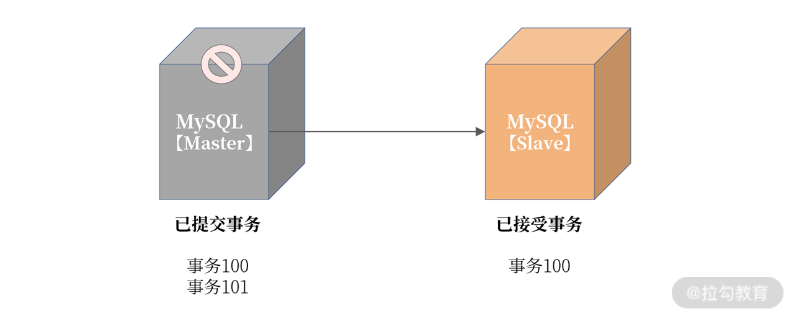
从图中可以看到，即使启用无损半同步复制，依然存在当发生主机宕机时，最后一组事务没有上传到从机的可能。图中宕机的主机已经提交事务到 101，但是从机只接收到事务 100。如果这个时候 Failover，从机提升为主机，那么这时：
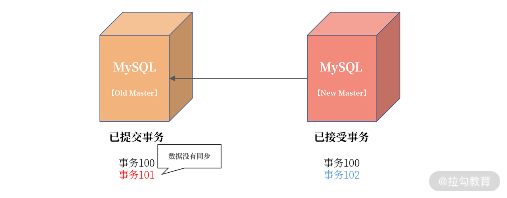
可以看到当主从切换完成后，新的 MySQL 开始写入新的事务102，如果这时老的主服务器从宕机中恢复，则这时事务 101 不会同步到新主服务器，导致主从数据不一致。
但设置 AFTER_SYNC 无损半同步的好处是，虽然事务 101 在原主机已经提交，但是在从机没有收到并返回 ACK 前，这个事务对用户是不可见的，所以，用户感受不到事务已经提交了。
所以，在做高可用设计时，当老主机恢复时，需要做一次额外的处理，把事务101给“回滚”（具体怎么实现我们将在 20 讲，高可用套件中具体分析）。
这里我们只要记住，设计数据强一致的高可用方案时，要选择无损半同步复制，另外在发生宕机FAILOVER 后，若老主机恢复，还需要额外处理老主机上已提交但还未发送到从机的数据。
容灾级别
高可用用于处理各种宕机问题，而宕机可以分成服务器宕机、机房级宕机，甚至是一个城市发生宕机。
- 机房级宕机： 机房光纤不通/被挖断，机房整体掉电（双路备用电源也不可用）；
- 城市级宕机： 一般指整个城市的进出口网络，骨干交换机发生的故障（这种情况发生的概率很小）。
如果综合考虑的话，高可用就成了一种容灾处理机制，对应的高可用架构的评判标准就上升了。
- 机房内容灾： 机房内某台数据库服务器不可用，切换到同机房的数据库实例，保障业务连续性；
- 同城容灾： 机房不可用，切换到同城机房的数据库实例，保障业务连续性；
- 跨城容灾： 单个城市机房都不可用，切换到跨城机房的数据库实例，保障业务连续性。
前面我们谈到的高可用设计，都只是机房内的容灾。也就是说，我们的主服务器和从服务器都在一个机房内，现在我们来看一下同城和跨城的容灾设计（我提醒一下，不论是机房内容灾、同城容灾，还是跨城容灾，都是基于 MySQL 的无损半同步复制，只是物理部署方式不同，解决不同的问题）。
对于同城容灾，我看到很多这样的设计：
这种设计没有考虑到机房网络的抖动。如果机房 1 和机房 2 之间的网络发生抖动，那么因为事务提交需要机房 2 中的从服务器接收日志，所以会出现事务提交被 hang 住的问题。
而机房网络抖动非常常见，所以核心业务同城容灾务要采用三园区的架构，如下图所示：
该架构称为“三园区的架构”，如果三个机房都在一个城市，则称为“ 一地三中心”，如果在相邻两个城市，那么就叫“两地三中心”。但这种同城/近城容灾，要求机房网络之间的延迟不超过 5ms。
在三园区架构中，一份数据被存放在了 3 个机房，机房之间根据半同步复制。这里将 MySQL 的半同步复制参数 rpl_semi_sync_master_wait_for_slave_count 设置为 1，表示只要有 1 个半同步备机接收到日志，主服务器上的事务就可以提交。
这样的设计，保证除主机房外，数据在其他机房至少一份完整的数据。
另外，即便机房 1 与机房 2 发生网络抖动，因为机房 1 与机房 3 之间的网络很好，不会影响事务在主服务器上的提交。如果机房 1 的出口交换机或光纤发生故障，那么这时高可用套件会 FAILOVER 到机房 2 或机房 3，因为至少有一份数据是完整的。
机房 2、机房 3 的数据用于保障数据一致性，但是如果要实现读写分离，或备份，还需要引入异步复制的备机节点。所以整体架构调整为：

从图中可以看到，我们加入两个异步复制的节点，用于业务实现读写分离，另外再从机房 3 的备机中，引入一个异步复制的延迟备机，用于做数据误删除操作的恢复。
当设计成类似上述的架构时，你才能认为自己的同城容灾架构是合格的！
另一个重要的点：因为机房 1 中的主服务器要向四个从服务器发送日志，这时网卡有成为瓶颈的可能，所以请务必配置万兆网卡。
在明白三园区架构后，要实现跨城容灾也就非常简单了， 只要把三个机房放在不同城市就行。但这样的设计，当主服务器发生宕机时，数据库就会切到跨城，而跨城之间的网络延迟超过了25 ms。所以，跨城容灾一般设计成“三地五中心”的架构，如下图所示：
在上图中：机房 1、机房 2 在城市 1 中；机房 3、机房 4 在城市 2 中；机房 5 在城市 3 中，三个城市之间的距离超过 200 公里，延迟超过 25ms。
由于有五个机房，所以 ACK 设置为 2，保证至少一份数据在两个机房有数据。这样当发生城市级故障，则城市 2 或城市 3 中，至少有一份完整的数据。
在真实的互联网业务场景中，“三地五中心”应用并不像“三园区”那样普遍。这是因为 25ms的延迟对业务的影响非常大，一般这种架构应用于读多写少的场景，比如用户中心。
另外，真实的互联网业务场景中，实现跨城容灾，一般基于同城容灾架构，然后再由业务层来保障跨城的数据一致性。
兜底策略：数据核对
到目前为止，我们的高可用是基于 MySQL 的复制技术。但你有没有想过这样几个问题：
- 万一数据库的复制有 Bug 呢？导致最终的数据在逻辑上不一致呢？
- 主从的数据一定一致吗？你如何判断一定一致呢？
所以，除了高可用的容灾架构设计，我们还要做一层兜底服务，用于判断数据的一致性。这里要引入数据核对，用来解决以下两方面的问题。
- 数据在业务逻辑上一致： 这个保障业务是对的；
- 主从服务器之间的数据一致： 这个保障从服务器的数据是安全的、可切的。
业务逻辑核对由业务的同学负责编写， 从整个业务逻辑调度看账平不平。例如“今天库存的消耗”是否等于“订单明细表中的总和”，“在途快递” + “已收快递”是否等于“已下快递总和”。总之，这是个业务逻辑，用于对账。
主从服务器之间的核对，是由数据库团队负责的。 需要额外写一个主从核对服务，用于保障主从数据的一致性。这个核对不依赖复制本身，也是一种逻辑核对。思路是：将最近一段时间内主服务器上变更过的记录与从服务器核对，从逻辑上验证是否一致。其实现如图所示：
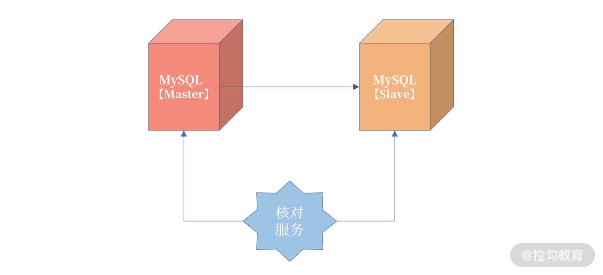
那么现在的难题是：如何判断最近一段时间内主服务器上变更过的记录？这里有两种思路：
- 表结构设计规范中，有讲过每张表有一个 last_modify_date，用于记录每条记录的最后修改时间，按照这个条件过滤就能查出最近更新的记录，然后每条记录比较即可。
- 核对服务扫描最近的二进制日志，筛选出最近更新过记录的表和主键，然后核对数据。这种的实现难度会更大一些，但是不要求在数据库上进行查询。
如果在核对过程中，记录又在主上发生了变化，但是还没有同步到从机，我们可以加入复核逻辑，按理来说多复核几次，主从数据应该就一致了。如果复核多次不一致，那么大概率，主从数据就已经是不一致的了。
核对服务的逻辑比较简单，但是要实现线上业务的数据核对，开发上还是有一些挑战，但这不就是我们 DBA 的价值所在吗？
总结
今天我们学习了金融级高可用的架构设计，内容非常干货，建议你反复阅读。其中涉及的内容在原理上并不复杂，但在实现细节上需要不断打磨，欢迎你在后续的架构设计过程中与我交流。总结来说：
- 核心业务复制务必设置为无损半同步复制；
- 同城容灾使用三园区架构，一地三中心，或者两地三中心，机房见网络延迟不超过 5ms；
- 跨城容灾使用“三地五中心”，跨城机房距离超过 200KM，延迟超过 25ms；
- 跨城容灾架构由于网络耗时高，因此一般仅用于读多写少的业务，例如用户中心；
- 除了复制进行数据同步外，还需要额外的核对程序进行逻辑核对；
- 数据库层的逻辑核对，可以使用 last_modify_date 字段，取出最近修改的记录。
19 高可用套件：选择这么多，你该如何选？
在 17、18 讲中，我们已经学习了 MySQL 数据库的高可用解决方案，并且学习了怎么根据金融业务的要求，通过无损半同步复制的方式进行三园区的同城容灾设计，以及三地务中心的跨城容灾设计。
但是当数据库发生宕机时，MySQL 的主从复制并不会自动地切换，这需要高可用套件对数据库主从进行管理。
这一讲，我们就来学习 MySQL 常用的高可用套件，希望你在学完今天的内容之后，能够理解高可用套件的实现原理，将高可用套件用于自己的生产环境。
高可用套件
MySQL 的高可用套件用于负责数据库的 Failover 操作，也就是当数据库发生宕机时，MySQL 可以剔除原有主机，选出新的主机，然后对外提供服务，保证业务的连续性。
可以看到，MySQL 复制是高可用的技术基础，用于将数据实时同步到从机。高可用套件是MySQL 高可用实现的解决方案，负责切换新主机。
为了不让业务感知到数据库的宕机切换，这里要用到 VIP（Virtual IP）技术。其中，VIP 不是真实的物理 IP，而是可以随意绑定在任何一台服务器上。
业务访问数据库，不是服务器上与网卡绑定的物理 IP，而是这台服务器上的 VIP。当数据库服务器发生宕机时，高可用套件会把 VIP 插拔到新的服务器上。数据库 Failover后，业务依旧访问的还是 VIP，所以使用 VIP 可以做到对业务透明。
下面这张图显示了业务通过 VIP 进行数据库的访问：

从上图可以看到，MySQL 的主服务器的 IP 地址是 192.168.1.10，两个从服务器的 IP 地址分别为 192.168.1.20、192.168.1.30。
上层服务访问数据库并没有直接通过物理 IP 192.168.1.10，而是访问 VIP，地址为192.168.1.100。这时，如果 MySQL 数据库主服务器发生宕机，会进行如下的处理：
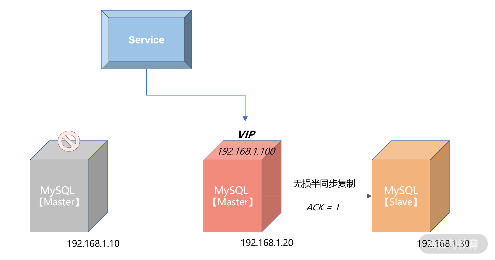
我们可以看到，当发生 Failover 后，由于上层服务访问的是 VIP 192.168.1.100，所以切换对服务来说是透明的，只是在切换过程中，服务会收到连接数据库失败的提示。但是通过重试机制，当下层数据库完成切换后，服务就可以继续使用了。所以，上层服务一定要做好错误重试的逻辑，否则就算启用 VIP，也无法实现透明的切换。
但是 VIP 也是有局限性的，仅限于同机房同网段的 IP 设定。如果是我们之前设计的三园区同城跨机房容灾架构，VIP 就不可用了。这时就要用名字服务，常见的名字服务就是 DNS（Domain Name Service），如下所示：
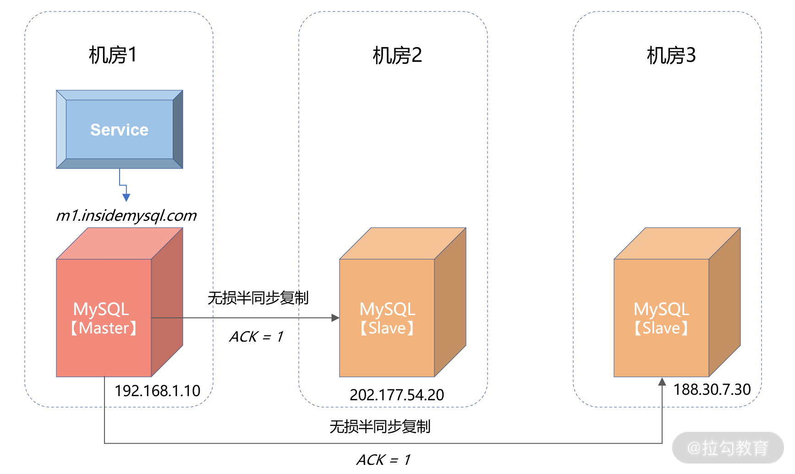
从上图可以看到，这里将域名 m1.insidemysql.com 对应的 IP 指向为了 192.168.1.10，上层业务通过域名进行访问。当发生宕机，进行机房级切换后，结果变为：

可以看到，当发生 Failover 后，高可用套件会把域名指向为新的 MySQL 主服务器，IP 地址为202.177.54.20，这样也实现了对于上层服务的透明性。
虽然使用域名或其他名字服务可以解决跨机房的切换问题，但是引入了新的组件。新组件的高可用的问题也需要特别注意。在架构设计时，请咨询公司提供名字服务的小组，和他们一起设计高可用的容灾架构。
了解了上述的高可用透明切换机制，我们继续看一下业界 MySQL 常见的几款高可用套件。
MHA
MHA(Master High Availability)是一款开源的 MySQL 高可用程序，它为 MySQL 数据库主从复制架构提供了 automating master failover 的功能。
MHA 是由业界大名鼎鼎的 Facebook 工程师 Yoshinorim 开发，开源地址为：https://github.com/yoshinorim/mha4mysql-manager它由两大组件所组成，MHA Manger 和 MHA Node。
MHA Manager 通常部署在一台服务器上，用来判断多个 MySQL 高可用组是否可用。当发现有主服务器发生宕机，就发起 failover 操作。MHA Manger 可以看作是 failover 的总控服务器。
而 MHA Node 部署在每台 MySQL 服务器上，MHA Manager 通过执行 Node 节点的脚本完成failover 切换操作。
MHA Manager 和 MHA Node 的通信是采用 ssh 的方式，也就是需要在生产环境中打通 MHA Manager 到所有 MySQL 节点的 ssh 策略，那么这里就存在潜在的安全风险。
另外，ssh 通信，效率也不是特别高。所以，MHA 比较适合用于规模不是特别大的公司，所有MySQL 数据库的服务器数量不超过 20 台。
 !
!
Orchestrator
Orchestrator 是另一款开源的 MySQL 高可用套件，除了支持 failover 的切换，还可通过Orchestrator 完成 MySQL 数据库的一些简单的复制管理操作。Orchestrator 的开源地址为：https://github.com/openark/orchestrator
你可以把 Orchestrator 当成 MHA 的升级版，而且提供了 HTTP 接口来进行相关数据库的操作，比起 MHA 需要每次登录 MHA Manager 服务器来说，方便很多。
下图显示了 Orchestrator 的高可用设计架构：
其基本实现原理与 MHA 是一样的，只是把元数据信息存储在了元数据库中，并且提供了HTTP 接口和命令的访问方式，使用上更为友好。
但是由于管控节点到下面的 MySQL 数据库的管理依然是 ssh 的方式，依然存在 MHA 一样的短板问题，总的来说，关于 Orchestrator 我想提醒你，依然只建议使用在较小规模的数据库集群。
数据库管理平台
当然了，虽然 MHA 和 Orchestrator 都可以完成 MySQL 高可用的 failover 操作，但是，在生产环境中如果需要管理成千乃至上万的数据库服务器，由于它们的通信仅采用 ssh 的方式，并不能满足生产上的安全性和性能的要求。
所以，几乎每家互联网公司都会自研一个数据库的管理平台，用于管理公司所有的数据库集群，以及数据库的容灾切换工作。
接下来，我想带你详细了解数据库管理平台的架构。下图显示了数据库管理平台大致的实现框架：
上图中的数据库管理平台是用户操作数据库的入口。对数据库的大部分操作，比如数据库的初始化、数据查询、数据备份等操作、后续都能在这个平台完成，不用登录数据库服务器，这样的好处是能大大提升数据库操作的效率。
数据库管理平台提供了 HTTP API 的方式，可用前后端分离的方式支持 Web、手机等多种访问方式。
元数据库用于存储管理 MySQL 数据库所有的节点信息，比如 IP 地址、端口、域名等。
数据库管理平台 Manager 用来实际控制下面的所有 MySQL 节点，Manager 和后端 MySQL 的通信通过 MySQL 服务器上部署的 agent 方式进行。两者通过 BP 协议以 grpc 的方式通信。这样解决了 ssh 的不安全性以及性能。
其中，agent 用来上报数据库各节点的状态给 Manager，管理节点 Manager 通过上报的信息判断数据库是否宕机，是否需要进行切换，切换到哪个节点。
上图的设计，能完成一个比较基本的数据库管理平台。另外，每个公司有自己的一些需求，也可以做到数据库管理平台中，比如安全要求、审计需求、工单系统等。
所以，有了数据库管理平台，数据库的高可用切换、数据库日常管理和访问，都可以由平台自动完成。有了数据库管理平台，才能真正实现数据库管理的无人驾驶。
总结
这一讲我们主要学习了 MySQL 数据库的高可用套件，我们知道 MySQL 复制是高可用实现的技术基础，但是需要高可用套件才能完成 Failover 的操作。MySQL 复制技术本身不能实现failover 的功能。
为了实现数据切换的透明性，可以采用 VIP 和名字服务机制。VIP 仅用于同机房同网段，名字服务器，比如域名可以跨机房进行切换。
MySQL 常用的高可用套件有 MHA 和 Orchestrator，它们都能完成 failover 的工作。但是由于管理节点与 MySQL 通信采用 ssh 协议，所以安全性不高，性能也很一般，一般建议用在不超过 20 台数据库节点的环境中。
对于要管理 MySQL 数量比较多的场景，推荐自研数据库平台，这样能结合每家公司的不同特性，设计出 MySQL 数据库的自动管理平台，这样才能解放 DBA 的生产力，投入业务的优化工作中去。
20 InnoDB Cluster：改变历史的新产品
前面几讲，我们围绕 MySQL 复制技术构建了读写分离方案、数据库高可用解决方案，以及数据库的管理平台。可以看到，我们所有的讨论都是基于 MySQL 的复制技术。
不过，MySQL 复制只是一种数据同步技术，如果要完成数据库的高可用解决方案，还要额外依赖外部的组件，比如 MHA、Orchestrator、数据库管理平台等。
另一方面，之前介绍的所有切换判断都是通过一组外部的心跳检查机制完成，这依赖于高可用套件自身的能力，如果高可用套件本身不可靠，就意味着高可用的不可靠性。比如，当数据库真的发生宕机时，数据库是否一定能切换成功呢？
最后，数据库复制技术的瓶颈在于：只能在一个节点完成写入，然后再将日志同步各个节点，这样单点写入会导致数据库性能无法进行扩展。那么能不能有一种技术，能实现 MySQL 多个节点写入，并且保证数据同步的能力呢？
有的，这就是我们今天将要学习的 InnoDB Cluster，它的底层是由 MySQL Group Replication（下面简称MGR）实现。为了让你用好 InnoDB Cluster，今天这一讲我会侧重讲解 MGR 技术、多节点写入、InnoDB Cluster 解决方案、希望你在学完之后能掌握这种新的MySQL 高可用解决方案。
MGR技术
MGR 是官方在 MySQL 5.7 版本推出的一种基于状态机的数据同步机制。与半同步插件类似，MGR 是通过插件的方式启用或禁用此功能。
MGR 复制结构图
注意，我们谈及 MGR，不要简单认为它是一种新的数据同步技术，而是应该把它理解为高可用解决方案，而且特别适合应用于对于数据一致性要求极高的金融级业务场景。
首先，MGR 之间的数据同步并没有采用复制技术，而是采用 GCS（Group Communication System）协议的日志同步技术。
GSC 本身是一种类似 Paxos 算法的协议，要求组中的大部分节点都接收到日志，事务才能提交。所以，MRG 是严格要求数据一致的，特别适合用于金融级的环境。由于是类 Paxos 算法，集群的节点要求数量是奇数个，这样才能满足大多数的要求。
有的同学可能会问了：之前介绍的无损半同步也能保证数据强一致的要求吗？
是的，虽然通过无损半同步复制也能保证主从数据的一致性，但通过 GCS 进行数据同步有着更好的性能：当启用 MGR 插件时，MySQL 会新开启一个端口用于数据的同步，而不是如复制一样使用MySQL 服务端口，这样会大大提升复制的效率。
其次，MGR 有两种模式：
- 单主（Single Primary）模式；
- 多主（Multi Primary）模式。
单主模式只有 1 个节点可以写入，多主模式能让每个节点都可以写入。而多个节点之间写入，如果存在变更同一行的冲突，MySQL 会自动回滚其中一个事务，自动保证数据在多个节点之间的完整性和一致性。
最后，在单主模式下，MGR 可以自动进行 Failover 切换，不用依赖外部的各种高可用套件，所有的事情都由数据库自己完成，比如最复杂的选主（Primary Election）逻辑，都是由 MGR 自己完成，用户不用部署额外的 Agent 等组件。
说了这么多 MGR 的优势，那么它有没有缺点或限制呢？ 当然有，主要是这样几点：
- 仅支持 InnoDB 表，并且每张表一定要有一个主键；
- 目前一个 MGR 集群，最多只支持 9 个节点；
- 有一个节点网络出现抖动或不稳定，会影响集群的性能。
第 1、2 点问题不大，因为目前用 MySQL 主流的就是使用 InnoDB 存储引擎，9 个节点也足够用了。
而第 3 点我想提醒你注意，和复制不一样的是，由于 MGR 使用的是 Paxos 协议，对于网络极其敏感，如果其中一个节点网络变慢，则会影响整个集群性能。而半同步复制，比如 ACK 为1，则 1 个节点网络出现问题，不影响整个集群的性能。所以，在决定使用 MGR 后，切记一定要严格保障网络的质量。
而多主模式是一种全新的数据同步模式，接下来我们看一看在使用多主模式时，该做哪些架构上的调整，从而充分发挥 MGR 多主的优势。
多主模式的注意事项
冲突检测
MGR 多主模式是近几年数据库领域最大的一种创新，而且目前来看，仅 MySQL 支持这种多写的 Share Nothing 架构。
多主模式要求每个事务在本节点提交时，还要去验证其他节点是否有同样的记录也正在被修改。如果有的话，其中一个事务要被回滚。
比如两个节点同时执行下面的 SQL 语句：
-- 节点1
UPDATE User set money = money - 100 WHERE id = 1;
-- 节点2
UPDATE User set money = money + 300 WHERE id = 1;
如果一开始用户的余额为 200，当节点 1 执行 SQL 后，用户余额变为 100，当节点 2 执行SQL，用户余额变味了 500，这样就导致了节点数据的不同。所以 MGR 多主模式会在事务提交时，进行行记录冲突检测，发现冲突，就会对事务进行回滚。
在上面的例子中，若节点 2 上的事务先提交，则节点 1 提交时会失败，事务会进行回滚。
所以，如果要发挥多主模式的优势，就要避免写入时有冲突。最好的做法是：每个节点写各自的数据库，比如节点 1 写 DB1，节点 2 写 DB2，节点 3 写 DB3，这样集群的写入性能就能线性提升了。
不过这要求我们在架构设计时，就做好这样的考虑，否则多主不一定能带来预期中的性能提升。
自增处理
在多主模式下，自增的逻辑发生了很大的变化。简单来说，自增不再连续自增。
因为，如果连续自增，这要求每次写入时要等待自增值在多个节点中的分配，这样性能会大幅下降，所以 MGR 多主模式下，我们可以通过设置自增起始值和步长来解决自增的性能问题。看下面的参数：
group_replication_auto_increment_increment = 7
参数 group_replication_auto_increment_increment 默认为 7，自增起始值就是 server-id。
假设 MGR 有 3 个节点 Node1、Node2、Node3，对应的 server-id 分别是 1、2、3, 如果这时多主插入自增的顺序为 Node1、Node1、Node2、Node3、Node1，则自增值产生的结果为：
可以看到，由于是多主模式，允许多个节点并发的产生自增值。所以自增的产生结果为1、8、16、17、22，自增值不一定是严格连续的，而仅仅是单调递增的，这与单实例 MySQL 有着很大的不同。
在 05 讲表结构设计中，我也强调过：尽量不要使用自增值做主键，在 MGR 存在问题，在后续分布式架构中也一样存在类似的自增问题。所以，对于核心业务表，还是使用有序 UUID 的方式更为可靠，性能也会更好。
总之，使用 MGR 技术后，所有高可用事情都由数据库自动完成。那么，业务该如何利用 MGR的能力，是否还需要 VIP、DNS 等机制保证业务的透明性呢？接下来，我们就来看一下，业务如何利用 MGR 的特性构建高可用解决方案。
InnoDB Cluster
MGR 是基于 Paxos 算法的数据同步机制，将数据库状态和日志通过 Paxos 算法同步到各个节点，但如果要实现一个完整的数据库高可用解决方案，就需要更高一层级的 InnoDB Cluster 完成。
一个 InnoDB Cluster 由三个组件组成：MGR 集群、MySQL Shell、MySQL Router。具体如下图所示：
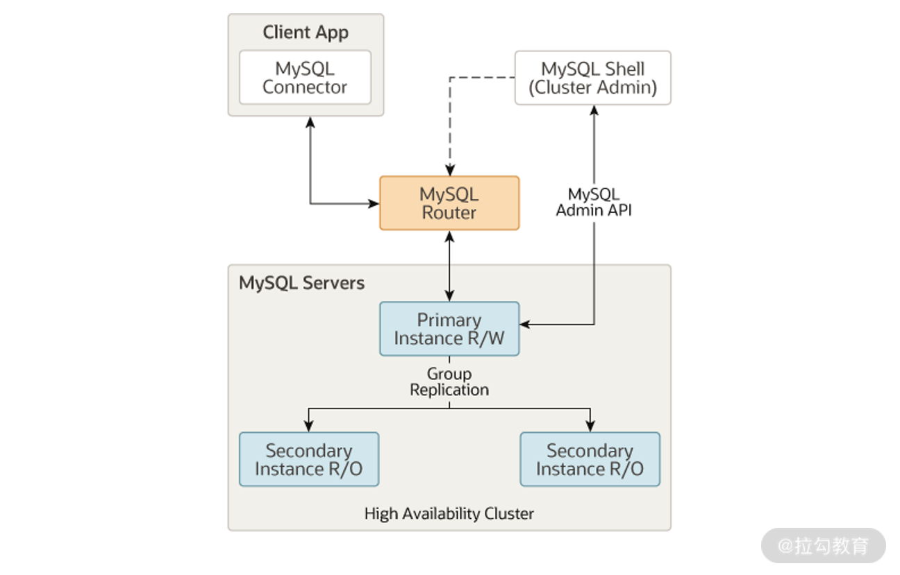
其中，MySQL Shell 用来管理 MGR 集群的创建、变更等操作。以后我们最好不要手动去管理 MGR 集群，而是通过 MySQL Shell 封装的各种接口完成 MGR 的各种操作。如：
mysql-js> cluster.status()
{
"clusterName": "myCluster",
"defaultReplicaSet": {
"name": "default",
"primary": "ic-2:3306",
"ssl": "REQUIRED",
"status": "OK",
"statusText": "Cluster is ONLINE and can tolerate up to ONE failure.",
"topology": {
"ic-1:3306": {
"address": "ic-1:3306",
"mode": "R/O",
"readReplicas": {},
"role": "HA",
"status": "ONLINE"
},
"ic-2:3306": {
"address": "ic-2:3306",
"mode": "R/W",
"readReplicas": {},
"role": "HA",
"status": "ONLINE"
},
"ic-3:3306": {
"address": "ic-3:3306",
"mode": "R/O",
"readReplicas": {},
"role": "HA",
"status": "ONLINE"
}
}
},
"groupInformationSourceMember": "mysql://root@localhost:6446"
}
MySQL Router 是一个轻量级的代理，用于业务访问 MGR 集群中的数据，当 MGR 发生切换时（这里指 Single Primary 模式），自动路由到新的 MGR 主节点，这样业务就不用感知下层MGR 数据的切换。
为了减少引入 MySQL Router 带来的性能影响，官方建议 MySQL Router 与客户端程序部署在一起，以一种类似 sidecar 的方式进行物理部署。这样能减少额外一次额外的网络开销，基本消除引入 MySQL Router 带来的影响。
所以，这里 MySQL Router 的定位是一种轻量级的路由转发，而不是一个数据库中间件，主要解决数据库切换后，做到对业务无感知。
总结
本讲我们了解了一种全新的 MySQL 高可用解决方案：InnoDB Cluster。这种高可用解决方案大概率会成为下一代金融场景的标准数据库高可用解决方案，InnoDB Cluster 底层是 MGR，通过类 Paoxs 算法进行数据同步，性能更好，且能保证数据的完整性。
结合管理工具 MySQL Shell，路由工具 MySQL Router 能构建一个完整的 MySQL 高可用解决方案。
对于金融用户来说，我非常推荐这种高可用解决方案。当然，我建议在最新的 MySQL 8.0 版本中使用 InnoDB Cluster。
21 数据库备份：备份文件也要检查！
在前几讲中，我们学习了高可用的架构设计。你要牢记：高可用只是用来保证业务的连续性，当发生灾难时，MySQL 数据库可以进行切换（比如 20 讲基于复制或者 InnoDB Cluster 技术的高可用解决方案）。
除了高可用设计外，对架构师来说，还要做好备份架构的设计。因为我们要防范意外情况的发生，比如黑客删除了数据库中所有的核心数据；又或者某个员工有意也罢、无意也好，删除了线上的数据。
这种删库跑路的情况并不少见，几乎每过一段时间就成为头条新闻，比如 2020 年发生的微盟删库事件：
2 月 23 日晚上，微盟核心员工贺某私自删除数据库，直接导致公司 SaaS 业务突然崩溃，基于微盟的商家小程序都处于宕机状态，300 万家商户生意基本停摆，生意快做不下去了。同时，微盟自身也蒙受巨大损失，短短几天公司市值就蒸发超过 20 亿港元。
我们可以看到，破坏性的删除数据不但会对业务连续性产生影响，也会让公司经济遭受不可评估的破坏。所以这一讲，我们就来学习 “如何设计一个完整的备份系统”。
数据库备份
复制技术（Replication）或 InnoDB Cluster 只负责业务的可用性，保障数据安全除了线上的副本数据库，我们还要构建一个完整的离线备份体系。这样即使线上数据库被全部破坏，用户也可以从离线备份恢复出数据。
所以，第一步要做好：线上数据库与离线备份系统的权限隔离。
也就是说，可以访问线上数据库权限的同学一定不能访问离线备份系统，反之亦然。否则，如果两边的数据都遭受破坏，依然无法恢复数据。
而对于 MySQL 数据库来说，数据库备份分为全量备份、增量备份。
全量备份
指备份当前时间点数据库中的所有数据，根据备份内容的不同，全量备份可以分为逻辑备份、物理备份两种方式。
- 逻辑备份
指备份数据库的逻辑内容，就是每张表中的内容通过 INSERT 语句的形式进行备份。
MySQL 官方提供的逻辑备份工具有 mysqldump 和 mysqlpump。通过 mysqldump 进行备份，可以使用以下 SQL 语句：
mysqldump -A --single-transaction > backup.sql
上面的命令就是通过 mysqldump 进行全量的逻辑备份：
- 参数 -A 表示备份所有数据库；
- 参数 --single-transaction 表示进行一致性的备份。
我特别强调，参数 --single-transaction 是必须加的参数，否则备份文件的内容不一致，这样的备份几乎没有意义。
如果你总忘记参数 --single-transaction，可以在 MySQL 的配置文件中加上如下提示：
# my.cnf
[mysqldump]
single-transaction
按上面配置，每当在服务器上运行命令时 mysqldump 就会自动加上参数 --single-transaction，你也就不会再忘记了。
在上面的命令中，最终的备份文件名为 backup.sql，打开这个文件，我们会看到类似的内容：
-- MySQL dump 10.13 Distrib 8.0.23, for Linux (x86_64)
--
-- Host: localhost Database:
-- ------------------------------------------------------
-- Server version 8.0.23
/*!40101 SET @OLD_CHARACTER_SET_CLIENT=@@CHARACTER_SET_CLIENT */;
/*!40101 SET @OLD_CHARACTER_SET_RESULTS=@@CHARACTER_SET_RESULTS */;
/*!40101 SET @OLD_COLLATION_CONNECTION=@@COLLATION_CONNECTION */;
/*!50503 SET NAMES utf8mb4 */;
/*!40103 SET @OLD_TIME_ZONE=@@TIME_ZONE */;
/*!40103 SET TIME_ZONE='+00:00' */;
/*!50606 SET @OLD_INNODB_STATS_AUTO_RECALC=@@INNODB_STATS_AUTO_RECALC */;
/*!50606 SET GLOBAL INNODB_STATS_AUTO_RECALC=OFF */;
/*!40014 SET @OLD_UNIQUE_CHECKS=@@UNIQUE_CHECKS, UNIQUE_CHECKS=0 */;
/*!40014 SET @OLD_FOREIGN_KEY_CHECKS=@@FOREIGN_KEY_CHECKS, FOREIGN_KEY_CHECKS=0 */;
/*!40101 SET @OLD_SQL_MODE=@@SQL_MODE, SQL_MODE='NO_AUTO_VALUE_ON_ZERO' */;
/*!40111 SET @OLD_SQL_NOTES=@@SQL_NOTES, SQL_NOTES=0 */;
--
-- Current Database: `mysql`
--
CREATE DATABASE /*!32312 IF NOT EXISTS*/ `mysql` /*!40100 DEFAULT CHARACTER SET utf8mb4 COLLATE utf8mb4_0900_ai_ci */ /*!80016 DEFAULT ENCRYPTION='N' */;
USE `mysql`;
...
可以看到，文件 backup.sql 本质就是一个文本文件，里面记录的就是一条条 SQL 语句，而这就是我们说的逻辑备份。要恢复逻辑备份非常简单，就是执行文件中的 SQL 语句，这时可以使用下面的 SQL：
mysql < backup.sql
虽然 mysqldump 简单易用，但因为它备份是单线程进行的，所以速度会比较慢，于是 MySQL 推出了 mysqlpump 工具。
命令 mysqlpump 的使用几乎与 mysqldump 一模一样，唯一不同的是它可以设置备份的线程数，如：
mysqlpump -A --single-transaction --default-parallelism=8 > backup.sql
Dump progress: 1/1 tables, 0/0 rows
Dump progress: 25/37 tables, 881632/42965650 rows
Dump progress: 25/37 tables, 1683132/42965650 rows
......
上面的命令显示了通过 mysqlpump 进行备份。参数 --default-parallelism 表示设置备份的并行线程数。此外，与 mysqldump 不同的是，mysqlpump 在备份过程中可以查看备份的进度。
不过在真正的线上生产环境中，我并不推荐你使用 mysqlpump， 因为当备份并发线程数超过 1 时，它不能构建一个一致性的备份。见 mysqlpump 的提示：
 另外，mysqlpump 的备份多线程是基于多个表的并行备份，如果数据库中存在一个超级大表，那么对于这个表的备份依然还是单线程的。那么有没有一种基于记录级别的并行备份，且支持一致性的逻辑备份工具呢？
另外，mysqlpump 的备份多线程是基于多个表的并行备份，如果数据库中存在一个超级大表，那么对于这个表的备份依然还是单线程的。那么有没有一种基于记录级别的并行备份，且支持一致性的逻辑备份工具呢？
有的，那就是开源的 mydumper 工具，地址：https://github.com/maxbube/mydumper。mydumper 的强大之处在于：
- 支持一致性的备份；
- 可以根据表中的记录进行分片，从而进行多线程的备份；
- 对于恢复操作，也可以是多线程的备份；
- 可以指定单个表进行多线程的恢复。
我们可以看到，mydumper 几乎是一个完美的逻辑备份工具，是构建备份系统的首选工具。我提供给你一个简单的 mydumper 的使用方法：
mydumper -o /bak -r 100000 --trx-consistency-only -t 8
上面的命令表示，将备份文件保存到目录 /bak 下，其中：
- 参数 -r 表示每张表导出 100000 条记录后保存到一张表；
- 参数 --trx-consistency-only 表示一致性备份；
- 参数 -t 表示 8 个线程并行备份。
可以看到，即便对于一张大表，也可以以 8 个线程，按照每次 10000 条记录的方式进行备份，这样大大提升了备份的性能。
- 物理备份
当然，逻辑备份虽然好，但是它所需要的时间比较长，因为本质上逻辑备份就是进行 INSERT ... SELECT ... 的操作。
而物理备份直接备份数据库的物理表空间文件和重做日志，不用通过逻辑的 SELECT 取出数据。所以物理备份的速度，通常是比逻辑备份快的，恢复速度也比较快。
但它不如 mydumper 的是，物理备份只能恢复整个实例的数据，而不能按指定表进行恢复。MySQL 8.0 的物理备份工具可以选择官方的 Clone Plugin。
Clone Plugin 是 MySQL 8.0.17 版本推出的物理备份工具插件，在安装完插件后，就可以对MySQL 进行物理备份了。而我们要使用 Clone Plugin 就要先安装 Clone Plugin 插件，推荐在配置文件中进行如下设置：
[mysqld]
plugin-load-add=mysql_clone.so
clone=FORCE_PLUS_PERMANENT
这时进行物理备份可以通过如下命令：
mysql> CLONE LOCAL DATA DIRECTORY = '/path/to/clone_dir';
可以看到，在 mysql 命令行下输入 clone 命令，就可以进行本地实例的 MySQL 物理备份了。
Clone Plugin 插件强大之处还在于其可以进行远程的物理备份，命令如下所示：
CLONE INSTANCE FROM 'user'@'host':port
IDENTIFIED BY 'password'
[DATA DIRECTORY [=] 'clone_dir']
[REQUIRE [NO] SSL];
从上面的命令我们可以看到，Clone Plugin 支持指定的用户名密码，备份远程的物理备份到当前服务器上，根据 Clone Plugin 可以非常容易地构建备份系统。
对于 MySQL 8.0 之前的版本，我们可以使用第三方开源工具 Xtrabackup，官方网址：https://github.com/percona/percona-xtrabackup。
不过，物理备份实现机制较逻辑备份复制很多，需要深入了解 MySQL 数据库内核的实现，我强烈建议使用 MySQL 官方的物理备份工具，开源第三方物理备份工具只作为一些场景的辅助手段。
增量备份
前面我们学习的逻辑备份、物理备份都是全量备份，也就是对整个数据库进行备份。然而，数据库中的数据不断变化，我们不可能每时每分对数据库进行增量的备份。
所以，我们需要通过“全量备份 + 增量备份”的方式，构建完整的备份策略。增量备份就是对日志文件进行备份，在 MySQL 数据库中就是二进制日志文件。
因为二进制日志保存了对数据库所有变更的修改，所以“全量备份 + 增量备份”，就可以实现基于时间点的恢复（point in time recovery），也就是“通过全量 + 增量备份”可以恢复到任意时间点。
全量备份时会记录这个备份对应的时间点位，一般是某个 GTID 位置，增量备份可以在这个点位后重放日志，这样就能实现基于时间点的恢复。
如果二进制日志存在一些删库的操作，可以跳过这些点，然后接着重放后续二进制日志，这样就能对极端删库场景进行灾难恢复了。
想要准实时地增量备份 MySQL 的二进制日志，我们可以使用下面的命令：
mysqlbinlog --read-from-remote-server --host=host_name --raw --stop-never binlog.000001
可以看到，增量备份就是使用之前了解的 mysqlbinlog，但这次额外加上了参数 --read-from-remote-server，表示可以从远程某个 MySQL 上拉取二进制日志，这个远程 MySQL 就是由参数 --host 指定。
参数 --raw 表示根据二进制的方式进行拉取，参数 --stop-never 表示永远不要停止，即一直拉取一直保存，参数 binlog.000001 表示从这个文件开始拉取。
MySQL 增量备份的本质是通过 mysqlbinlog 模拟一个 slave 从服务器，然后主服务器不断将二进制日志推送给从服务器，利用之前介绍的复制技术，实现数据库的增量备份。
增量备份的恢复，就是通过 mysqlbinlog 解析二进制日志，然后进行恢复，如：
mysqlbinlog binlog.000001 binlog.000002 | mysql -u root -p
备份策略
在掌握全量备份、增量备份的知识点后，我们就能构建自己的备份策略了。
首先，我们要设置全量备份的频率，因为全量备份比较大，所以建议设置 1 周 1 次全量备份，实时增量备份的频率。这样最坏的情况就是要恢复 7 天前的一个全备，然后通过 7 天的增量备份恢复。
对于备份文件，也需要进行备份。我们不能认为备份文件的存储介质不会损坏。所以，至少在 2 个机房的不同存储服务器上存储备份文件，即备份文件至少需要 2 个副本。至于备份文件的保存期限，取决于每个公司自己的要求（比如有的公司要求永久保存，有的公司要求保留至少近 3 个月的备份文件）。
所有的这些备份策略，都需要自己的备份系统进行调度，这个并没有什么特别好的开源项目，需要根据自己的业务需求，定制开发。
备份文件的检查
在我的眼中，备份系统非常关键，并不亚于线上的高可用系统。
在 18 讲中，我们讲到线上主从复制的高可用架构，还需要进行主从之间的数据核对，用来确保数据是真实一致的。
同样，对于备份文件，也需要进行校验，才能确保备份文件的正确的，当真的发生灾难时，可通过备份文件进行恢复。因此，备份系统还需要一个备份文件的校验功能。
备份文件校验的大致逻辑是恢复全部文件，接着通过增量备份进行恢复，然后将恢复的 MySQL实例连上线上的 MySQL 服务器作为从服务器，然后再次进行数据核对。
牢记，只有当核对是 OK 的，才能证明你的备份文件是安全的。所以备份文件同样要检查。
总结
今天我们学习了构建 MySQL 的备份策略，首先讲了 MySQL 数据库的全量备份逻辑备份、物理备份。接着学习了通过 mysqlbinlog 进行增量备份。通过全量备份和增量备份就能构建一个完整的备份策略。最后明确了要对备份文件进行检查，以此确保备份文件的安全性。
希望在学完这一讲后，你能将所学内容应用到你的生产环境，构建一个稳定、可靠，即便发生删库跑路的灾难事件，也能对数据进行恢复的备份系统。
22 分布式数据库架构：彻底理解什么叫分布式数据库
前面的三个模块里，我们学习了 MySQL 架构设计中最核心的内容，表结构设计、索引设计、高可用设计。相信通过前面的内容，你已经能很好地完成 MySQL 数据库的架构设计工作。
从这个模块开始，我们将进入架构设计的深水区，学习分布式数据库架构的设计。
我们都知道，现在互联网应用已经普及，数据量不断增大。对淘宝、美团、百度等互联网业务来说，传统单实例数据库很难支撑其性能和存储的要求，所以分布式架构得到了很大发展。
而开发同学、DBA 同学，一定要认识到数据库技术正在经历一场较大的变革，及早掌握好分布式架构设计，帮助公司从古老的单实例架构迁移到分布式架构，对自己在职场的竞争力来说，大有益处。
话不多说，我们直接进入分布式架构设计环节。这一讲先来看一看“什么是分布式数据库？”
分布式数据库概念
Wiki 官方对分布式数据库的定义为：
A distributed database is a database in which data is stored across different physical locations. It may be stored in multiple computers located in the same physical location (e.g. a data centre); or maybe dispersed over a network of interconnected computers.
从定义来看，分布式数据库是一种把数据分散存储在不同物理位置的数据库。
对比我们之前学习的数据库，数据都是存放在一个实例对应的物理存储上，而在分布式数据库中，数据将存放在不同的数据库实例上。
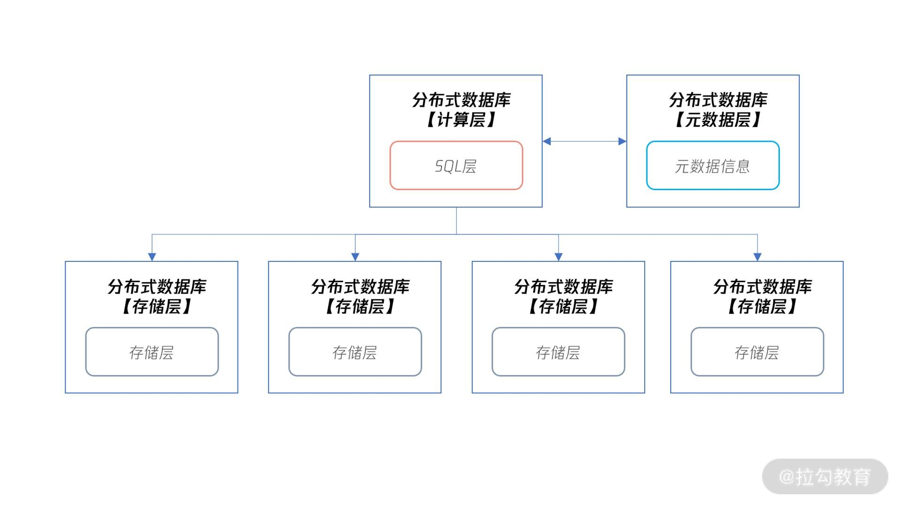
分布式数据库的架构
从图中我们可以看到，在分布式数据库下，分布式数据库本身分为计算层、元数据层和存储层：
- 计算层就是之前单机数据库中的 SQL 层，用来对数据访问进行权限检查、路由访问，以及对计算结果等操作。
- 元数据层记录了分布式数据库集群下有多少个存储节点，对应 IP、端口等元数据信息是多少。当分布式数据库的计算层启动时，会先访问元数据层，获取所有集群信息，才能正确进行 SQL 的解析和路由等工作。另外，因为元数据信息存放在元数据层，那么分布式数据库的计算层可以有多个，用于实现性能的扩展。
- 存储层用来存放数据，但存储层要和计算层在同一台服务器上，甚至不求在同一个进程中。
我们可以看到，分布式数据库的优势是把数据打散到不同的服务器上，这种横向扩展的 Scale Out 能力，能解决单机数据库的性能与存储瓶颈。
从理论上来看，分布式数据库的性能可以随着计算层和存储层的扩展，做到性能的线性提升。
从可用性的角度看，如果存储层发生宕机，那么只会影响 1/N 的数据，N 取决于数据被打散到多少台服务器上。所以，分布式数据库的可用性对比单机会有很大提升，单机数据库要实现99.999% 的可用性或许很难，但是分布式数据库就容易多了。
当然，分布式数据库也存在缺点：正因为数据被打散了，分布式数据库会引入很多新问题，比如自增实现、索引设计、分布式事务等（这些将在后面的内容中具体介绍）。
接下来，我们看一看分布式 MySQL 数据库的整体架构。
分布式MySQL架构
在学习分布式 MySQL 架构前，我们先看一下原先单机 MySQL 架构是怎样的。
 可以看到，原先客户端是通过 MySQL 通信协议访问 MySQL 数据库，MySQL 数据库会通过高可用技术做多副本，当发生宕机进行切换。
可以看到，原先客户端是通过 MySQL 通信协议访问 MySQL 数据库，MySQL 数据库会通过高可用技术做多副本，当发生宕机进行切换。
那么对于分布式 MySQL 数据库架构，其整体架构如下图所示：
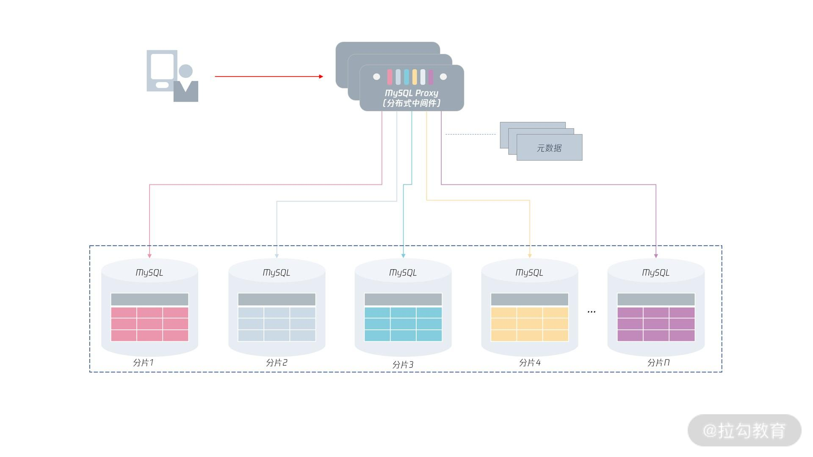
从上图可以看到，这时数据将打散存储在下方各个 MySQL 实例中，每份数据叫“分片（Shard）”。
在分布式 MySQL 架构下，客户端不再是访问 MySQL 数据库本身，而是访问一个分布式中间件。
这个分布式中间件的通信协议依然采用 MySQL 通信协议（因为原先客户端是如何访问的MySQL 的，现在就如何访问分布式中间件）。分布式中间件会根据元数据信息，自动将用户请求路由到下面的 MySQL 分片中，从而将存储存取到指定的节点。
另外，分布式 MySQL 数据库架构的每一层都要由高可用，保证分布式数据库架构的高可用性。
对于上层的分布式中间件，是可以平行扩展的：即用户可以访问多个分布式中间件，如果其中一个中间件发生宕机，那么直接剔除即可。
因为分布式中间件是无状态的，数据保存在元数据服务中，它的高可用设计比较容易。
对于元数据来说，虽然它的数据量不大，但数据非常关键，一旦宕机则可能导致中间件无法工作，所以，元数据要通过副本技术保障高可用。
最后，每个分片存储本身都有副本，通过我们之前学习的高可用技术，保证分片的可用性。也就是说，如果分片 1 的 MySQL 发生宕机，分片 1 的从服务器会接替原先的 MySQL 主服务器，继续提供服务。
但由于使用了分布式架构，那么即使分片 1 发生宕机，需要 60 秒的时间恢复，这段时间对于业务的访问来说，只影响了 1/N 的数据请求。
可以看到，分布式 MySQL 数据库架构实现了计算层与存储层的分离，每一层都可以进行 Scale Out 平行扩展，每一层又通过高可用技术，保证了计算层与存储层的连续性，大大提升了MySQL 数据库的性能和可靠性，为海量互联网业务服务打下了坚实的基础。
总结
今天这一讲，我们主要学习了分布式数据库的概念，了解了分布式数据库是将数据打散到不同节点上存储，从而提升性能与可靠性。另外，要实现分布式数据库，就要做到数据库层的计算层与存储层分离。
接着，我们又学习了分布式 MySQL 数据库的架构：分布式 MySQL 架构通过一个中间件路由层屏蔽了下层 MySQL 分片的信息。
由于分布式中间件通信采用 MySQL 通信协议，用户原先怎么使用 MySQL 数据库，那就怎么使用分布式中间件。对于开发来说，这些都是透明的，他们不用关心下层有多少个分片，所有的路由和计算工作，交友中间件层完成。
这一讲相对比较简单，是下面几讲的基础，我建议你反复阅读，好好理解分布式 MySQL 数据库架构。
23 分布式数据库表结构设计：如何正确地将数据分片？
前面 22 讲中，我们简单学习了分布式数据库的架构，知道各类分布式数据库都离不开计算层、存储层、元数据层这三层关系。
另外，很重要的一点是，知道分布式数据库是把数据打散存储在一个个分片中。在基于MySQL 的分布式数据库架构中，分片就存在于 MySQL 实例中。
今天这一讲，我们来学习分布式数据库中，一个非常重要的设计：正确地把数据分片，充分发挥分布式数据库架构的优势。
选出分片键
在对表中的数据进行分片时，首先要选出一个分片键（Shard Key），即用户可以通过这个字段进行数据的水平拆分。
对于我们之前使用的电商业务的订单表orders，其表结构如下所示：
CREATE TABLE `orders` (
`O_ORDERKEY` int NOT NULL,
`O_CUSTKEY` int NOT NULL,
`O_ORDERSTATUS` char(1) NOT NULL,
`O_TOTALPRICE` decimal(15,2) NOT NULL,
`O_ORDERDATE` date NOT NULL,
`O_ORDERPRIORITY` char(15) NOT NULL,
`O_CLERK` char(15) NOT NULL,
`O_SHIPPRIORITY` int NOT NULL,
`O_COMMENT` varchar(79) NOT NULL,
PRIMARY KEY (`O_ORDERKEY`),
KEY `idx_custkey_orderdate` (`O_CUSTKEY`,`O_ORDERDATE`),
KEY `ORDERS_FK1` (`O_CUSTKEY`),
KEY `idx_custkey_orderdate_totalprice` (`O_CUSTKEY`,`O_ORDERDATE`,`O_TOTALPRICE`),
KEY `idx_orderdate` (`O_ORDERDATE`),
KEY `idx_orderstatus` (`O_ORDERSTATUS`),
CONSTRAINT `orders_ibfk_1` FOREIGN KEY (`O_CUSTKEY`) REFERENCES `customer` (`C_CUSTKEY`)
) ENGINE=InnoDB
对于类似淘宝、京东、拼多多这样业务体量的应用来说，单实例 MySQL 数据库在性能和存储容量上肯定无法满足“双 11、618 ”大促的要求，所以要改造成分布式数据库架构。
而第一步就是要对表选出一个分片键，然后进行分布式架构的设计。
对于上面的表orders，可以选择的分片键有：o_orderkey、o_orderdate、也可以是o_custkey。在选出分片键后，就要选择分片的算法，比较常见的有 RANGE 和 HASH 算法。
比如，表 orders，选择分片键 o_orderdate，根据函数 YEAR 求出订单年份，然后根据RANGE 算法进行分片，这样就能设计出基于 RANGE 分片算法的分布式数据库架构：

从图中我们可以看到，采用 RANGE 算法进行分片后，表 orders 中，1992 年的订单数据存放在分片 1 中、1993 年的订单数据存放在分片 2 中、1994 年的订单数据存放在分片 3中，依次类推，如果要存放新年份的订单数据，追加新的分片即可。
不过，RANGE 分片算法在分布式数据库架构中，是一种非常糟糕的算法，因为对于分布式架构，通常希望能解决传统单实例数据库两个痛点：
- 性能可扩展，通过增加分片节点，性能可以线性提升；
- 存储容量可扩展，通过增加分片节点，解决单点存储容量的数据瓶颈。
那么对于订单表 orders 的 RANGE 分片算法来说，你会发现以上两点都无法实现，因为当年的数据依然存储在一个分片上（即热点还是存在于一个数据节点上）。
如果继续拆细呢？比如根据每天进行 RANGE 分片？这样的确会好一些，但是对“双 11、618”这样的大促来说，依然是单分片在工作，热点依然异常集中。
所以在分布式架构中，RANGE 分区算法是一种比较糟糕的算法。但它也有好处：可以方便数据在不同机器间进行迁移（migrate），比如要把分片 2 中 1992 年的数据迁移到分片 1，直接将表进行迁移就行。
而对海量并发的 OLTP 业务来说，一般推荐用 HASH 的分区算法。这样分片的每个节点都可以有实时的访问，每个节点负载都能相对平衡，从而实现性能和存储层的线性可扩展。
我们来看表 orders 根据 o_orderkey 进行 HASH 分片，分片算法如下：

在上述分片算法中，分片键是 o_orderkey，总的分片数量是 4（即把原来 1 份数据打散到 4 张表中），具体来讲，分片算法是将 o_orderkey 除以 4 进行取模操作。
最终，将表orders 根据 HASH 算法进行分布式设计后的结果如下图所示：

可以看到，对于订单号除以 4，余数为 0 的数据存放在分片 1 中，余数为 1 的数据存放在分片 2 中，余数为 2 的数据存放在分片 3 中，以此类推。
这种基于 HASH 算法的分片设计才能较好地应用于大型互联网业务，真正做到分布式数据库架构弹性可扩展的设计要求。
但是，表 orders 分区键选择 o_orderkey 是最好地选择吗？并不是。
我们看一下库中的其他表，如表 customer、lineitem，这三张表应该是经常一起使用的，比如查询用户最近的订单明细。
如果用 o_orderkey 作分区键，那么 lineitem 可以用 l_orderkey 作为分区键，但这时会发现表customer 并没有订单的相关信息，即无法使用订单作为分片键。
如果表 customer 选择另一个字段作为分片键，那么业务数据无法做到单元化，也就是对于表customer、orders、lineitem，分片数据在同一数据库实例上。
所以，如果要实现分片数据的单元化，最好的选择是把用户字段作为分区键，在表 customer 中就是将 c_custkey 作为分片键，表orders 中将 o_custkey 作为分片键，表 lineitem 中将 l_custkey 作为分片键：

这样做的好处是：根据用户维度进行查询时，可以在单个分片上完成所有的操作，不用涉及跨分片的访问，如下面的 SQL：
SELECT * FROM orders
INNER JOIN lineitem ON o_orderkey = l_orderkey
INNER JOIN customer ON o_custkey = c_custkey
WHERE o_custkey = 1
ORDER BY o_orderdate DESC LIMIT 10
所以，分布式数据库架构设计的原则是：选择一个适合的分片键和分片算法，把数据打散，并且业务的绝大部分查询都是根据分片键进行访问。
那为什么互联网业务这么适合进行分布式架构的设计呢？因为互联网业务大部分是 To C 业务，分片键就是用户的 ID，业务的大部分访问都是根据用户 ID 进行查询，比如：
- 查看某个用户下的微博/短视频；
- 查看某个用户的商品信息/购买记录；
- 查看某个用户自己的余额信息。
学完分片键的选择后，接着就是规划分片，也就我们经常提到的分库分表。
分库分表
说了这么久分片，分片到底是什么呢？其实，前面说的分片本质是一张张表，而不是数据库实例，只是每个分片是在 MySQL 数据库实例中，严格来说：
分片 = 实例 + 库 + 表 = ip@port:db_name:table_name
对于前面的表orders，假设根据 HASH 算法进行分片，那么可以进行如下的分库分表设计：
- 每个分片的表名库名都一样，如库 tpch，表名 orders；
- 每个分片的库名不一样，表名一样，如库名 tpch01、tpch02、tpch03、tpch04，表名orders；
- 每个分片的表名不一样，库名一样，如库名 tpch，表名分别为 orders01、orders02、orders03、orders04；
- 每个分片的库名不一样，表名也不一样，如分片 1 的表在库名 tpch01下，表名为oders01；分片 2 的表名在库名 tpch02，表名为 orders02；分片 3 的表名在库名tpch03，表名为 orders03；分片 3 的表名在库名 tpch04，表名为 orders04。
在这 4 种分库分表规则中，最推荐的是第 4 种，也是我们通常意义说的分库分表，这样做的好处有以下几点：
- 不同分片的数据可以在同一 MySQL 数据库实例上，便于做容量的规划和后期的扩展；
- 同一分片键的表都在同一库下，方便做整体数据的迁移和扩容。
如果根据第 4 种标准的分库分表规范，那么分布式 MySQL 数据库的架构可以是这样：

有没有发现，按上面这样的分布式设计，数据分片完成后，所有的库表依然是在同一个 MySQL实例上！！！
牢记，分布式数据库并不一定要求有很多个实例，最基本的要求是将数据进行打散分片。接着，用户可以根据自己的需要，进行扩缩容，以此实现数据库性能和容量的伸缩性。这才是分布式数据库真正的魅力所在。
对于上述的分布式数据库架构，一开始我们将 4 个分片数据存储在一个 MySQL 实例上，但是如果遇到一些大促活动，可以对其进行扩容，比如把 4 个分片扩容到 4 个MySQL实例上： 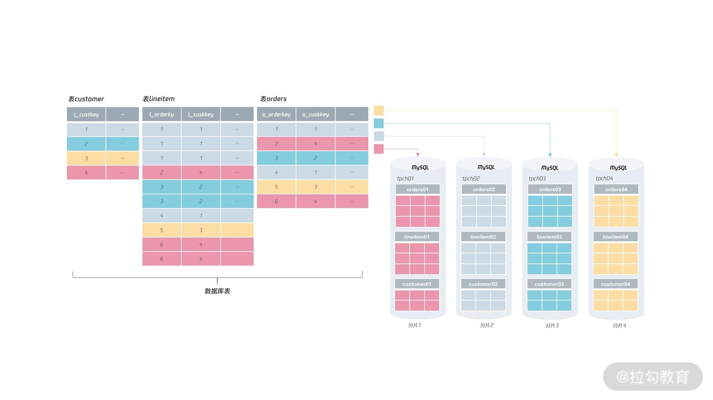
如果完成了大促活动，又可以对资源进行回收，将分片又都放到一台 MySQL 实例上，这就是对资源进行缩容。
总的来说，对分布式数据库进行扩缩容在互联网公司是一件常见的操作，比如对阿里来说，每年下半年 7 月开始，他们就要进行双 11 活动的容量评估，然后根据评估结果规划数据库的扩容。
一般来说，电商的双 11 活动后，还有双 12、新年、春节，所以一般会持续到过完年再对数据库进行缩容。接下来，我们来看看如何进行扩缩容。
扩缩容
在 HASH 分片的例子中，我们把数据分片到了 4 个节点，然而在生产环境中，为了方便之后的扩缩容操作，推荐一开始就把分片的数量设置为不少于 1000 个。
不用担心分片数量太多，因为分片 1 个还是 1000 个，管理方式都是一样的，但是 1000 个，意味着可以扩容到 1000 个实例上，对于一般业务来说，1000 个实例足够满足业务的需求了（BTW，网传阿里某核心业务的分布式数据库分片数量为 10000个）。
如果到了 1000 个分片依然无法满足业务的需求，这时能不能拆成 2000 个分片呢？从理论上来说是可以的，但是这意味着需要对一张表中的数据进行逻辑拆分，这个工作非常复杂，通常不推荐。
所以，一开始一定要设计足够多的分片。在实际工作中，我遇到很多次业务将分片数量从 32、64 拆成 256、512。每次这样的工作，都是扒一层皮，太不值得。所以，做好分布式数据库设计的工作有多重要！
那么扩容在 MySQL 数据库中如何操作呢？其实，本质是搭建一个复制架构，然后通过设置过滤复制，仅回放分片所在的数据库就行，这个数据库配置在从服务器上大致进行如下配置：
# 分片1从服务器配置
replicate_do_db ="tpch01"
所以在进行扩容时，首先根据下图的方式对扩容的分片进行过滤复制的配置：
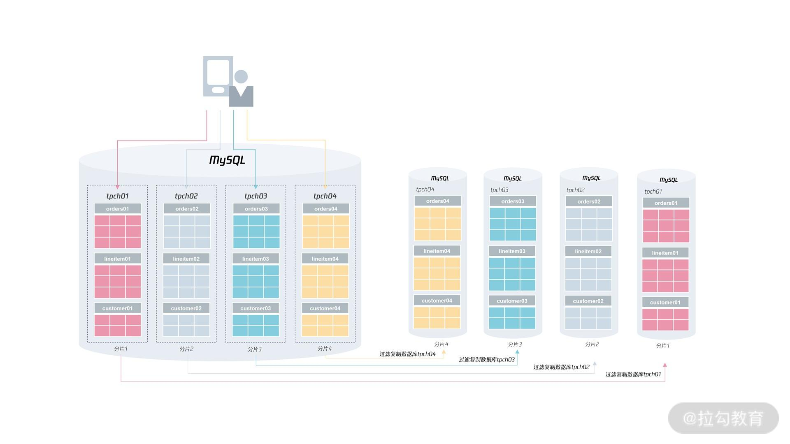
然后再找一个业务低峰期，将业务的请求转向新的分片，完成最终的扩容操作：

至于缩容操作，本质就是扩容操作的逆操作，这里就不再多说了。
总结
今天这一讲，我们学习了分布式数据库架构设计中的分片设计，也就是我们经常听说的分库分表设计。希望通过本讲，你能牢牢掌握以下内容：
- 分布式数据库数据分片要先选择一个或多个字段作为分片键；
- 分片键的要求是业务经常访问的字段，且业务之间的表大多能根据这个分片键进行单元化；
- 如果选不出分片键，业务就无法进行分布式数据库的改造；
- 选择完分片键后，就要选择分片算法，通常是 RANGE 或 HASH 算法；
- 海量 OLTP 业务推荐使用 HASH 算法，强烈不推荐使用 RANGE 算法；
- 分片键和分片算法选择完后，就要进行分库分表设计，推荐不同库名表名的设计，这样能方便后续对分片数据进行扩缩容；
- 实际进行扩容时，可以使用过滤复制，仅复制需要的分片数据。
今天的内容非常非常干货，希望你能反复阅读，掌握分布式数据库架构设计中最为基础和重要的知识点，我们下一讲见。
24 分布式数据库索引设计：二级索引、全局索引的最佳设计实践
前面两讲，我们学习了 MySQL 分布式数据库架构的内容，相信现在你清楚地知道了分布式数据库的整体架构，以及数据如何进行分片。
结合第一模块的“表结构设计”，基本上你已经能完成分布式数据库架构下，表结构的设计工作。
而在分布式数据库架构下，索引的设计也需要做调整，否则无法充分发挥分布式架构线性可扩展的优势。所以这一讲，我们就来学习“在分布式数据库架构下，如何正确的设计索引？”。
主键选择
对主键来说，要保证在所有分片中都唯一，它本质上就是一个全局唯一的索引。如果用大部分同学喜欢的自增作为主键，就会发现存在很大的问题。
因为自增并不能在插入前就获得值，而是要通过填 NULL 值，然后再通过函数 last_insert_id()获得自增的值。所以，如果在每个分片上通过自增去实现主键，可能会出现同样的自增值存在于不同的分片上。
比如，对于电商的订单表 orders，其表结构如下（分片键是o_custkey，表的主键是o_orderkey）：
CREATE TABLE `orders` (
`O_ORDERKEY` int NOT NULL auto_increment,
`O_CUSTKEY` int NOT NULL,
`O_ORDERSTATUS` char(1) NOT NULL,
`O_TOTALPRICE` decimal(15,2) NOT NULL,
`O_ORDERDATE` date NOT NULL,
`O_ORDERPRIORITY` char(15) NOT NULL,
`O_CLERK` char(15) NOT NULL,
`O_SHIPPRIORITY` int NOT NULL,
`O_COMMENT` varchar(79) NOT NULL,
PRIMARY KEY (`O_ORDERKEY`),
KEY (`O_CUSTKEY`)
......
) ENGINE=InnoDB
如果把 o_orderkey 设计成上图所示的自增，那么很可能 o_orderkey 同为 1 的记录在不同的分片出现，如下图所示：
所以，在分布式数据库架构下，尽量不要用自增作为表的主键，这也是我们在第一模块“表结构设计”中强调过的：自增性能很差、安全性不高、不适用于分布式架构。
讲到这儿，我们已经说明白了“自增主键”的所有问题，那么该如何设计主键呢？依然还是用全局唯一的键作为主键，比如 MySQL 自动生成的有序 UUID；业务生成的全局唯一键（比如发号器）；或者是开源的 UUID 生成算法，比如雪花算法（但是存在时间回溯的问题）。
总之，用有序的全局唯一替代自增，是这个时代数据库主键的主流设计标准，如果你还停留在用自增做主键，或许代表你已经落后于时代发展了。
索引设计
通过分片键可以把 SQL 查询路由到指定的分片，但是在现实的生产环境中，业务还要通过其他的索引访问表。
还是以前面的表 orders 为例，如果业务还要根据 o_orderkey 字段进行查询，比如查询订单 ID 为 1 的订单详情：
SELECT * FROM orders WHERE o_orderkey = 1
我们可以看到，由于分片规则不是分片键，所以需要查询 4 个分片才能得到最终的结果，如果下面有 1000 个分片，那么就需要执行 1000 次这样的 SQL，这时性能就比较差了。
但是，我们知道 o_orderkey 是主键，应该只有一条返回记录，也就是说，o_orderkey 只存在于一个分片中。这时，可以有以下两种设计：
- 同一份数据，表 orders 根据 o_orderkey 为分片键，再做一个分库分表的实现；
- 在索引中额外添加分片键的信息。
这两种设计的本质都是通过冗余实现空间换时间的效果，否则就需要扫描所有的分片，当分片数据非常多，效率就会变得极差。
而第一种做法通过对表进行冗余，对于 o_orderkey 的查询，只需要在 o_orderkey = 1 的分片中直接查询就行，效率最高，但是设计的缺点又在于冗余数据量太大。
所以，改进的做法之一是实现一个索引表，表中只包含 o_orderkey 和分片键 o_custkey，如：
CREATE TABLE idx_orderkey_custkey （
o_orderkey INT
o_custkey INT,
PRIMARY KEY (o_orderkey)
)
如果这张索引表很大，也可以将其分库分表，但是它的分片键是 o_orderkey，如果这时再根据字段 o_orderkey 进行查询，可以进行类似二级索引的回表实现：先通过查询索引表得到记录 o_orderkey = 1 对应的分片键 o_custkey 的值，接着再根据 o_custkey 进行查询，最终定位到想要的数据，如：
SELECT * FROM orders WHERE o_orderkey = 1
=>
# step 1
SELECT o_custkey FROM idx_orderkey_custkey
WHERE o_orderkey = 1
# step 2
SELECT * FROM orders
WHERE o_custkey = ? AND o_orderkey = 1
这个例子是将一条 SQL 语句拆分成 2 条 SQL 语句，但是拆分后的 2 条 SQL 都可以通过分片键进行查询，这样能保证只需要在单个分片中完成查询操作。不论有多少个分片，也只需要查询 2个分片的信息，这样 SQL 的查询性能可以得到极大的提升。
通过索引表的方式，虽然存储上较冗余全表容量小了很多，但是要根据另一个分片键进行数据的存储，依然显得不够优雅。
因此，最优的设计，不是创建一个索引表，而是将分片键的信息保存在想要查询的列中，这样通过查询的列就能直接知道所在的分片信息。
如果我们将订单表 orders 的主键设计为一个字符串，这个字符串中最后一部分包含分片键的信息，如：
o_orderkey = string（o_orderkey + o_custkey）
那么这时如果根据 o_orderkey 进行查询：
SELECT * FROM Orders
WHERE o_orderkey = '1000-1';
由于字段 o_orderkey 的设计中直接包含了分片键信息，所以我们可以直接知道这个订单在分片1 中，直接查询分片 1 就行。
同样地，在插入时，由于可以知道插入时 o_custkey 对应的值，所以只要在业务层做一次字符的拼接，然后再插入数据库就行了。
这样的实现方式较冗余表和索引表的设计来说，效率更高，查询可以提前知道数据对应的分片信息，只需 1 次查询就能获取想要的结果。
这样实现的缺点是，主键值会变大一些，存储也会相应变大。但正如我们 05 讲说的，只要主键值是有序的，插入的性能就不会变差。而通过在主键值中保存分片信息，却可以大大提升后续的查询效率，这样空间换时间的设计，总体上看是非常值得的。
当然，这里我们谈的设计都是针对于唯一索引的设计，如果是非唯一的二级索引查询，那么非常可惜，依然需要扫描所有的分片才能得到最终的结果，如：
SELECT * FROM Orders
WHERE o_orderate >= ? o_orderdate < ?
因此，再次提醒你，分布式数据库架构设计的要求是业务的绝大部分请求能够根据分片键定位到 1 个分片上。
如果业务大部分请求都需要扫描所有分片信息才能获得最终结果，那么就不适合进行分布式架构的改造或设计。
最后，我们再来回顾下淘宝用户订单表的设计：

上图是我的淘宝订单信息，可以看到，订单号的最后 6 位都是 308113，所以可以大概率推测出：
- 淘宝订单表的分片键是用户 ID；
- 淘宝订单表，订单表的主键包含用户 ID，也就是分片信息。这样通过订单号进行查询，可以获得分片信息，从而查询 1 个分片就能得到最终的结果。
全局表
在分布式数据库中，有时会有一些无法提供分片键的表，但这些表又非常小，一般用于保存一些全局信息，平时更新也较少，绝大多数场景仅用于查询操作。
例如 tpch 库中的表 nation，用于存储国家信息，但是在我们前面的 SQL 关联查询中，又经常会使用到这张表，对于这种全局表，可以在每个分片中存储，这样就不用跨分片地进行查询了。如下面的设计：

唯一索引
最后我们来谈谈唯一索引的设计，与主键一样，如果只是通过数据库表本身唯一约束创建的索引，则无法保证在所有分片中都是唯一的。
所以，在分布式数据库中，唯一索引一样要通过类似主键的 UUID 的机制实现，用全局唯一去替代局部唯一，但实际上，即便是单机的 MySQL 数据库架构，我们也推荐使用全局唯一的设计。因为你不知道，什么时候，你的业务就会升级到全局唯一的要求了。
总结
今天我们介绍了非常重要的分布式数据库索引设计，内容非常干货，是分布式架构设计的重中之重，期望各位同学反复阅读，抓住本讲的重点，总结来说：
- 分布式数据库主键设计使用有序 UUID，全局唯一；
- 分布式数据库唯一索引设计使用 UUID 的全局唯一设计，避免局部索引导致的唯一问题；
- 分布式数据库唯一索引若不是分片键，则可以在设计时保存分片信息，这样查询直接路由到一个分片即可；
- 对于分布式数据库中的全局表，可以采用冗余机制，在每个分片上进行保存。这样能避免查询时跨分片的查询。
25 分布式数据库架构选型：分库分表 or 中间件 ？
前面几讲我们学习了分布式数据库的分片设计、表结构设计、索引设计等，相信你已经有能力构建一个分布式数据库系统了。
但现在数据分好了，索引也设计好了，但是如果访问这些数据和索引呢？这就是我们这一讲要讨论的话题。
访问分布式数据库有两种模式：
- 业务直接根据分库分表访问 MySQL 数据库节点；
- 根据中间件访问。
我们先来看一看业务直接访问分布式数据库的场景。
分库分表直接访问
在设计分片时，我们已经明确了每张表的分片键信息，所以业务或服务可以直接根据分片键对应的数据库信息，直接访问底层的 MySQL 数据节点，比如在代码里可以做类似的处理：
void InsertOrders(String orderKey, int userKey...) {
int shard_id = userKey % 4;
if (shard_id == 0) {
conn = MySQLConncetion('shard1',...);
conn.query(...);
} else if (shard_id == 1) {
conn = MySQLConncetion('shard2',...);
conn.query(...);
} else if (shard_id == 2) {
conn = MySQLConncetion('shard3',...);
conn.query(...);
} else if (shard_id == 3) {
conn = MySQLConncetion('shard4',...);
conn.query(...);
}
}
从这段代码中我们可以看到，在业务代码中会嵌入分库分表的路由逻辑，在业务层计算出对应分片的信息，然后访问数据库：
- 这种处理方式的好处是与单实例数据库没有太大的不同，只是多了一次计算分片的操作，没有额外的开销，性能非常好（我听说支付宝的分布式数据库为了最求极致的性能，用的就是直接访问分片的方式）。
- 这种处理逻辑的缺点是业务需要知道分片信息，感知分片的变化。对于上面的例子，如果分片 shard1 发生变化，又或者进行了扩容，业务就需要跟着修改。
为了解决这个缺点，比较好的处理方式是使用名字服务，而不要直接通过 IP 访问分片。这样当分片发生切换，又或者扩容缩容时，业务也不需要进行很大的改动。
又因为业务比较多，需要访问分布式数据库分片逻辑的地方也比较多。所以，可以把分片信息存储在缓存中，当业务启动时，自动加载分片信息。比如，在 Memcached 或 Redis 中保存如下的分片信息，key 可以是分库分表的表名，value通过 JSON 或字典的方式存放分片信息：
{
'key': 'orders',
'shard_info' : {
'shard_key' : 'o_custkey',
'shard_count' : 4，
'shard_host' : ['shard1.xxx.com','shard2.xxx.com','...']，
‘shard_table' : ['tpch00/orders01','tpch01/orders02','...'],
}
}
如果要进行跨分片的访问，则需要业务自己处理相关逻辑。不过我们前面已经说过，分布式数据库设计要求单元化，绝大部分操作需要在一个分片中完成。如果不能，那么可能都不推荐分布数据库的改造。
总之，分库分表的直接访问方式，要求业务控制一切有关分布式数据库的操作，需要明确每个分片的具体信息，做好全流程的把控。
使用中间件技术
另一种比较流行的分布式数据库访问方式是通过分布式数据库中间件。数据库中间件本身模拟成一个 MySQL 数据库，通信协议也都遵循 MySQL 协议：业务之前怎么访问MySQL数据库的，就如何访问MySQL分布式数据库中间件。
这样做的优点是：业务不用关注分布式数据库中的分片信息，把它默认为一个单机数据库使用就好了。这种模式也是大部分同学认为分布式数据库该有的样子，如下面的图：
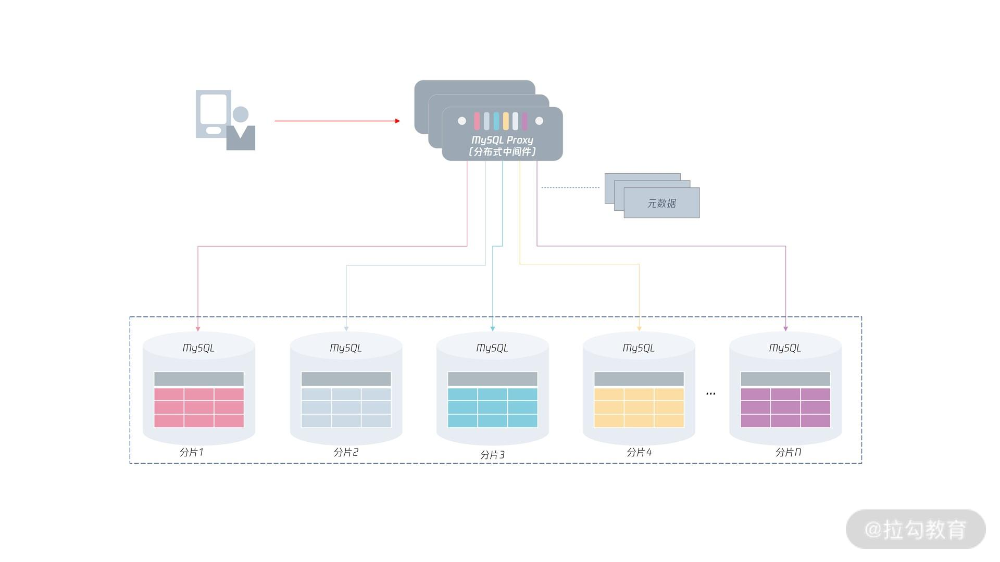
可以看到，通过分布式 MySQL 中间件，用户只需要访问中间件就行，下面的数据路由、分布式事务的实现等操作全部交由中间件完成。所以，分布式数据库中间件变成一个非常关键的核心组件。
业界比较知名的 MySQL 分布式数据库中间件产品有：ShardingShpere、DBLE、TDSQL 等。
ShardingSphere于 2020 年 4 月 16 日成为 Apache 软件基金会的顶级项目、社区熟度、功能支持较多，特别是对于分布式事务的支持，有多种选择（ShardingSphere 官网地址）。
DBLE 是由知名 MySQL 服务商爱可生公司开源的 MySQL 中间件产品，已用于四大行核心业务，完美支撑传统银行去 IOE，转型分布式架构的探索。除了中间件技术外，爱可生公司还有很多关于 MySQL 数据库、分布式数据库设计等方面的综合经验。
TDSQL MySQL 版（TDSQL for MySQL）是腾讯打造的一款分布式数据库产品，具备强一致高可用、全球部署架构、分布式水平扩展、高性能、企业级安全等特性，同时提供智能 DBA、自动化运营、监控告警等配套设施，为客户提供完整的分布式数据库解决方案。
目前 TDSQL 已经为超过500+的政企和金融机构提供数据库的公有云及私有云服务，客户覆盖银行、保险、证券、互联网金融、计费、第三方支付、物联网、互联网+、政务等领域。TDSQL MySQL 版亦凭借其高质量的产品及服务，获得了多项国际和国家认证，得到了客户及行业的一致认可。
你要注意，使用数据库中间件虽好，但其存在一个明显的缺点，即多了一层中间层的访问，单个事务的访问耗时会有上升，对于性能敏感的业务来说，需要有这方面的意识和考虑。
重要的一点是，虽然使用分布式数据库中间件后，单个事务的耗时会有所上升，但整体的吞吐率是不变的，通过增大并发数，可以有效提升分布式数据库的整体性能。
如何选型
那么，选择业务直连分布式数据库？还是通过数据库中间件访问？这是一个架构选型要考虑的问题。
根据我的经验来说，对于较小业务（高峰期每秒事务不超过 1000 的业务），选择通过数据库中间件访问分布式数据库是比较优的方式。
因为这样的业务通常处于爬升期，满足业务的各项功能或许是业务的主要目标。通过分布式中间件屏蔽下面的分片信息，可以让开发同学专注于业务的开发。
另一方面，通过使用中间件提供的分布式事务就能满足简单的跨分片交易，解决分布式数据库中最难的问题。
但如果你的业务是一个海量互联网业务，中间件的瓶颈就会显现，单个事务的耗时会上升，低并发下，性能会有一定下降。而且中间件提供的 2PC 分布式事务性能就更不能满足业务的需求了。所以类似支付宝、阿里这样的业务，并没有使用分布式数据库中间件的架构，而是采用了业务直连的模式。
很多同学或许会问，如果不用数据库中间件，怎么解决 JOIN 这些问题呢？业务层去实现还是很麻烦的。的确，中间件可以完成这部分的功能。但如果真是数据量比较大，跨分片的场景，相信我，中间件也不能满足你的要求。
所以，使用分布式数据库架构是一种折中，你要学会放弃很多，从而才能得到更多。
26 分布式设计之禅：全链路的条带化设计
前面几讲，我们已经学习了分布式数据库架构的基本设计，完成了数据分片、表结构、索引的设计，相信学完这几讲之后，你已经基本了解分布式数据库了，也能够设计出一个分布式数据库的基础架构。
但这些远远不够，因为当我们提到分布式架构时，除了数据库要完成分布式架构的改造，业务层也要完成分布式架构的改造，最终完成条带化的设计。那什么是条带化，你又该怎么完成全链路的条带化设计呢？这就是我们今天探讨的话题。
什么是条带化
条带化是存储的一种技术，将磁盘进行条带化后，可以把连续的数据分割成相同大小的数据块，简单的说，条带化就是把每段数据分别写入阵列中不同磁盘上的方法。
可以看到，条带化的本质是通过将数据打散到多个磁盘，从而提升存储的整体性能，这与分布式数据库的分片理念是不是非常类似呢？下图显示了 RAID0 的条带化存储：
从图中可以看到，进行 RAID 条带化后，数据存放在了三块磁盘上，分别是磁盘 1、磁盘 2、磁盘 3，存储的数据也进行了打散，分别存储在了条带 1、条带 2、条带 3 上。
这样一来，当访问某一个数据的时候，可以并行地从 3 个磁盘上取出数据，写入也可以同时写入 3 个磁盘，提升了存储的性能。
了解完条带化的基础知识之后，分布式数据库架构的“条带化”的访问情况又是怎么样的呢？
全链路的条带化设计
在 22 讲中，我们已经讲过分布式数据库的本质是：将数据根据某个或几个列（称之为“分片键”），然后依据预先设定的算法（分片算法）进行打散，形成一个个的分片。
更重要的是，分布式数据库中的表，要能选出一个统一的分片键，即大部分表都能根据这个分片键打散数据，这样当后续业务进行访问数据时，可以在一个分片中完成单元化的闭环操作，不用涉及跨分片的访问。
下图显示了对于 tpch 分布式架构改造后的分片效果：
从图中我们可以看到，这与我们之前所提倡的条带化的思想比较类似，即数据打散，性能得到提升，对于分布式数据库来说，分片越多，性能上限也就越高。
但是，这只是对数据库层做了条带化，没有站在全链路的角度上进行条带化设计。我们来看一个例子，假设是电商中比较重要的订单服务，并且对表 orders 进行了分布式的条带化设计：
可以看到，订单服务可以根据字段 o_custkey 访问不同分片的数据，这也是大部分业务会进行的设计（由于服务层通常是无状态的，因此这里不考虑高可用的情况）。但是，这样的设计不符合全链路的条带化设计思想。
全链路的设计思想，要将上层服务也作为条带的一部分进行处理，也就是说，订单服务也要跟着分片进行分布式架构的改造。
所以，如果进行全链路的条带化设计，那么上面的订单服务应该设计成：
可以看到，如果要进行分布式的条带化设计时，上层业务服务也需要进行相应的分布式改造，将1个“大”订单服务层也拆分成多个“小”订单服务，其中每个订单服务访问自己分片的数据。
这样设计的好处在于：
- 安全性更好，每个服务可以校验访问用户是否本分片数据；
- 上层服务跟着数据分片进行条带化部署，业务性能更好；
- 上层服务跟着数据分片进行条带化部署，可用性更好；
第1点通常比较好理解，但是 2、3点 就不怎么好理解了。为什么性能也会更好呢？这里请你考虑一下业务的部署情况，也就是，经常听说的多活架构设计。
多活架构
在前面的高可用的章节中，我们已经说过，对于高可用的架构设计要做到跨机房部署，实现的方式是无损半同复制，以及最新的 MySQL Group Rreplication 技术。数据库实例通过三园区进行部署。这样，当一个机房发生宕机，可以快速切换到另一个机房。我们再来回顾下三园区的架构设计：
图中显示了通过无损半同步复制方式进行的三园区高可用架构设计，从而实现同城跨机房的切换能力。但这只是单实例 MySQL 数据库架构，如果到分布式架构呢？所有分片都是在一个机房吗？
如果所有分片都在一个机房，你会发现，这时机房 2、机房3 中的数据库都只是从机，只能进行读取操作，而无法实现写入操作，这就是我们说的单活架构。
与单活架构不同，多活架构是指不同地理位置上的系统，都能够提供业务读/写服务。这里的“活”是指实时提供读/写服务的意思，而不仅仅只是读服务。多活架构主要是为了提升系统的容灾能力，提高系统的可用性，保障业务持续可用。
要实现多活架构，首先要进行分布式数据库的改造，然后是将不同数据分片的主服务器放到不同机房，最后是实现业务条带化的部署。如下面的这张图：
可以看到，对于上一节的订单服务和订单数据分片，通过将其部署在不同的机房，使得订单服务1 部署在机房 1，可以对分片1进行读写；订单服务 2 部署在机房 1，可以对分片 2 进行读写；订单服务 3 部署在机房 3，可以对分片 3 进行读写。
这样每个机房都可以有写入流量，每个机房都是“活”的，这就是多活架构设计。
若一个机房发生宕机，如机房 1 宕机，则切换到另一个机房，上层服务和数据库跟着一起切换，切换后上层服务和数据库依然还是在一个机房，访问不用跨机房访问，依然能提供最好的性能和可用性保障。
27 分布式事务：我们到底要不要使用 2PC？
你好，我是姜承尧，前面我们学习了分布式数据库中数据的分片设计、索引设计、中间件选型，全链路的条带化设计。但是我们一直在回避分布式数据库中最令人头疼的问题，那就是分布式事务。
今天，我们就来学习分布式事务的概念，以及如何在海量互联网业务中实现它。
分布式事务概念
事务的概念相信你已经非常熟悉了，事务就是要满足 ACID 的特性，总结来说。
- A（Atomicity） 原子性：事务内的操作，要么都做，要么都不做；
- C（Consistency） 一致性：事务开始之前和事务结束以后，数据的完整性没有被破坏；如唯一性约束，外键约束等；
- I（Isolation）隔离性：一个事务所做的操作对另一个事务不可见，好似是串行执行；
- D（Durability）持久性：事务提交后，数据的修改是永久的。即使发生宕机，数据也能修复；
特别需要注意的是，当前数据库的默认事务隔离级别都没有达到隔离性的要求，MySQL、Oracle、PostgreSQL等关系型数据库都是如此。大多数数据库事务隔离级别都默认设置为 READ-COMMITTED，这种事务隔离级别没有解决可重复度和幻读问题。
但由于在绝大部分业务中，都不会遇到这两种情况。若要达到完全隔离性的要求，性能往往又会比较低。因此在性能和绝对的隔离性前，大多数关系型数据库选择了一种折中。
那什么是分布式事务呢？简单来说，就是要在分布式数据库的架构下实现事务的ACID特性。
前面我们讲了分布式数据库架构设计的一个原则，即大部分的操作要能单元化。即在一个分片中完成。如对用户订单明细的查询，由于分片键都是客户ID，因此可以在一个分片中完成。那么他能满足事务的ACID特性。
但是，如果是下面的一个电商核心业务逻辑，那就无法实现在一个分片中完成，即用户购买商品，其大致逻辑如下所示：
START TRANSATION;
INSERT INTO orders VALUES (......);
INSERT INTO lineitem VALUES (......);
UPDATE STOCK SET COUNT = COUNT - 1 WHERE sku_id = ?
COMMIT;
可以看到，在分布式数据库架构下，表orders、linitem的分片键是用户ID。但是表stock是库存品，是商品维度的数据，没有用户ID的信息。因此stock的分片规则肯定与表orders和lineitem不同。
所以，上述的事务操作大部分情况下并不能在一个分片中完成单元化，因此就是一个分布式事务，它要求用户维度的表 orders、lineitem 和商品维度的表 stock 的变更，要么都完成，要么都完成不了。
常见的分布式事务的实现就是通过 2PC（two phase commit 两阶段提交）实现，接着我们来看下 2PC。
2PC的分布式事务实现
2PC 是数据库层面实现分布式事务的一种强一致性实现。在 2PC 中，引入事务协调者的角色用于协调管理各参与者（也可称之为各本地资源）的提交和回滚。而 2PC 所谓的两阶段是指parepare（准备）阶段和 commit（提交）两个阶段。
在 2PC 的实现中，参与者就是分钟的 MySQL 数据库实例，那事务协调者是谁呢？这取决于分布式数据库的架构。若分布式数据库的架构采用业务通过分库分表规则直连分片的话，那么事务协调者就是业务程序本身。如下图所示：

若采用数据库中间件的模式，那么事务协调者就是数据库中间件。如下图所示：
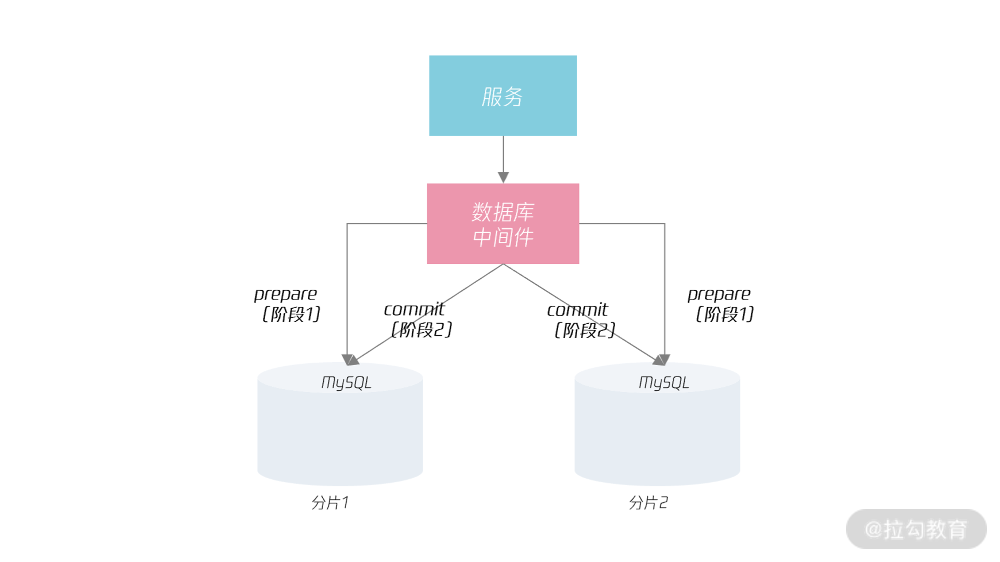
从上图可以发现，使用分布式数据库中间件后，可以对上层服务屏蔽分布式事务的实现，服务不需要关心下层的事务是本地事务还是分布式事务，就好像是单机事务本身一样。
2PC 要求第一段 prepare 的操作都成功，那么分布式事务才能提交，这样最终能够实现持久化，2PC 的代码逻辑如下所示：

上面就是 2PC 的 Java 代码实现，可以看到只有2个参与者第一阶段 prepare 都成功，那么分布式事务才能提交。
但是 2PC 的一个难点在于 prepare 都成功了，但是在进行第二阶段 commit 的时候，其中一个节点挂了。这时挂掉的那个节点在恢复后，或进行主从切换后，节点上之前执行成功的prepare 事务需要人为的接入处理，这个事务就称之为悬挂事务。
用户可以通过命令 XA_RECOVER 查看节点上事务有悬挂事务：
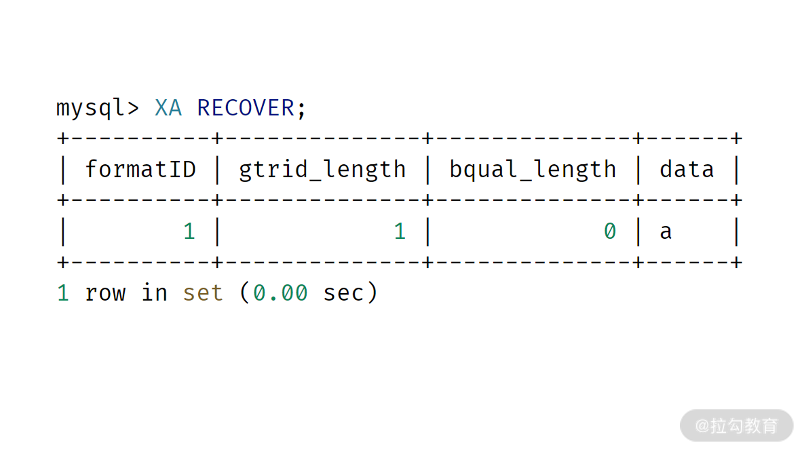
如果有悬挂事务，则这个事务持有的锁资源都是没有释放的。可以通过命令SHOW ENGINE INNODB STATUS 进行查看：

从上图可以看到，事务 5136 处于 PREPARE状态，已经有 218 秒了，这就是一个悬挂事务，并且这个事务只有了两个行锁对象。
可以通过命令 XA RECOVER 人工的进行提交： 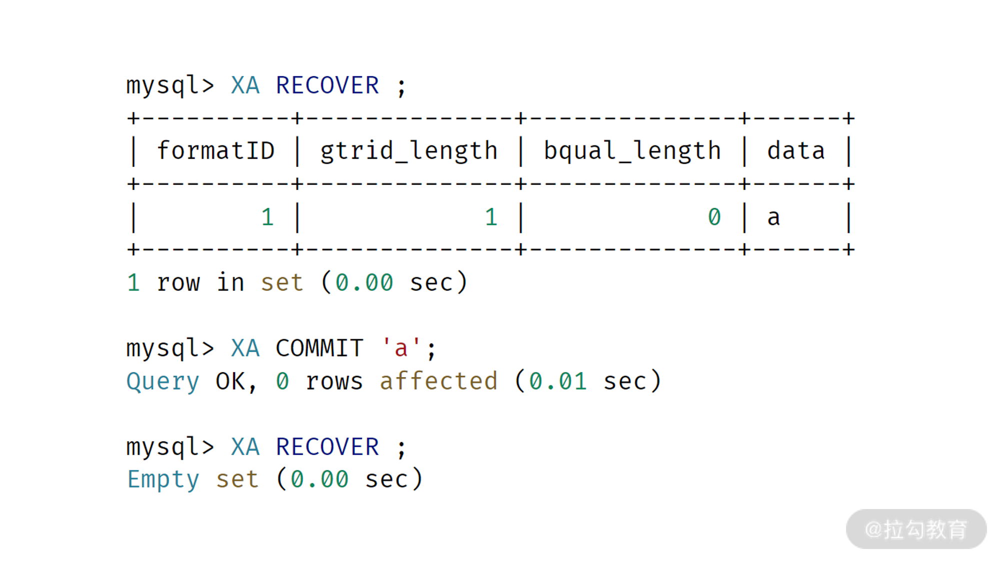
讲到这，同学们应该都了了分布式事务的 2PC 实现和使用方法。它是一种由数据库层实现强一致事务解决方案。其优点是使用简单，当前大部分的语言都支持 2PC 的实现。若使用中间件，业务完全就不用关心事务是不是分布式的。
然而，他的缺点是，事务的提交开销变大了，从 1 次 COMMIT 变成了两次 PREPARE 和COMMIT。而对于海量的互联网业务来说，2PC 的性能是无法接受。因此，这就有了业务级的分布式事务实现，即柔性事务。
柔性事务
柔性事务是指分布式事务由业务层实现，通过最终一致性完成分布式事务的工作。可以说，通过牺牲了一定的一致性，达到了分布式事务的性能要求。
业界常见的柔性事务有 TCC、SAGA、SEATA 这样的框架、也可以通过消息表实现。它们实现原理本身就是通过补偿机制，实现最终的一致性。柔性事务的难点就在于对于错误逻辑的处理。
为了讲述简单，这里用消息表作为柔性事务的案例分享。对于上述电商的核心电商下单逻辑，用消息表就拆分为 3 个阶段：
阶段1：
START TRANSACTION;
# 订单号，订单状态
INSERT INTO orders VALUES (...)
INSERT INTO lineitem VALUES (...)
COMMIT;
阶段2：
START TRANSACTION;
UPDATE stock SET count = count -1 WHERE sku_id = ?
# o_orderkey是消息表中的主键，具有唯一约束
INSERT INTO stock_message VALUES (o_orderkey, ... )
COMMIT;
阶段3：
UPDATE orders SET o_orderststus = 'F' WHERE o_orderkey = ?
上面的柔性事务中，订单表中的列 o_orderstatus 用于记录柔性事务是否完成，初始状态都是未完成。表 stock_message 记录对应订单是否已经扣除过相应的库存。若阶段 2 完成，则柔性事务必须完成。阶段 3 就是将柔性事务设置为完成，最终一致性的确定。
接着我们来下，若阶段 2 执行失败，即执行过程中节点发生了宕机。则后台的补偿逻辑回去扫描订单表中 o_orderstatus 为未完成的超时订单有哪些，然后看一下是否在对应的表stock_message 有记录，若有，则执行阶段 3。若无，可选择告知用户下单失败。
若阶段 3 执行失败，处理逻辑与阶段 2 基本一致，只是这时 2 肯定是完成的，只需要接着执行阶段 3 即可。
所以，这里的补偿逻辑程序就是实时/定期扫描超时订单，通过消息表判断这个柔性事务是继续执行还是执行失败，执行失败又要做哪些业务处理。
上面介绍的框架实现的柔性事务原理大致如此，只不过对于补偿的逻辑处理有些不同，又或者使用上更为通用一些。
对于海量的互联网业务来说，柔性事务性能更好，因此支付宝、淘宝等互联网业务都是使用柔性事务完成分布式事务的实现。